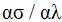

ПРЕДИСЛОВИЕ
Учебное пособие предназначено для студентов, обучающихся по специальности "Полиграфическое оборудование и системы обработки информации", а также "Информационные системы и технологии (издательско-полиграфический комплекс)". Изучение допечатного оборудования, которое предназначено для выполнения технологических операций по изготовлению печатных форм, с которых осуществляется тиражирование печатной продукции, является основой их профессиональной подготовки.
Технологическое оборудование систем допечатной подготовки по назначению можно разделить на оборудование для ввода и обработки текстовой и изобразительной информации, оборудование для изготовления фотоформ, оборудование для изготовления печатных форм и оборудование для контроля качества на всех стадиях допечатного технологического цикла.
Авторы учебного пособия при изложении материалов в основ-ном придерживались именно такой классификации. Учебное пособие содержит введение и семь глав.
В предисловии определен состав допечатного оборудования и даны краткие сведения о структуре учебного пособия.
Первая глава посвящена устройствам ввода и кодирования тек-стовой информации. В ней дана общая характеристика текстов, виды шрифтов и предъявляемые к ним требования. В главе изложены особенности клавиатурного ввода и конструкции клавиа-тур. Рассмотрен ввод информации с помощью читающих автоматов. Изложены методы распознавания и способы считывания знаков текста, а также речевой ввод информации.
Во второй главе рассмотрено оборудование для ввода и обработки изобразительной информации и его технические характеристики. Изложены основные элементы конструкций и приведены основные схемы построения сканеров. Кроме того, в главе кратко даны особенности зрительного восприятия, способы создания цветного изображения, методы растрирования и управ-ления цветом. Третья глава посвящена оборудованию для контроля качества. В ней описаны устройства получения корректурных отпечатков, лазерные и каплеструйные печатающие устройства, дана их классификация, принцип действия и особенности. В главе также рассмотрена цветопроба, ее виды и оборудование. Описаны принципиальные схемы денситометров, калориметров и спектрофотометров.
В четвертой главе рассмотрены технические характеристики и даны основные элементы и особенности конструкций фотонаборных автоматов.
Пятая глава посвящена системам допечатной подготовки, рабо-тающим по принципу "компьютер - печатная форма". В шестой главе рассмотрены принципиальные схемы конструк-ций печатных машин системы "Computer-to-Press". Цифровые печатные машины в учебном пособии приведены в основном как выводные устройства компьютерных систем допечат-ной обработки, и поэтому их описание ограничилось лишь принципиальной схемой работы.
Седьмая глава посвящена печатным машинам прямой цифровой печати ("Computer-to-Print"). В ней рассмотрены физические и технологические особенности электрографического процесса. Подробно изложена конструкция печатной машины E-Print 1000. В настоящем учебном пособии нашла отражение в основном цифровая печатная техника, используемая в технологических процессах автоматизированной обработки текстовой и изобразительной информации. В ней отсутствуют сведения об оборудовании, традиционно используемом в допечатных процессах, так как копировальные и экспонирующие установки, репродукционные фотоаппараты, проявочные машины и другое основное и вспомогательное оборудование, по мнению авторов, в достаточной степени изучено и описано как в научной, так и в учебной литературе.
1. УСТРОЙСТВО ВВОДА И ОЦИФРОВКИ ИНФОРМАЦИИ
1.1. Ввод и кодирование текстовой информации
В настоящее время стадия подготовки издания имеет большое многообразие средств ввода информации. Наиболее широко известными и распространенными из них являются клавиатура и мышь, а также сканеры, позволяющие автоматизировать процесс ввода текстовой информации.
Цифровые фотокамеры позволяют получать электронную вер-сию видеоматериала, которая в цифровом виде может легко вводиться, обрабатываться и передаваться по каналам связи.
Внедряемый в настоящее время речевой ввод расширяет грани-цы общения человека с вычислительной средой и повышает естественность этого общения.
Ввод, обработка, хранение и передача текстовой информации предполагает использование определенных методов ее кодирования. Методы кодирования, с одной стороны, открывают принципиальную возможность обработки информации путем реализации определенных процедур над кодами символов, знаков. С другой стороны, они позволяют более экономно использовать ресурсы памяти ПЭВМ. Поэтому часто методы кодирования называют методами сжатия информации. Чем выше коэффициент сжатия, тем процесс кодирования является более трудоемким. То же самое наблюдается и в процессах декодирования, которые порой могут весьма ощутимо замедлять процесс обработки информации.
Поэтому в процессе кодирования информации при отсутствии помех преследуется достижение следующих целей:
- обеспечение простоты, надежности и эффективности аппарат-ной реализации информационных устройств путем кодирования;
- минимальное время передачи информации;
- минимальный объем запоминающих устройств;
- простота выполнения арифметических и логических действий в принятой системе кодирования.
При кодировании информации обычно используются позицион-ные системы счисления, в которых значение каждого символа зави- сит от его положения (разряда) по отношению к другим символам. Существует целый ряд систем, которые легко сводятся к двум наиболее распространенным - двоичной и десятичной. При кодировании текстовой информации знаки преобразуются в последовательность двоичных сигналов - кодовые комбинации. Такое преобразование необходимо для того, чтобы можно было осуществлять прием, передачу и хранение текстовой информации. Однако при этом необходимо учитывать как вероятность появления каждой буквы, так и необходимость обнаружения ошибок передачи.
Теоретической базой для такого кодирования, названного эффективным, являются теоремы Шеннона. Эффективное кодирование состоит в том, чтобы, учитывая статистические свойства источника сообщения (вероятность появления каждой буквы), минимизировать среднее число двоичных знаков, используемых для кодирования одной буквы. В этом случае время на передачу сообщения и объем запоминающего устройства минимальны.
Проблема достоверности распознавания сообщений обычно обеспечивается внесением избыточности сообщения, позволяющей исключить ошибки передачи сигналов.
1.1.1. Общая характеристика текстов. Виды шрифтов и предъявляемые к ним требования.
В полиграфическом производстве работа с текстовой информацией приобретает основное значение, так как текст является главным объектом переработки при его редактировании, кодировании, наборе, корректуре и верстке. В основной издательской продукции доля текста в общей запечатанной площади изменяется в пределах от 70 до 100%.
Текстом (лат. textus - ткань, соединение слов) называют любое словесное произведение литературы, науки, искусства, напечатанное, написанное или бытующее в устной форме. В полиграфии имеют дело только с напечатанными или написанными текстами.
В полиграфическом воспроизведении текстов большое внимание уделяется выбору шрифтов, от которых во многом зависят не только принципы обработки текста, но и использование в полиграфической продукции. Шрифт (нем. schrift - письменность, буква) - это способ визуального кодирования смысловой информации, выраженной с помощью графических форм, знаков алфавитной системы.
Совокупность однотипных знаков шрифта, различных по вертикальному размеру (кеглю) и начертанию, но идентичных по характеру рисунка, объединяется в одну группу, называемую гарнитурой шрифта. Каждая гарнитура имеет свое название: Обыкновенная, Академическая, Литературная, Рубленая и т. д.
Начертание - это один вариант шрифтов из гарнитуры. Все начертания имеют стандартные названия и определяют вид шрифта. Название начертания состоит из нескольких слов, которые определяют насыщенность шрифта, степень наклона и его особенности. Например, курсивное начертание, полужирное, подчеркнутое и т. д.
В полиграфии приняты особые линейные единицы измерения: пункт, равный 0,376 мм, и квадрат, равный 18 мм. В квадрате содержится 48 пт. Эти единицы были введены в 1737 г. французским типографом Фурнье. Еще одной единицей измерения, используемой в полиграфии, является цицеро (1 цицеро = 12 пт).
Кегль шрифта (его размер) равен числу пунктов, укладывающихся в высоте буквы с добавлением пробелов, необходимых для начертания выносной части буквы "б" в верхнем пробеле и букв "р", "у" в нижнем пробеле. Таким образом, кегль равен расстоянию между вер-хними и нижними выносными элементами букв.
Буквы в строках всегда располагаются по базовой линии, а расстояние между строками называется интерлиньяжем.
В большинстве применяемых гарнитур самый мелкий кегль 6 пт, затем шрифты содержат четные величины пунктов: от 8 до 48. Более мелкие кегли - 4 и 5 пт, а также нечетные 7 и 9 пт применяются значительно реже.
Основные требования, предъявляемые к шрифту: удобочитаемость, технологичность и экономичность.
1. Удобочитаемость зависит от начертания шрифта, кегля, оптических свойств бумаги и др. (интерлиньяжа, длины строк). Она определяется скоростью чтения. Эксперименты и опыт показали, что для взрослого человека при длине строки 10-11 см наиболее удобный кегль - 10 пт.
2. Технологичность шрифта - это его способность обеспечить наиболее точные отпечатки. Наиболее технологичным считаются шрифты рубленные.
3. Экономичность - это количество печатных знаков определенного кегля на единице площади бумаги. Гарнитура шрифта обыкновенная узкая считается наиболее экономичной.
Развитие печатных технологий, их автоматизация и переход к компьютерным полиграфическим системам потребовал создания циф-ровых видов шрифтов.
Машинные цифровые шрифты, применяемые при автоматизированной обработке текста с помощью ПЭВМ, отличаются большим разнообразием. Размер пункта в них несколько меньше стандартного полиграфического и составляет 0,353 мм. Используемые для обработки текстов пакеты программ позволяют получить размеры шрифта не только основных кеглей, но и межкегельные размеры шрифтов путем масштабирования знаков текста.
Используемые в настоящее время машинные шрифты разработаны в 1989 г. фирмами Microsoft и Apple, они интегрированы в операционную систему Windows и разделяются в зависимости от формы представления на три вида.
Растровые шрифты. Знаки шрифта представляют собой оцифрованное изображение (рис. 1). Хранятся в виде набора битов, отображающих различные элементы этих знаков. Растровые шрифты нельзя масштабировать, поэтому каждый кегль должен храниться в виде отдельного файла. Эти шрифты используются в основном для изображения букв на экране, однако некоторые из них используют также при выводе знаков на принтер. Процесс печати растровых знаков сводится к переносу этого изображения на выводное устройство.

Растровые шрифты обладают различной разрешающей способ-ностью, которая определяется количеством точек на 1 см изображе-ния. По вертикали она изменяется от 19 до 48 точек на 1 см, а по горизонтали - от 24 до 48 точек на 1 см.
Растровые шрифты имеют существенный недостаток, связанный с тем, что при их увеличении и воспроизведении проявляется множество дефектов, нарушается рисунок, который при большом увеличении может измениться до неузнаваемости. Это и не позволяет производить масштабирование шрифта.
При описании векторных (контурных) шрифтов контур символа аппроксимируют векторами (рис. 2), и точность его передачи определяется их количеством. При векторном способе кодирования информация о начертании знака представляет массив приращений координат концов векторов (проекции векторов), последовательность которых соответствует направлению обхода каждого замкнутого контура знака только базового кегля. Остальные кегли получаются из базового масштабным преобразованием:
где l и lб - линейные размеры знака в небазовом и базовом кеглях;
Кб и К - базовый и небазовый кегли;
М= К / Кб - масштабный множитель.

при контурно-векторном описании изображения знаков
Таким образом, векторные шрифты можно легко масштабировать и производить другие трансформации (наклон или поворот), что явля-ется их существенным достоинством. При этом любое устройство или программа, способная воспроизводить векторы, сможет воспроизве-сти форму знака.
Шрифты True Type создаются контурным методом, поэтому они еще называются контурными и также являются масштабируемыми. Недостатком этого метода можно считать некоторую сложность по-строения при рисовании знака на компьютере.
При контурном описании знака контур разбивается на отдельные участки, представляющие собой отрезки прямой и дуги окружностей (рис. 3). При кодировании контуров кроме координат начала и конца векторов задаются параметры дуг окружностей (радиус окружности, координаты центра окружности и точек сопряжения дуг).
при контурном описании изображения знаков
Кегли масштабируемых шрифтов могут изменяться в очень ши-роких пределах: от 2 до 999 пт. Текст, набранный с использованием шрифтов True Type, может быть выведен на любом принтере: лазер-ном, струйном или матричном.
Для набора математических знаков и греческих букв используется шрифт WingDings. В нем содержится также большое количество символов типа стрелок, крестиков, кружков и т. п. Большинство этих знаков не имеется на клавиатуре персональной ЭВМ, поэтому для ввода необходимо использовать таблицу знаков.
Инсталяция шрифтов осуществляется автоматически при уста-новке определенной системы Windows. Число одновременно исполь-зуемых шрифтов в этой операционной системе ограничено, но сум-марный объем файла при этом не должен превышать 64 Кбайт. Обыч-но установка одного шрифта добавляет к объему файла примерно 40 байт. Для экономии дисковой памяти возможно удаление старых шрифтов и встраивание вместо них новых.
1.1.2. Формы информации, содержащейся в текстах.
В про-цессе преобразований текста и работы с ним приходится учитывать различные формы информации, содержащейся в тексте в целом и от-дельных его знаках.
Символьная (шенноновская) информация определяется веро-ятностными характеристиками знаков текста, взаимной корреляцией между знаками, вероятностью появления слов и словосочетаний. Для определения количества такой информации существует строго обос-нованный К. Шенноном математический аппарат.
Количество символьной информации на один символ H определя-ется формулой
где Р - вероятность появления символов в тексте.
Необходимость изучения статистики языка возникла с появлением массовых коммуникаций (телеграф, радио) и использовалась для коди-рования сообщений (тайнописи). С появлением фотонаборных автома-тов и созданием ЭВМ возникла потребность в совершенствовании мето-дов кодирования, основанных на статистических и информационных свойствах текстов. В настоящее время знание статистических свойств языков широко применяется при решении различных задач машинной обработки текстов (распознавание символов, реферирование и перевод текстов и т. д.).
Графическая (изобразительная) информация содержится в на-чертании знаков шрифта. Она зависит от способа его представления в ЭВМ. Растровое представление применяется при использовании матричных, струйных и лазерных принтеров, а также при отображе-нии шрифтов на экране видеотерминала.
Векторное (шрифтовое) представление применяется при выводе шрифта на графопостроителе (плоттере). Контурное представление описывает знаки совокупностью участков прямых и окружностей. За-полнение таких контуров может быть сплошным и растрированным. Алгоритмическое представление состоит в применении сложных функций для описания контуров знаков. Очень часто для этой цели используются полиномы различных степеней, аппроксимирующие контуры спроектированного знака.
Основной задачей совершенствования представления знаков яв-ляется уменьшение объема памяти для шрифтового обеспечения. Наибольшего объема памяти требует матричное представление. Пере-ход к другим видам представления осуществляется для сжатия данных об изображении знака.
Синтаксическая информация характеризует структурную орга-низацию слов текста в целом и является количественной мерой струк-турно-статистического разнообразия и свободы выбора лингвистиче-ского варианта текста.
Семантическая информация определяет смысл передаваемого сообщения. Она в значительной степени связана с синтаксической информацией, но почти не связана информацией символьной (шенно-новской).
Так, знаки "т", "р", "с" и "о" обладают вполне определенной эн-тропией и количеством символьной информации. Но их различные со-четания: сорт, рост, торс, трос - приводят к принципиальному измене-нию смысла, а следовательно, и семантической информации.
Воспринимая шрифт как систему визуального кодирования се-мантической информации, можно выделить следующие его свойства:
- определенному знаку шрифта, относящемуся к одному алфа-виту, должен соответствовать только один набор существенных отли-чительных характеристик;
- для обеспечения восприятия знаков их изображения, относя-щиеся к одному шрифту, должны иметь похожие элементы;
- знаки шрифта должны быть легко читаемыми, т. е. особенности их изображений не должны затруднять их распознавания.
Таким образом, шрифт, объединенный языковыми и художест-венными особенностями, представляет собой набор знаков, кодирую-щих текстовую информацию.
1.1.3. Клавиатурный ввод информации.
Процесс ввода инфор-мации предусматривает цепь преобразования вводимой информации. Клавиатура - основное устройство ввода данных, кодируемых путем нажатия расположенных на ней клавиш. Для ввода используют клавиатуры специализированные и простые. При применении специали-зированной клавиатуры каждой клавише соответствует определенный символ или целая строка, что значительно повышает скорость этой операции. Аналогично можно организовать ввод наиболее употреб-ляемых в сообщениях слов, сочетаний, букв и т. д., тогда время ввода одного элемента информации (буква, слово, фраза) определяется соотношением
| (1) |
где tсч - время считывания оператором элемента информации;
tп - время поиска клавиши, соответствующей данному информа-ционному элементу;
tн - время, необходимое для нажатия клавиши;
tк - время переходного процесса выработки соответствующего кода.
Если принять tн = const, tк = 0, tсч = const для всех клавиш кла-виатуры (информационных элементов), то выражение (1) можно записать в виде
где a и b - постоянные параметры, определяющие характер подготовленности оператора (быстродействие, реакцию оператора на изменение информации);
N - общее число клавиш.
Если сообщение содержит алфавитно-цифровых символов, то для его ввода с помощью обычной клавиатуры требуется время
где N0 - число клавиш обычной клавиатуры.
При вводе того же сообщения на специализированной клавиатуре требуется время
где p - суммарная вероятность появления в текстах сообщений укрупненных элементов информации;
n - средняя длина укрупненных элементов информации (кроме отдельных букв);
N - число клавиш специализированной клавиатуры.
Эффективность ввода с помощью специализированной клавиатуры достигается в том случае, если она содержит относительно небольшое число клавиш (до 200).
Современные тенденции в полиграфии таковы, что построение наборных комплексов и систем обработки информации в большей мере решается на базе вычислительной техники общего применения. Как правило, современный компьютер имеет стандартную клавиатуру, которая используется как для обработки текстов, так и для других целей. Поэтому в подобных системах кодирование множества знаков определяется специальными таблицами.
Современные клавиатуры выполняются, как правило, в виде конструктивно и функционально измененного электронного узла, оснащенного клавишными переключателями, которые преобразуют движения пальцев руки человека в электрический сигнал и тем самым реализуют специальные функции кодирования и управления клавиатурой. Современные клавиатуры используют 101 клавишный стандарт, применяемый в большинстве выпускаемых ПЭВМ.
Для упрощения работы с клавиатурой используется принцип кодирования клавиш, не связанный с кодированием символа, т. е. в системное устройство ПЭВМ посылается код клавиши, а не код символа, а процессор ПЭВМ позиционный код клавиши преобразует с помощью специальной программы в код символа. Такая особенность работы клавиатур позволяет расширить их функциональные возможности, обеспечивая гибкость и мобильность, позволяя работать с несколькими фонетическими системами (алфавитами или буквами) или обеспечить с помощью специальных программ использование тех или иных клавиш для других целей.
По функциональному назначению клавиши клавиатурного набора подразделяются на наборные группировки (рис. 4).
Алфавитно-цифровое поле - это расположенная в центре и предназначенная для ввода алфавитно-цифровых символов многорядная матрица клавиш. Причем позиции символов алфавитно-цифровых клавиш наборного поля соответствуют стандарту символов для пишущих машинок, принятому еще в начале ХХ в., что способствует высокой производительности ввода информации. Помимо основного наборного поля клавиатура также содержит вспомогательное поле, необходимое для ввода числовой информации. Оно может содержать не только цифры, но и символы арифметических операций.

1 - алфавитно-цифровое поле; 2 - управляющие клавиши; 3 - поле
редактирования; 4 - отдельное цифровое поле; 5 - функциональные клавиши
Кроме алфавитно-цифровых клавиш в клавиатуре имеются управляющие клавиши, предназначенные для переключения алфавитов, ввода прописных или строчных букв и других управляющих действий. Они располагаются, как правило, слева и справа от алфавитно-цифровых и входят в состав основного наборного поля. К ним относятся и клавиши управления курсором. Хотя в некоторых моделях клавиатур они могут размещаться в отдельной зоне. К управляющим клавишам также относятся так называемые функциональные клавиши (F1-F12), используемые для ввода наиболее часто задаваемых команд или функций.
Технические и эргономические характеристики клавиатур во многом определяются конструкцией и типом клавишных переключателей.
По способу управления клавишные переключатели делятся на контактные и бесконтактные. Контактные переключатели, работающие по принципу "замыкание - размыкание цепи электромеханических контактов", срабатывают после нажатия или отпускания клавиши. Такие переключатели имеют ряд достоинств:
- простота конструкции;
- невысокая стоимость;
- низкое омическое сопротивление контакта.
К недостаткам контактных переключателей можно отнести:
- наличие "дребезга" контакта вследствие неустойчивого замыкания (размыкания) цепи при нажатии (отпускании) клавиши;
- непостоянство переходного сопротивления контакта по причине окисления и электроэрозии;
- относительно малый срок службы (переключений до отказа).
Влияние некоторых недостатков можно устранить. Так, например, "дребезг" контактов устраняют схемным или программным путем, а непостоянство переходного сопротивления значительно снижается за счет герметизации контактов. Примером являются герконовые контактные переключатели, в которых коммутация герметизированных пружинных контактов из ферромагнитных материалов осуществляется миниатюрным постоянным магнитом, приводимым в движение клавишным стержнем (рис. 5).

1 - геркон; 2 - миниатюрный постоянный магнит; 3 - клавишный стержень
Широкое распространение получили простые по конструкции контактные переключатели на основе токопроводящей резины. На нижней поверхности таких переключателей помещается прокладка из токопроводящей резины, которая в момент нажатия замыкает на плате клавиатуры нужные контакты. Конструкции таких клавиатур характеризуются малым ходом клавиш.
Мембранные клавиатуры характеризуются хорошей герметичностью, низким "дребезгом" и относительно высокой технологичностью изготовления. Клавишные переключатели таких клавиатур (рис. 6) состоят из головки клавиши, возвратной и контактной пружин и устанавливаются в корпусе клавиатуры над мембранной панелью, выполненной в виде двух изолированных печатных плат на лавсановой основе с металлизированными контактами. При нажатии на клавишу усилие через контактную пружину передается на гибкие печатные платы, замыкая их контакты. Возвратная пружина возвращает клавишу в исходное положение.
Несмотря на вышеприведенные достоинства, мембранные клавиатуры по причине их низкой ремонтопригодности не нашли широкого применения у потребителя.

1 - металлическое основание; 2 - лавсановая изоляционная прокладка;
3 - контактная пружина; 4 - головка клавиш; 5 - возвратная пружина;
6 - элемент корпуса; 7 - гибкие контактные платы с контактами
К бесконтактным переключателям относятся клавишные переключатели, механическое воздействие (нажатие или прикосновение) на которых преобразуется в изменение емкости или индуктивности, которые в свою очередь преобразуются в электрический сигнал. К бесконтактным переключателям относятся также сенсорные и оптоэлектронные переключатели.
Основные достоинства бесконтактных переключателей:
- бесшумность эксплуатации;
- влаго- и коррозиозащищенность.
1 - клавиша; 2 - металлическая пластина; 3 - изолятор; 4 - обкладки печатного
конденсатора; G - высокочастотный генератор; VT - транзистор
Устройство и работу бесконтактного емкостного переключателя поясняет рис. 7. На печатной плате нанесены обкладки конденсатора, сверху заизолируемые пленкой, причем одна из обкладок подключается к генератору, который подает специальный частотный сигнал. При нажатии на клавишу соединенная с ней металлическая пластина опускается на обкладки конденсатора, вызывая изменение его емкостного сопротивления. В результате на второй обкладке появляется сигнал о срабатывании клавиши.
Конструктивно подобным образом выполнен клавишный переключатель индуктивного типа (рис. 8). Отличительной особенностью его является то, что при нажатии на клавишу металлическая пластина приближается к индуктивности, вызывая уменьшение значений последней, в результате этого появляется сигнал о срабатывании клавиши.

1 - направляющая; 2 - подвижный шток; 3 - клавиша; 4 - подвижная металлическая
пластина; 5 - пружина; 6 - печатная индуктивность; 7 - защитная пленка
В оптоэлектронных клавишных переключателях нажатие клавиши приводит к вводу экрана между светодиодом (источником) и фотодиодом, что вызывает появление сигнала о срабатывании клавиши.
Управление работой клавиатур современных ПЭВМ осуществляется с помощью контроллера, выполненного на микропроцессорах.
Микропроцессор, используемый в клавиатуре, производит сканирование матрицы клавишного поля, отработку "дребезга" при нажатии и отпускании клавиш, буферизацию кодов сканирования и поддержание двунаправленной последовательной передачи данных с системным устройством. Микропроцессор выполняет также тестирование клавиатуры при ее включении или по требованию системного устройства. При нажатии на клавишу наборного поля микропроцессор посылает в системное устройство так называемый код нажатия, а при отпускании клавиши микропроцессор подтверждает это действие кодом отжатия.
Таким образом, работа клавиатуры проходит последовательно через цикл сканирования клавишного поля и цикл выдачи позиционного кода.
1.1.4. Назначение, структура и характеристика читающих автоматов.
Читающие автоматы предназначены для автоматического чтения и распознавания цифр, букв и слов печатного и рукописного текста с целью их ввода в ЭВМ. Существует принципиальное различие метода ввода информации с помощью обычного сканера, а именно: введенный с помощью сканера текст не может быть подвергнут переработке с целью замены гарнитуры шрифта, выключки строк, верстки и т. д.
Необходимость автоматизации распознавания текста вызвана большим разрывом между скоростью клавиатурного ввода его в ЭВМ и скоростью обработки в ЭВМ или процессоре наборного автомата.
На ввод информации в ЭВМ затрачивается 80% от общего времени, потребного для обработки информации. Один читающий автомат заменяет около 20 операторов. Поэтому внедрение их в полиграфическое производство дает большой экономический эффект. Вторым достоинством читающих автоматов является повышение качества ввода текста в ЭВМ за счет значительного снижения количества ошибок.
Читающие автоматы также позволяют автоматизировать процесс корректуры - тип считки текста.
Они могут быть использованы с целью селектирования формул, цифрового материала, таблиц, иностранных слов, а также для объективных методов оценки степени сложности текста. Это позволяет добиться значительного сокращения времени для решения всех перечисленных задач.
Сначала применение читающих автоматов началось в банковском деле для считывания цифр на чеках, а затем на почте для сортировки корреспонденции. В полиграфии читающие автоматы начали использовать в начале 70-х гг.
Следует отметить, что распространению читающих автоматов в полиграфии до настоящего времени препятствуют их некоторые технические недостатки, главным из которых является применение специальных шрифтов с целью улучшения надежности распознавания.
Системы автоматического чтения и распознавания текстов технически реализованы в виде двух вариантов: специализированные читающие автоматы и персональные ЭВМ со сканерами и принтерами, управляемые пакетом программ распознавания знаков текста.
Читающий автомат включает в свой состав три основных устройства: рецепторное, селекторное и эффекторное.
Рецепторное устройство предназначено для сбора информации и считывания текста. Оно является важнейшим в читающем автомате, т. к. кроме основной задачи выполняет следующие функции: нахождение начальной точки, определение положения знака каждой строки, определение конца строки и конца страницы.
Селекторное устройство служит для выбора признаков, идентификации, классификации и распознавания образов. Оно может быть представлено в следующем виде: самонастраивающийся фильтр признаков, который синтезирует воспринимаемый образ, самонастраивающийся генератор эталонных образов и устройство отнесения синтезированного образа к одному определенному классу.
Эффекторное устройство предназначено для представления результатов распознавания на каком-либо носителе информации, бумаге, экране монитора и т. д.
Кроме трех основных названных устройств, читающий автомат включает входной бункер со счетчиком и транспортирующим устройством для подачи листа в рецепторное устройство с последующим выводом этого листа после прочтения в выходной бункер или в бункер листов с отказами, если таковые имеются, а также устройство передачи символа отказа со счетчиком числа этого отказа с указанием строки и знака.
Основными характеристиками читающих автоматов, служащих для распознавания текстов, являются скорость считывания, вероятность ошибки и вероятность отказа считывания (табл. 1).
Таблица 1
Основные характеристики читающих автоматов
| Величина показателя | Скорость | Вероятность | Число распознанных знаков | ||
| считывания, знак/c |
чтения, строк/мин |
ошибки | отказа | ||
| max | 3000 | 3200 | 10-4 | 10-3 | 104 |
| min | 60 | 150 | 10-7 | 10-4 | 52 |
Необходимо отметить, что минимальные значения вероятности ошибки распознавания и ошибки отказа распознавания, приведенные в табл. 1, относятся к стилизованным шрифтам, вероятность распознавания знаков которых весьма велика. Что касается машинописных шрифтов, то они и сегодня распознаются с ошибками.
Наибольшее количество ошибок в распознавании машинописных текстов возникает в буквах Ж, Ю, И, Й. Это объясняется тем, что буквы Ж и Ю имеют сложную конструкцию, а буквы И и Й очень мало отличаются друг от друга.
Из анализа литературных источников видно, что различие в принципах построения читающих автоматов связано с их назначением: одни читающие автоматы предназначены только для распознавания стилизованных цифр, другие - для распознавания печатных текстов, а третьи - для распознавания рукописных текстов.
Таблица 2
Обобщенные технические характеристики читающих автоматов с разными методами считывания
| Метод считывания | Характеристика | |||
| скорость, знак/c | число строк в мин | максимальный размер листа, мм |
минимальный размер листа, мм |
|
| Бегущим лучом | 2200 | 20 | 279x216 | 127x76 |
| Линейкой фотоэлементов | 370 | 5,5 | 305x356 | 102x65 |
| Матрицей фотоэлементов | 2400 | 12-30 | 356x356 | 125x82 |
Безусловно, различные по назначению читающие автоматы имеют и различные технические характеристики.
В табл. 2 приведены обобщенные технические характеристики читающих автоматов, имеющих различные методы считывания.
Из приведенной таблицы видно, что наибольшей скоростью чтения обладают читающие автоматы, работающие на методе считывания бегущим лучом и матрицей фотоэлементов.
1.1.5. Методы распознавания и способы считывания знаков
Распознавание представляет собой процесс преобразования входной информации по некоторым параметрам и признакам, в результате которого она относится к какому-либо классу.
Система распознавания состоит из совокупности технических устройств и программных алгоритмов распознавания и в общем случае решает несколько задач.
Первая из них заключается в определении полного перечня признаков представленной информации. Они делятся на детерминированные, вероятностные, логические и структурные.
К детерминированным относятся конкретные числовые значе-ния, например размер знака, его координаты по расположению и др.
К вероятностным относятся, например, признаки знаков руко-писного написания, зависящие от личности.
Логические - это признаки, которые могут принимать два взаимоисключающих значения: наличие или отсутствие, например, засечек у отдельных гарнитур шрифтов.
Структурные признаки представляют набор, цепочку элемен-тов (терминалов) структуры, так, например, всякое слово имеет набор знаков, знак - набор линий или примитивов.
Следующая задача - это классификация распознанной информации на основании определенных признаков.
Для этого разрабатываются рабочие алфавиты классов и признаков, которые позволяют при распознавании обеспечить максимальную эффективность такой работы.
Одна из ключевых задач - выбор алгоритмов распознавания, позволяющих отнести распознаваемую информацию к тому или другому классу. Эту задачу можно решить путем построения математической модели системы распознавания.
При создании моделей и алгоритмов распознавания используются соответствующие методы.
Прежде чем непосредственно перейти к рассмотрению методов распознавания текстовой информации, необходимо отметить, что распознаваться могут два вида символов: стилизованные и нестилизованные. Задача распознавания стилизованных символов является более простой и решена в почтовой связи и торговле. Простейшие ее методы основаны на сравнении стилизованных шрифтов с эталонами. Задача считывания и распознавания машинописного или типографского и особенно рукописного текста значительно сложнее. Следует отметить, что на надежность распознавания таких текстов существенное влияние оказывает качество печати или написание.
Рассмотрим методы, применяемые для реализации задач распо-знавания текстовой информации.
Метод зондов. Состоит в том, что на рецепторном поле при распознавании изображения знака располагаются зонды, которые воспринимают сигналы, пропорциональные коэффициенту отражения света от элементов знака. Каждому знаку соответствует определенная комбинация освещенных зондов, причем зонды располагаются так, чтобы любые знаки различались хотя бы одним освещенным зондом.
В табл. 3 приведена схема расположения зондов с таблицей ко-довых комбинаций для распознавания цифр. Приведенные в таблице кодовые комбинации: 1 - пересечение контура цифры с зондом; 0 - непересечение контура цифры с зондом; - (прочерк) - зонд не участвует в распознавании знака.
Таблица 3
Схема расположения зондов и кодовые комбинации для распознавания цифр
| Положение зондов | Знаки | Номера зондов | ||||||
| 1 | 2 | 3 | 4 | 5 | 6 | 7 | ||
| 1 | 0 | 1 | - | 1 | 0 | - | 1 | |
| 2 | 1 | 1 | 1 | 1 | 1 | 0 | 1 | |
| 3 | 0 | 1 | 1 | 1 | 0 | 1 | 1 | |
| 4 | - | - | 1 | 1 | 1 | 1 | 1 | |
| 5 | 1 | 1 | 1 | - | 0 | 1 | 1 | |
| 6 | 1 | 1 | - | 1 | 1 | 1 | 1 | |
| 7 | - | 1 | 1 | - | - | 1 | 1 | |
| 8 | 1 | 1 | 1 | 1 | 1 | 1 | 1 | |
| 9 | 1 | 1 | 1 | 1 | 0 | 1 | 1 | |
| 0 | 1 | 1 | 1 | 0 | 1 | 1 | 1 | |
Свое развитие метод зондов получил в методе фрагментов, ко-торый заключается в следующем. Все распознаваемые одинаково ориентируемые символы накладываются друг на друга, и при этом окажется, что одни области поля изображения всегда будут темны-ми, другие - светлыми, а третья часть областей для одних знаков будет темной, для других - светлой. Эта часть и несет информацию о распознавании знаков и называется фрагментами поля изображения, причем фрагменты могут состоять из нескольких частей в различных местах рецепторного поля. Кодовое описание этих фрагментов должно однозначно соответствовать каждому распознавае-мому символу.
Матричный метод. Главной особенностью матричных методов является представление печатных символов в виде нормированных матриц, элементы которых определяются совокупностью темных и светлых точек, на которые разбивается изображение. Распознавание символа происходит путем сравнения матрицы считываемого символа с матрицами-эталонами всего алфавита.
Наиболее эффективно распознавание символов происходит пу-тем расчета весовых проекций символа на взаимно перпендикулярные оси Х и Y, в результате чего получаются две линейные плотности символов вдоль соответствующих осей. Затем определяется математи-ческое ожидание черных точек в каждой строке или столбце матрицы. В дополнение к математическому ожиданию можно использовать и дисперсию числа черных точек в строке, что позволит учесть отклонение элементов матрицы распознаваемого знака от эталонной. Однако совпадение указанных характеристик распознаваемого символа с аналогичными характеристиками одного из эталонных символов не может гарантировать их абсолютную идентичность. Количество подобных ошибочных совпадений во многом зависит от особенностей начертания символа.
Корреляционный метод. Этот метод распознавания символов является разновидностью матричного метода. Он обычно применяется для распознавания знаков машинописных и типографских текстов, например в читающих автоматах, и может быть реализован в двух вариантах.
Первый вариант. Процедура распознавания неизвестного символа S сводится к определению коэффициента r корреляции изображения этого символа с каждым эталонным символом в соответствии с формулой

где b - сдвиг распознаваемого символа относительно эталонных.
Изображение распознаваемого символа отождествляется с тем эталоном, для которого коэффициент корреляции максимален.
Второй вариант предусматривает разбиение знака на фрагменты и для каждого из них рассчитывается несколько автокорреляционных функций со сдвигом плоскостей изображения друг относительно друга в нескольких произвольных направлениях, в результате чего происходит так называемое морфологическое автокорреляционное преобразование (МАП). После этого производится сравнение МАП с эталонным МАП.
В некоторых случаях для повышения достоверности кроме автокорреляционной функции используются другие функции, которые являются производными от нее. Эти функции повышают надежность распознавания, а также уменьшают влияние помарок печати и растискивания на процесс распознавания.
Квазитопологический метод. Метод основан на анализе топологической структуры знаков: мест начала и конца линий, разветвление линий, изменение направления и длины линий, изломов и соединений. Для каждого из распознаваемых знаков формируется свой код, зависящий только от его топологической структуры и не зависящий от его расположения на бумаге.
Читающие автоматы, в которых реализуется квазитопологический метод распознавания, состоит из устройства следящей развертки, кодирующего устройства и устройства сравнения кодов.
Система слежения обеспечивает последовательный обход контура знака. Например, при обходе контуров букв А, Н и Р (рис. 9) необходимо фиксировать точки обрыва линий и кодировать их цифрой 1, а точки, где сходятся три и более линии кодировать цифрой 0.
В соответствии с принятым обозначением код буквы А имеет вид: 1001001, буквы Н - 10100101001, буквы Р - 1001.
Достоинством указанного метода является независимость от начертания букв. Однако для его реализации необходимо вводить для некоторых знаков дополнительные признаки, которые позволили бы различать буквы П, Л, С, Г, а также цифры 6 и 9.
Существуют также и другие методы распознавания, однако следует отметить, что практически все они дают погрешности при невысоком качестве изображения и повысить процент распознавания символа можно, если анализ текста проводится сразу несколькими методами. Сравнительный анализ существующих методов распознавания показывает, что наиболее совершенным является корреляционный метод, т. к. он обеспечивает наибольшую достоверность. Однако его применение требует выполнения большого числа расчетов для распознавания одного символа.
1.1.6. Способы считывания знаков.
В системах распознавания знаков текста применяются четыре основных способа считывания знаков:
- световым лучом;
- линейкой фотоэлементов;
- матрицей фотоэлементов;
- слежение за кривой.
Способ считывания световым лучом. При реализации такого способа детали знака засвечиваются световым лучом. Проходя многократно по каждому знаку через определенные промежутки времени, световой луч образует растровую сетку.
Он может считывать одну строку за другой, перемещаясь вдоль и поперек страницы. Страница при таком методе считывания может оставаться неподвижной.
Световой луч может формироваться с помощью оптико-механи-ческих устройств или электронно-лучевой трубки, использование которой позволяет существенно повысить скорость считывания знаков, а следовательно, и производительность читающего автомата.

Чтение знаков осуществляется с помощью одного или нескольких фотоумножителей, на катод которых с помощью оптических устройств проектируется изображение участков знака, освещенных световым лучом. Величина сигнала на выходе фотоумножителя зависит от того, какой участок знака в данный момент освещается бегущим лучом.
Фотоумножитель при движении луча воспринимает свет только от отдельных точек растра и отключается при обратном ходе луча. В результате электронный образ знака представляет собой набор точек, (рис. 10).
Достоинством метода бегущего луча являются:
- большая скорость считывания;
- возможность выполнения операции считывания с помощью электронных, а не механических устройств;
- возможность считывания знаков при неподвижной странице, что исключает необходимость сложных устройств синхронизации движения страницы с функционированием оптических и электронных устройств.
Недостатком метода бегущего луча является низкая помехозащищенность от засветки знаков посторонними источниками света.
Способ считывания линейкой фотоэлементов. Сущность этого способа заключается в том, что освещенная строка печатного текста проектируется на вертикальную линейку из фотоэлементов. При этом строка с постоянной скоростью перемещается поперек линейки. Результаты считывания отдельных полосок знака записываются в устройство памяти и хранятся в нем до того момента, пока знак не пройдет полностью.
Схема считывания знаков изображена на рис. 11. Число фотоэлементов в линейке должно обеспечить перекрытие изображения знака и требуемую разрешающую способность. Обычно линейка включает до 30 фотоэлементов. Сигнал, снимаемый с каждого элемента, квантуется по двум уровням: темному и светлому. В некоторых читающих автоматах квантование осуществляется для четырех уровней, что обеспечивает повышение надежности распознавания знаков.
Рассматриваемый способ считывания требует обеспечения максимального контраста между изображением знака и окружающим его фоном. Поэтому при работе считывающего устройства необходимо обеспечить максимальную освещенность текста.
Следует отметить, что текст, отпечатанный на глянцевой бумаге краской с высокой отражательной способностью, обладает недостаточным контрастом в области спектральной чувствительности фотоэлементов. Для усиления контраста иногда применяются инфракрасные источники излучения.

Достоинством рассмотренного способа является его высокая чувствительность и независимость надежности распознавания от внешних засветок.
Недостатком его является необходимость тщательной синхронизации механической, оптической и электронной частей устройства считывания, а также повышенные требования к качеству читаемого материала.
Способ слежения за кривой. Этот способ основан на последовательном обходе лучом электронно-лучевой трубки контура знака. Изменение направления движения луча и характерные точки контура (обрыв линии, точки схождения линий) фиксируются и передаются в запоминающее устройство.
Системы слежения могут быть двух типов: обеспечивающие движение луча по границе знака и работающие в колебательном режиме, тогда луч периодически пересекает границу темного и светлого участков знака и одновременно перемещается вдоль его контура.
Достоинством способа является возможность использования его в системах распознавания рукописных текстов, текстов, содержащих разноформатные знаки, а также при кодировании нестандартных знаков и формул.
Недостатками способа являются:
- необходимость и сложность технической реализации обратного хода луча;
- сложность выбора начальной точки слежения;
- сложность обеспечения слежения при разрывах контуров знаков (например, знаков i и j).
Способ считывания матрицой фотоэлементов. На матрицу фотоэлементов проецируется увеличенное изображение каждого знака, поэтому информация о нем поступает в систему распознавания не по частям, а одновременно.
Объем информации о каждом знаке зависит от числа элементов в матрице. Обычно это 16 рядов по 15 элементов в ряду, т. е. 240 элементов, или 20 рядов по 20 элементов в каждом ряду, т. е. 400 элементов в матрице.
Достоинствами матричного способа считывания являются:
- простота механизмов считывания;
- возможность считывания различных по форме, размерам и способам нанесения знака.
Недостатком способа является сложность изготовления матрицы элементов.
1.1.7. Речевой ввод информации.
Системы распознавания звуков речи весьма перспективны, так как позволяют кардинальным образом решить проблему ввода информации в ЭВМ с целью ее дальнейшей обработки, а также обеспечения возможности управления голосом различными машинами и роботами.
Решение этой задачи сводится сначала к распознаванию звуков речи (фонем), а затем к объединению этих звуков в слова.
Любое устное сообщение может быть представлено последовательностью фонем и пауз между ними. Точное выделение фонем и их число позволяют описывать устную речь без искажений. В русской устной речи выделяют порядка 40-45 фонем, которым соответствуют определенные коды, хранящиеся в памяти ЭВМ.
Распознавание речи может осуществляться на уровне объединения фонем в слова и происходить в памяти ЭВМ в результате сравнения речевого слова с моделью-эталоном, хранящимся в памяти. Словари подобных эталонов насчитывают до нескольких десятков единиц. Главная трудность в реализации таких устройств - распознавание речи отдельных людей: так как одни и те же слова, произнесенные разными людьми, отличаются дикцией, интонацией и скоростью произношения. Поэтому сразу не проводят точное сравнение речевого сигнала с моделью, а отыскивают наиболее близкую модель по определенному критерию. Таким критерием в акустических распознавающих устройствах являются методы частотного анализа, позволяющие разделить исследуемый сигнал на сумму частотных составляющих.
Простейший анализатор представляет собой набор частотных полосовых фильтров, т. е. многоканальный анализатор, который анализирует входной сигнал одновременно во всем диапазоне частот и называется параллельным анализатором.
Другой метод распознавания звуковых образов, называемый методом разделения по признакам, аналогичен рассмотренному методу частотного анализа и реализуется следующим образом.
В словах, подлежащих распознаванию, первоначально выявляются частотные спектры фонем, входящих в эти слова. В силу того, что максимумы частот отдельных фонем не совпадают и сдвинуты относительно друг друга в некотором диапазоне, их анализируют на наличие этих максимумов и путем сравнения с моделью определяют фонемы, а по принятым фонемам распознают слова.
Практика применения этого метода показывает, что их распознавание производится почти на пределе: всегда оказывается 2-3 близко расположенных максимума, и избежать ошибки можно лишь в том случае, если произношение повторяется многократно.
Еще один метод опознавания звуков речи можно назвать методом многошаговой дихотомии. Первый шаг - разделение звуков на глухие и звонкие.
Если звук звонкий, первый разряд кода занимает 1, если глухой - 0. Далее звонкие звуки делятся на "шумные" и "нешумные"; если звук "нешумный", второй разряд кода равен 1, "шумный" - 0 и т. д. Как видно, на каждом этапе распознавания предлагается альтернатива выбора между двумя подмножествами. Перемещаясь от узла к узлу, получаем код распознаваемого звука.
Остановимся более подробно на некоторых современных системах речевого ввода информации.
Современные устройства речевого ввода делятся на устройства распознавания речи и устройства идентификации говорящего. Система речи включает в себя человека, алгоритм распознавания и устройство, его реализующее.
Основная стратегия решения задачи распознавания речи базируется на заблаговременном формировании словаря речевых сегментов, которые играют роль эталонов. Процедура распознавания при этом сводится к сравнению сигнала на входе устройства с эталонами и определения для каждого эталона меры сходства. Обычно в таких системах в качестве речевого сегмента выбирается слово, так как для него сравнительно просто определить начало и конец, т. е. границы. В этом случае объем словаря соответствует количеству распознаваемых слов.
Аппаратно-программные средства, в рамках которых реализуются программы распознавания речи, получили название речевые анализаторы.
Эти устройства осуществляют преобразование речевых сигналов с микрофона (информационный поток сигналов порядка 100 000 бит/с) в последовательность цифровых кодов символов с существенно меньшим информационным потоком (10-10 000 бит/с) и обязательным сохранением передачи смыслового компонента речи. Имеющее место сжатия информационного потока осуществляется за счет введения операции распознавания смысловых элементов речи (фразы, слова, фонемы).
Анализаторы подразделяются на две группы: анализаторы ограниченного словаря и универсальные.
Анализаторы ограниченного словаря ориентированы на распознавание заданного конкретной задачей числа речевых команд (обычно порядка 100), т. е. на идентификацию одной из произнесенных речевых команд словаря в виде номера команды (рис. 12).

Распознавание осуществляется путем нелинейного сопоставления во времени эталонов команд с произносимой командой и выбора наиболее схожего из них. Формирование словаря команд в таких анализаторах происходит в процессе обучения на голос диктора.
Универсальные анализаторы ориентированы на текущее распознавание полного набора смысловых элементов речи, из которых может быть осуществлено и в конечном счете распознано любое слово или слитно произнесенное речевое сообщение (рис. 13).
Распознавание осуществляется лингвистическим процессором по правилам, заложенным в базе знаний.
Существующие речевые процессоры налагают порой достаточно жесткие условия на пользователей.
Прежде всего, слова должны произноситься в виде речевой команды - слова-фразы с обязательной паузой. Во-вторых, требуется предварительная настройка анализатора на словарь и голос диктора путем как минимум однократного прочтения всего словаря речевых команд. В-третьих, в помещении недопустим высокий уровень шума. При удовлетворении этих требований устройства обеспечивают надежность распознавания речевых команд порядка 99%, что вполне приемлемо для многих применений.
Надежность распознавания порядка 99% была достигнута благодаря использованию метода динамического программирования (ДП-метода).
В силу того, что различные звуки слов произносятся во времени по-разному, и применяется ДП-метод, представляющий процедуру вычисления наилучшего времени сопоставления эталона и распознаваемого звука.
Новые программы распознавания речи благодаря усовершенствованным алгоритмам, а также появлению мощных цифровых процессоров и цифровых сигнальных процессоров (DSP) могут работать в ОС Windows и других ОС ПЭВМ. Созданы коммерческие программные пакеты для диктовки, распознающие до 30 000 слов (словарный запас, достаточный для обеспечения определенной профессиональной деятельности).
Однако несмотря на то, что системы речевого ввода информации открывают большие перспективы, а их развитие идет стремительными темпами, внедрение этих систем в полиграфию сегодня является проблемой будущего.
1.2. Ввод и обработка изобразительной информации
Существует большое многообразие способов и устройств ввода цифровых изображений в ЭВМ. Это могут быть цифровые камеры, оцифрованные видеоизображения, сканеры и т. д. Наиболее распространенный способ ввода и оцифровывания изобразительной информации для процессов репродуцирования - это применение планшетных и барабанных сканеров, при этом для получения качественного процесса репродуцирования необходимо учитывать следующие факторы:
- линиатура сканирования;
- шаг квантования и связанное с ним количество распознаваемых градаций оптической плотности.
Чем меньше линиатура сканирования (т. е. больше ширина сканируемой полосы), тем больше потери информации не только вследствие уменьшения количества распознаваемых точек на единице площади изображения, но и за счет определения оптической плотности элементарных площадок оригинала.
В процессе ввода оптических изображений в ЭВМ они подвергаются квантованию по уровню оптической плотности и дискретизации по площади. Дискретизированное изображение представляет собой совокупность элементарных площадок квадратной формы, имеющих различные оптические плотности. Оптическая плотность участка изображения, соответствующая каждому пикселу, преобразуется затем в цифровую форму. С уменьшением шага квантования увеличивается количество распознаваемых машиной градаций оптической плотности. При обработке введенной в ПЭВМ информации при достаточном объеме памяти машины можно удвоить линиатуру изображения путем выделения дополнительных строк между двумя соседними, причем оптическая плотность этих дополнительных строк будет равна средним значениям двух соседних. Такой прием программного повышения разрешения называется интерполяционным разрешением.
При этом количество информации об изображении не увеличивается, а лишь понижается его зернистость, что позволяет сглаживать границы растровой структуры и четче прорабатывать мелкие детали.
Основу построения систем ввода цифровых изображений составляет программный пакет, например LinoColor, позволяющий создавать системы сканирования, включающие в себя:
- сканер;
- рабочую станцию на базе компьютера, например Apple Power Macintosh;
- сам программный пакет LinoColor;
- компьютерную сеть с сервером или без него;
- различные устройства вывода изображений (принтеры, фотонаборные автоматы, цветопробы и т. д.).
Наиболее часто для репродуцирования применяются планшетные и барабанные сканеры.
В настоящее время выпускается большое количество различных моделей сканеров, начиная от недорогих настольных планшетных и заканчивая высокопрофессиональными производительными барабанными сканерами.
Цифровое изображение, полученное с помощью профессиональных сканеров и предназначенное для дальнейшего репродуцирования, занимает большой объем памяти (иногда сотни мегабайт).
Поэтому компьютеры, используемые в качестве рабочих станций для сканеров, должны обладать достаточной мощностью и производительностью, чтобы обеспечить обработку таких объемов информации, а также сетевыми возможностями, которые позволяют легко включать рабочую станцию в локальные сети других совместимых компьютеров. Рабочая станция обычно комплектуется двумя мониторами с диагональю экрана 21'' и 15''. 15-дюймовые мониторы - это системные мониторы для работы с программным меню, а 21-дюймовые - калиброванные по цвету мониторы, предназначенные для работы с цветными изображениями. В некоторых случаях высокая цветопередача этих мониторов позволяет использовать их в качестве экранной цветопробы. Как правило, это профессиональные мониторы известных фирм производителей (Barco, Miro).
Сам программный продукт используется для сканирования, коррекции цвета, ретуши, монтажа цветных изображений, цветоделения, вывода изображений на печать. Программа должна обладать рядом возможностей и инструментальных средств для общих и выборочных корректур, которые могут проводиться в разных цветовых системах (например CIELab, CMYK), а также обеспечивать цветовую синхронизацию, т. е. полное цветовое соответствие оригинала, его изображения на экране монитора и печатном оттиске.
Таким образом, ряд программных пакетов в комплексе с компьютерами и сканером позволяет создать систему ввода изображений, их хранения, обработки и вывода.
1.2.1. Особенности зрительного восприятия и информационная емкость цветных изображений.
Цветоощущение возникает в результате воздействия на глаз потоков электромагнитного излучения с длиной волны от 0,38 до 0,78 мкм.
Глаз различает семь основных цветов и большое количество их оттенков. Длинам волн от 0,380 до 0,445 мкм соответствует ощущение фиолетового цвета, от 0,445 до 0,470 - синего, от 0,470 до 0,500 - голубого, от 0,500 до 0,540 - зеленого, от 0,540 до 0,590 - желтого, от 0,590 до 0,610 - оранжевого, от 0,610 до 0,780 - красного цвета.
В глазу имеется 137 млн. фоторецепторов (колбочек и палочек). Количество палочек 130 млн. и только 7 млн. колбочек. Но именно колбочки чувствительны к длине волны излучения и обеспечивают цветное зрение человека.
Диаметр этих рецепторов (колбочек) составляет всего лишь 1-5 мкм. Существует три типа колбочек, светочувствительный пигмент (родопсин) которых имеет максимальное поглощение света на длине волны 0,448, 0,528 и 0,567 мкм соответственно.
Чувствительность глаза к различной длине волны неодинакова: она наиболее высока к желтым и зеленым участкам спектра и значительна ниже к красному участку.
Начало изучению явления цвета было положено И. Ньютоном (1643-1727), который в 1666 г. разложил белый цвет на цвета с помощью призмы. Столь же важное открытие в изучении цвета было сделано в 1870 г. Т. Юнгом, который обнаружил, что все цвета видимой части спектра можно получить комбинацией красного, зеленого и синего цветов. В разработку теории цветного зрения большой вклад сделал также Дж. Максвелл (1831-1879) - создатель электромагнитной теории света.
Обработка цветных изображений начинается с их ввода в ЭВМ с помощью цветного сканера. Каждый из основных цветов (красный, зеленый и синий) обычно описывается 8-разрядным кодом, что обеспечивает получение 256 уровней оптической плотности в каждом канале. Общее число цветов в памяти ЭВМ при этом составляет 2563 = 16 777 216.
Линиатура сканирования составляет 2600, 5000, 8000 лин/дюйм или же 1002, 1970, 3140 лин/см.
Необходимо отметить, что издаваемые цветные атласы обычно содержат не более 2000 образцов цветов, а словари называют около 7000 названий цветов. Процессы обработки цветных изображений и цветной печати разделяются на два способа в зависимости от принципа создания цветного изображения из трех основных цветов: аддитивный и субтрактивный.
Аддитивный способ (лат. additious - прибавляемый) заключается в пространственном или временном суммировании трех цветов, образующих цветное изображение. Этот способ реализуется на экране цветного видеотерминала и телевизионного приемника. Излучения синего, зеленого и красного участков люминофора суммируются не только по площади, но и по времени. А вследствие ограниченной разрешающей способности глаза отдельные элементы изображения разных цветов воспринимаются в виде единого светового потока суммарного цвета.
Способ аддитивного синтеза реализуется также при печати в том случае, когда каждая из последующих красок наносится на незапечатанные участки растрированного изображения.
При субтрактивном синтезе (от лат. subtraho - извлекаю) цветов изображение создается путем наложения одного красочного слоя на другой, причем красочное изображение создается в результате различного поглощения света окрашенными слоями. Этот способ реализуется не только при цветной печати, но в цветных фотографических процессах.
На рис. 14, а представлены спектральные коэффициенты пропускания фильтров различных цветов, а также спектральные отражения красок разных цветов. Для субтрактивного синтеза, где используются краски не основных цветов (синего, зеленого и красного), а дополнительных (желтого, пурпурного и голубого), коэффициенты их пропускания и отражения представлены на рис. 14, б.

и коэффициенты отражения красок различных цветов
В принципе, в процессе печати реализуется как аддитивный, так и субтрактивный синтез изображений. Это означает, что при этом происходит не только наложение одного красочного слоя на другой, но и печать последующей краской на незапечатанную поверхность. Схема образования основных и дополнительных цветов при наложении красок представлена на рис. 15.
При печатании репродукций с картин, а также географических карт иногда используется до шести или восьми красок. Однако наиболее распространенной является четырехкрасочная печать. Четвертая (черная) краска позволяет избавиться от цветных оттенков при наложении всех трех красок и расширить интервал оптических плотностей на отпечатке.

при наложении красок
Важнейшей операцией полиграфического воспроизведения цветных изображений является цветокоррекция, задача которой состоит в дубликационно точном воспроизведении цветов оригинала на оттиске. В процессе цветокоррекции иногда осуществляют также художественную и цветовую коррекцию недостаточно качественного оригинала или даже изменение цвета отдельных элементов изображения. Естественно, такая разновидность цветокоррекции уже не является дубликационной.
В общем виде система уравнений цветокоррекции при субтрактивном синтезе имеет следующий вид:

где Dж, Dп, D
Функции f(Dз, Dк), f(D
При одноступенчатом перекрестном маскировании цветокорректирующие маски изготавливаются в процессе цветоделения. Оптические плотности фотоформ определяются следующими формулами:

где a и b - постоянные коэффициенты цветокоррекции.
Наиболее просто реализуется одноступенчатое перекрестное маскирование в фотомеханическом репродуционном процессе. В этом случае экспозиция фотоформы осуществляется через совмещенные основной диапозитив (первое слагаемое) и маскирующий диапозитив (второе слагаемое).
Схема электронного цветокорректирующего устройства для одной краски изображена на рис. 16.
Оно включает в себя логарифмические усилители или преобразователи, цветоделительное устройство, блок умножения и сумматор. Такие устройства необходимы для каждой из трех красок. Однако возможна последовательная обработка сигналов для различных цветов с помощью одного устройства. При этом изменятся только коэффициенты цветокоррекции, различные для различных красок.
Двухступенчатое маскирование заключается в том, что с целью устранения цветоделительных искажений в каждый из цветоделенных сигналов добавляются некоторые составляющие двух других сигналов. В процессе реализации этого метода при фотометрическом репродуцировании создаются две цветокорректирующие маски, которые совмещаются с основным изображением последовательно одна за другой.
Связь между оптическими плотностями в этом случае определяется следующими зависимостями:
где коэффициенты цветокоррекции определяются формулами:

Рассмотренные методы цветокоррекции обладают значительным недостатком: величины коэффициентов цветокорректирования влияют на точность воспроизведения ахроматических (черного и серого) тонов. При этом в процессе цветокорректирования ахроматические тона приобретают оттенок некоторых цветов.
Метод компенсативного маскирования предусматривает использование усиливающих масок или компенсаторов, которые получают путем компенсирования совмещенных негатива и позитива изображения.
Уравнения цветокоррекции при компенсативном маскировании имеют вид:

где Dг, Dп, Dж - некорректированные оптические плотности; Dгкор, Dпкор, Dжкор - откорректированные оптические плотности; k1, k2, k3 - параметры цветоделительного устройства; a1,a2,...,a6 - коэффициенты маскирования.
Сигнал, вычисляемый для одной из красок, определяется следующей формулой:
При отклонении цвета от желтого в сторону красного или зеленого уменьшается суммарный сигнал за счет увеличения разностей оптических плотностей Dк - Dз или Dз - Dк .
Отличием метода компенсативного маскирования от рассмотренных выше является отсутствие корреляции между изменением цветов на репродукции и ахроматичерских полутонов.
1.2.2. Цветовые модели и задачи управления цветом.
Понятие "управление цветом" охватывает довольно обширную область полиграфической науки, в которой далеко не все вопросы являются решенными однозначно и окончательно.
Теперь в мире доминируют открытые полиграфические системы и на рынке предлагается огромное количество аппаратных и программных продуктов. В связи с чем возникла проблема комплектования, а точнее, проблема обеспечения совместимости, надежности и требуемого (предсказуемого) качества выпускаемой продукции. Пользователи хотят вкладывать деньги в открытые системы, которые легко подключаются к сетям и серверам на основе единого формата данных, имеют модульную структуру, легко подвергаются модернизации, т. е. обладают мобильными возможностями для быстрой и надежной связи с клиентом.
В то же время до сих пор отсутствует общий принцип, на основании которого оказалось бы возможным связать воедино все этапы обработки цветовой информации и решить задачи управления цветом, т. е. обеспечить правильную трансформацию цветов в соответствии с тем цветовым охватом, который присущ конкретному устройству. В итоге на каждом устройстве цветное изображение выглядит по-своему. Главная причина этого - полное отсутствие стандартизации цветовых моделей, традиционно используемых в полиграфическом процессе. Обе главные модели RGB и CMYK (рис. 17), традиционно используемые в процессе репродуцирования изобразительной информации, являются аппаратно-зависимыми и охватывают только часть видимого спектра цветов.

Вышеуказанные цветовые модели отличаются не только системой координат, но и охватом цветового пространства. Единственным требованием, которое предъявляется сегодня к процедуре трансформации изображения из одного цветового пространства в другое, является отсутствие потери информации во время преобразования. Для этого цвета, лежащие за пределами цветового охвата, воспроизводимого одним из полиграфических устройств, необходимо трансформировать так, чтобы они по возможности вошли в пределы этого охвата и наиболее близко соответствовали оригиналу.
Как известно, модель RGB обладает более широким цветовым охватом, чем CMYK, тем не менее и в CMYK присутствуют области, не представленные в RGB, например чистый синий цвет (рис. 18).

Другими словами при трансформации цветной изобразительной информации из одного цветового пространства в другое главной задачей является управление цветом с целью наиболее полной цветопередачи. Особенностью современного полиграфического производства является то, что трансформации необходимо производить от устройства к устройству, при этом количество трансформации неизменно возрастает.
Выходом из сложившегося положения является использование промежуточного цветового пространства, в которое и из которого можно выполнять любые трансформации. Пространство-посредник, во-первых, должно быть аппаратно-независимым, чтобы с ним могли работать устройства всех типов. Во-вторых, должно иметь международную стандартизацию. И, в-третьих, иметь максимальный цветовой охват.
Исходя из этих требований, в 1976 г. были приняты цветовые пространства CIELuv и CIELab, базирующиеся на математически рассчитанном цветовом пространстве XYZ, в котором присутствует весь видимый глазом спектр.
В настоящее время цветное пространство CIELab служит международным стандартом работы с цветом. Его основное преимущество - независимость как от устройств воспроизведения цвета на мониторах, так и от устройств вывода информации на бумажный носитель. Это определяющий фактор для полиграфической промышленности, так как именно он дает возможность оценить цветовые различия не только единичных цветов, но и цветов произвольной яркости. На рис. 19 схематично представлено названное пространство. Координаты цвета обозначаются следующими буквами:
L (Lightness) - яркость цвета, изменяется от 0 до 100%;
a - диапазон цвета по цветовому кругу от зеленого значения -120? до красного +120?;
b - диапазон цвета от синего -1200 до желтого +1200.
Яркость изменяется снизу b, т. е. возрастает от основания. Это значит, что ее можно изменять, не изменяя другие параметры - насыщенность С и тон Н, которые определяются в Lab из следующих зависимостей:
Насыщенность возрастает при движении от центра к периферии круга. Значение тона изменяется по кругу.


С помощью CIELab можно построить систему управления цветом (Color Management System - СМS) для всех устройств независимо от того, относятся они к устройствам ввода или вывода.
Изначально существовал целый ряд различных подходов для получения качественной цветопередачи. Начиная с 1993 г. несколько фирм сформировали Международный консорциум по цвету (International Color Consortium - ICC) по выработке общего подхода к Color Management.
После многолетних дискуссий по вопросу об удобных и приемлемых для всех решениях ICC создал универсальный не зависящий от компьютерной платформы стандарт, на основе которого можно описать любое работающее с цветом устройство. Характеристикой устройства служит его цветовой профиль.
Профили ICC - это таблицы с данными и тэги. Существуют следующие типы профилей ICC:
- устройства ввода;
- монитора;
- устройства вывода;
- преобразования между цветовыми пространствами;
- связывания устройств;
- абстрактные профили.
Для каждого из перечисленных профилей определяется набор тэгов, представляющих структуру данных, размер и позиция которых изменяется от файла к файлу.
Первоначально при построении профиля производятся колориметрические измерения цветов, представленных, например, на дисплее. Если они отличаются от идеальных, например, по цветности и яркости точки белого, то с помощью программного обеспечения, которое отвечает за построение профиля, вносятся поправки, учитывающие эти отклонения.
Например, чтобы построить профиль сканера, необходимо провести сканирование эталонного изображения. Цвета эталонного изображения распределены насколько возможно равномерно в цветовом пространстве CIELab. Сравнение данных, которые выдал сканер с эталонными, дает возможность оптимизировать цветопередачу сканера.
Построение профиля принтера происходит в обратном порядке. Создаются и печатаются элементы цветовой шкалы печатного пространства CMYK. Затем производится преобразование замеренных цветов из эталонного пространства CIELab в аппаратное цветовое пространство оборудования, используемого для репродуцирования. При этом рассматривается как размер цветового охвата, так и его форма (т. е. цвета, которые можно воспроизвести). Так как сканер в состоянии воспроизвести более широкую цветовую гамму, чем принтер, то линейный перевод большего пространства в меньшее вносит значительные цветовые искажения в печатаемую информацию.
Для устранения искажения цветопередачи используются концепции "оптимального репродуцирования". Первая концепция называется appearance matching ("соответствие на глаз"). Она базируется на способности человеческого глаза воспринимать конкретный цвет в его окружении. При этом сжатие исходного цветового пространства происходит так, что полученное изображение остается визуально сбалансированным, т. е. результат достигается субъективно через запрос, действительно ли цвета неба, травы и т. д. приемлемы для полученного изображения.
Вторая концепция называется colorimetric matching ("цветометрическое соответствие"). Этот подход требует воспроизведение максимального количества цветов с устройства ввода. Это достигается объективно с помощью спектрофотометра. Преобразованные таким способом изображения могут показаться неестественными, так как при таком подходе не все цвета оригинала могут быть воспроизведены.
Исходя из вышеизложенного, можно отметить следующие достоинства приведенных подходов. Для подхода "соответствие на глаз" на выходе можно получить такое же впечатление, какое производит и оригинал. Методом цветометрического соответствия получают объективно измеренные данные, которые можно надежно передавать по сети и осуществлять удаленную печать, будучи уверенным в результате.
В специализированных методах цветового преобразования для достижения результатов, одинаково приемлемых с точки зрения обеих упомянутых концепций, используются довольно сложные математические преобразования.
В цифровом потоке данные изображения сопровождает бирка-тэг, которая привязывает их к соответствующему профилю. Когда приходит время выводить данные, то для расчета цветов используются профили устройств ввода и вывода. Таким образом, использование профилей ICC делает реальным общение любых устройств и выполнение преобразований средствами любой операционной системы, минимизируя количество манипуляций с цветовыми данными.
1.2.3. Методы растрирования изображений и аппаратные средства для их реализации.
В настоящее время широко известны рациональный и иррациональный методы растрирования.
Рациональными называются числа, которые могут быть представлены в виде правильной дроби (1/2, 1/4), а иррациональными - числа, представленные в виде непериодической бесконечной дроби ( 1,4).
Рациональные способы растрирования всегда связаны с матрицей, определяемой исходя из характеристик экспонирующего устройства. В традиционной репродуктивной технологии рациональный метод реализуется с помощью стеклянных гравировочных контактных растров. При этом допускается использование углов только с рациональными значениями тангенсов и определенными ограничениями по числу линиатурами растра.
Углы поворота растра для безмуаровой цветной печати и используемые линиатуры растра были закреплены в нормативе DIN 16 547, который базируется на углах поворота 0, 15, 45, 750 (соответственно для желтой, голубой, черной и пурпурной красок).
С появлением электронного цифрового растрирования возникли проблемы в реализации комбинаций из углов поворота растра и его линиатуры. Эти проблемы заключаются в том, что реализация метода давала значительные отклонения от стандарта DIN и еще большие отклонения от применяемых на практике углов поворота и линиатур растра. Так, например, углы поворота 150 и зеркальный 750 можно было получить путем построения ячейки с последовательностью шагов соответствующих структуре 3 : 1 (рис. 20), однако полученные таким построением углы поворота соответственно получаются 18,4349 или 71,56510 (arctg 1/3), что значительно отличает их от углов, определенных стандартом.
Что же касается измененения линиатур растра, то из рис. 21 видно, что при углах 00 и 450 наблюдается их существенное отклонение от заданных стандартом.

с рациональным значением тангенса

Для решения этих проблем было предложено растрирование с "суперячейкой". Для этого необходимо увеличить отдельную ячейку и выполнять вычисления на увеличенной базе. На рис. 22 показана увеличенная в 3 раза базовая ячейка, которая служит в качестве "суперячейки" для вычисления размеров.
Как видно из приведенного рисунка, диагонали точно соответствуют требуемым углам 15 и 75?, а опорные точки всех четырех вершин суперячейки ближе всего лежат к диагонали углов, т. е. отклонения от углов поворота и линиатуры растра внутри одного комплекта фотоформ очень незначительны.
Очевидно, что отклонения от стандарта тем меньше, чем большее число элементов входит в суперячейку, так максимальная точность, соответствующая стандарту DIN, достигается при использовании "суперячейки", состоящей из 3000 и больше элементов.
Иррациональный метод растрирования, в принципе, лишен вышеприведенных недостатков рационального метода. Основой этого метода является матрица растровых точек, так называемая "растровая горка" из 128 x 128 приращений, в которой задаются опорные (начальные) значения с 12-битным разрешением (рис. 23).
создании поверхности растра (не растровой ячейки) получается в местах пересечения линий внутри матрицы экспонирования. При этом растровая ячейка ориентируется на требуемый стандартом угол поворота и линиатуру растра (рис. 24, 25) и может иметь различные варианты выполнения шагов для различных форм ячеек при заданном угле поворота растра.

с иррациональным значением тангенса
Таким образом, иррациональная технология растрирования принципиально отличается от рациональных методов растрирования, c которыми работали пользователи классического PostScript - RIP.
Для того чтобы воспроизвести изображение в растровом виде, например, с помощью фотонаборного автомата, рекордера или машины прямой цифровой печати, современные методы растрирования предполагают предварительное преобразование этих изображений в так называемую матрицу экспонирования. Она представляет собой массив данных из нулей и единиц, сформированных в виде математической матрицы.
Преобразование информации изображения в матрицу экспонирования осуществляется растровым процессором (RIP) (рис. 26). Различают аппаратные, программные и аппаратно-программные RIP.

Архитектура классического PostScript - RIP базируется на одной плате, одном главном микропроцессоре (иногда он дополняется аппаратным обеспечением для вычисления растра и передачи данных) и одном дополнительном диске. В противоположность такой "одноплатной" архитектуре RIP 60, реализующий иррациональный метод растра, полностью построен по модульному принципу и сконструирован с учетом будущих модификаций.
Предложенный растровый процессор RIP 60 (рис. 27) наряду с иррациональным методом растрирования имеет также ряд преимуществ:
- модульное построение для возможного расширения и модернизации с учетом будущих новинок, которые предсказываются в области PostScript;
- увеличение в 2-4 раза разрешающей способности фотонаборного автомата для оптимизации формы растровой точки и повышения числа градаций воспроизведения серого;
- точка эллиптической формы (LinoDot), которую в сочетании с соответствующим математическим обеспечением можно поворачивать в интервале углов 60 и 300;
- дополнительный поворот на угол 7,50 для преобразования между способами печати офсет/глубокая печать и для флексографской печати;
- значительное повышение скорости обработки, несмотря на сложный иррациональный алгоритм растрирования.
Используемые в обычной репродуктивной технике устройства производят запись иллюстраций, предварительно их растрируя.
Точки растра представляют собой совокупность микроточек, размер которых равен диаметру сканирующего пятна. Обычно растровые точки полутонового изображения представляют методом растрирования, основанным на использовании суперячейки, состоящей из 16 ? 16 микроточек. При этом возможное число градаций серого соответствует 256. Печатные элементы (рис. 28) могут представлять собой точки различного размера, центры которых образуют регулярную решетку. В этом случае частота расположения печатных элементов постоянна по всему полю. Подобные структуры оттисков называют амплитудно-модулированными (АМ).
Отношение величин запечатываемой и пробельной площади можно варьировать, не изменяя размеры элементов, а лишь управляя расстоянием между ними. Такие оттиски относятся к частотно-модулированным (ЧМ). В последнее время к частотно-модулируемым структурам принято относить оттиски, печатные и пробельные элементы, на которых расположены нерегулярно, хотя они характеризуются по существу смешанной АМ/ЧМ модуляцией, т. е. изменением как площади, так и частоты. Это так называемое стохастическое растрирование.
При такой частотно-модулированной технологии количество экспонированных пикселов, необходимых для получения конкретного оттенка серого, равно количеству пикселов в полутоновой ячейке амплитудно-модулированного растра, но при этом пикселы распределяются по некоторому случайному принципу (рис. 29). В технологии амплитудно-модулированного растрирования присутствуют два фактора, которые ухудшают качество репродуцирования изображения: муар и розетки.

Технологически многокрасочная печать получается наложением растровых решеток друг на друга, что вызывает интерференционное взаимодействие, в результате которого появляется вторичный рисунок в виде светлых и темных полос. Это так называемый муар многокрасочной печати. Он имеет постоянное частотное значение и присутствует на изображении по всему полю независимо от того, что изображено на отдельных участках иллюстрации. Его заметность определяется контрастом, который может быть разным в пределах рисунка и зависеть от тона цвета и характера рисунка.
Некоторые виды муара возникают при взаимодействии растра с периодическим мелкоструктурным рисунком на изображении (текстурой). Собственный муар появляется при взаимодействии растра с решеткой синтезируемого изображения, например, особенно ярко проявляется муар при вторичном растрировании тоновых изображений, перепечатываемых из различных уже вышедших изданий. Две последние разновидности муара имеют место уже на черно-белой репродукции. В цветной тоновой печати они являются как бы дополнительными и их заметность может усиливаться или ослабляться основным муаром, что усложняет их теоретический анализ и визуальную оценку.
В амплитудно-модулированной технологии растр каждой цветовой составляющей имеет свое значение угла поворота. При совмещении этих повернутых на определенный угол растров растровые точки собираются в так называемые розетки - круговые структуры, в которых точки каждой отдельной цветовой составляющей повторяются через каждые 900 (рис. 30).

Растровые точки монохромных изображений не являются видимыми при линиатуре 170 lpi и выше. Таким образом, именно эти значения следует выбирать для печати большей части изображений без риска ухудшить их качество.
Основными путями предотвращения явления муара и розеток являются:
- точное совмещение растровых решеток цветоделенных форм;
- поворот растровых решеток друг относительно друга на большие углы;
- использование технологий частотно-модулированного растрирования с применением нерегулярного распределения пикселей.
При точном угловом совмещении двух изображений необходимо добиваться, чтобы расстояние между соседними муаровыми полосами превышало размеры рисунка, тогда эта структура не проявится на двухкрасочном изображении.
Следует отметить, что печать "точка в точку" нашла в последние годы практическое применение в тех системах цифровой печати и цветопроб, где краски наносятся на подложку в едином краскопрогоне. Например, в некоторых струйно-капельных системах с компактным расположением четырех красочных аппаратов в одной печатной секции. Отклонения в угловой или параллельной приводке листа ведут лишь к смещению всей иллюстрации на оттиск, а муар и розетки, а также нестабильность тона и цвета исключаются.
Рациональным путем уменьшения влияния муара на качество многокрасочного изображения является поворот растров разных цветов на различные большие углы. Так, при двухкрасочной печати период муара минимален при углах 900, 450 и 300. При наложении третьей краски ее структура взаимодействует со структурой первых двух красок, поэтому углы поворота ее могут быть 450, 22,50 и 150 соответственно. Для наложения четвертой (черной) краски остаются углы 1350, 67,50, 450.Чтобы исключить заметность ступенчатой структуры изображения, самую светлую краску - желтую - печатают не под углом 00, а поворачивают ее иногда на угол, равный 7,50. Относительно него и поворачивают растры остальных трех красок.
Случайная растровая структура создается двумя основными способами: путем применения растровых элементов случайных размеров и форм, а также путем случайного распределения пикселов различной оптической плотности на площади растрового элемента.
В этих способах, благодаря квазислучайному методу распределения экспонируемых пикселов, отсутствует понятие линиатуры и поворота растров цветовых составляющих на определенный угол. В результате этот способ вообще не формирует розеток и в нем отсутствует раздражающий глаз муар. Его используют для работ, к качеству которых предъявляются повышенные требования.
Значения оптической плотности определяется процентным заполнением растровой точки микроточками и аналитически выражается формулой Шеберстова - Муррея-Девиса.
Для определения связи между усредненным коэффициентом отражения и площадями точки и пробела рассмотрим главный параметр растрового изображения относительную площадь печатных (растровых) точек.
Она определяется следующим отношением:
где S - относительная площадь печатных элементов (растровых точек); S' - абсолютная площадь; Sе - единичная площадь (ячейка) растрового изображения; L - линиатура (рис. 31).

Так как Sе обратно пропорциональна квадрату растровой линиатуры 1 / L2, то
Коэффициент отражения Рср, усредняемый по этой площади зрением или измерительной диафрагмой прибора, охватывающим десятки и сотни, запечатанных и пробельных элементов определяется как
где cт и cп - коэффициент отражения соответственно точки (красочного слоя) и подложки.
Поскольку по определению оптическая плотность выражается отрицательным логарифмом коэффициентов отражения (пропускания), то можно записать
где Dт - оптическая плотность точки (красочного слоя);
Dп - оптическая плотность подложки.
Отсюда усредненная оптическая плотность выразится как
| (2) |
Полученное выражение носит строго аналитический характер. Очевидно, что при отсутствии печатных элементов (S=0) D=Dп, а на сплошном красочном слое (S=1) D=Dт.
Вывод этой формулы предполагает линейную зависимость между усредненным коэффициентом отражения и площадями точки и пробела.
Строгий анализ оптической плотности растрированных изображений с учетом рассеивания света в бумаге дает формула Юла-Нильсона, включающая эмпирический коэффициент n:
| (3) |
Этот коэффициент учитывает, что красочный слой краев запечатанных элементов поглощает также часть света, вошедшего через пробел и подвергнутого в толще бумаги рассеиванию в сторону этих элементов, вызывая их кажущееся увеличение, которое называется оптическим растискиванием. Рис. 31, б объясняет его, исходя из поглощения красочным слоем печатного элемента части света вошедшей в бумагу через пробел и подвергшейся диффузионному отражению.
С уменьшением абсолютных размеров точек влияние этого поглощения возрастает, поэтому с ростом линиатуры растра от 25 до 120 лин/см значение коэффициента n увеличивается от 1 до 3. С учетом тех или иных особенностей в печати в последствии предполагались и другие выражения, а также способы определения коэффициента n.
Повышение разрешающей способности печати усилило влияние эффекта оптического растискивания. Уменьшение абсолютных площадей печатных и пробельных элементов до 7-15 мкм, использование нерегулярных растровых структур усложнило геометрию красочного слоя на оттиске, а печатающие и пробельные элементы предельно малых размеров стали влиять на тон и цвет не только в "высоких светах" и "глубоких тенях", но и по всему интервалу полутонов. Поэтому разработка аналитических моделей, позволяющих рассчитать оптические плотности, продолжается и в настоящее время.
Исходя из выражения (2) определим площади S по трем упомянутым измеренным плотностям:
 |
(4) |
Это выражение дает значение так называемой кажущейся площади точки, т. к. включает оптическое растискивание, имевшее место при измерении D. Физическую площадь точек и их фактические размеры современный денситометр рассчитывает исходя из зависимости (3), т. е. в соответствии с выражением
| (5) |
1.2.4. Общие сведения и техническая характеристика сканеров.
Сканеры - устройства, предназначенные для ввода в компьютер изображений в оцифрованном виде. При считывании изображений с помощью сканера происходит их дискретизация в виде отдельных точек (пикселей), затем определяется их оптическая плотность, которая представляется в двоичной цифровой форме. Таким образом каждый пиксель оцифровывается и вводится в компьютер, формируя изображение.
Основными параметрами технической характеристики сканеров являются: разрешение, или разрешающая способность; глубина цвета; порог чувствительности; динамический диапазон оптических плотностей; максимальные размеры сканирования и коэффициент увеличения.
Разрешение (разрешающая способность) - величина, характеризующая количество считываемых элементов изображения на единице длины. Обычно эту величину определяют и указывают в точках на дюйм. Разрешающую способность сканера разделяют на физическое и интерполяционное разрешение. Физическое разрешение характеризует конструктивные возможности сканера в оцифровке изображения по горизонтали и вертикали. Горизонтальная разрешающая способность сканера характеризует максимальный объем дискретной информации, вводимой с помощью оптической системы сканера, и часто называется оптическим разрешением. Для планшетных сканеров, имеющих фиксированное фокусное расстояние, эта величина определяется как отношение количества отдельных светочувствительных элементов в линейке (или линейках) фотоприемника к максимальной ширине рабочей области сканера и характеризует шаг дискретизации сканируемого изображения по горизонтали.
Высокое значение оптического разрешения достигается за счет увеличения плотности считывающих светочувствительных элементов в фотоприемнике или одновременного использования нескольких фотоприемников.
Вертикальную разрешающую способность, некоторыми авторами также называемую механической, определяют как расстояние, на которое с помощью шагового механизма смещается сканирующая головка по вертикали, иначе говоря, разрешение в вертикальном направлении определяется скоростью перемещения оригинала относительно фотоприемника. При уменьшении скорости увеличивается разрешение сканирования, а чем выше разрешающая способность сканера, тем детальнее будет считана информация с оригинала.
В проекционных сканерах, а также цифровых фотоаппаратах оптическое разрешение обычно выражается не в точках на дюйм, а в точках, поскольку степень детализации зафиксированного ими изображения зависит от удаленности объекта, а для фотоаппаратов - и от размера фотокадра.
Разрешающая способность барабанных сканеров выражается, как и оптическое разрешение, в точках на дюйм и зависит от характеристик шагового двигателя, апертуры объектива, а также от яркости используемого источника света и максимальной частоты вращения барабана.
Во многих сканерах предусматривается возможность программного повышения разрешения - интерполяционное разрешение. При интерполяции сканер считывает с оригинала графическую информацию на пределе своего физического разрешения и включает в формируемый образ изображения дополнительные элементы, присваивая им усредненные значения цвета соседних реально считанных точек. Несмотря на то, что алгоритмы интерполяции не добавляют деталей в изображение, применение подобной технологии позволяет сглаживать границы растровых объектов, четче прорабатываются мелкие детали, т. е. интерполяционное разрешение не повышает детализацию изображения, а лишь понижает его зернистость. Оно производится с помощью специального программного обеспечения.
Легко выполняется интерполяция между смежными точками вдоль горизонтальной линии сканирования, поскольку сканер получает информацию о ней в полном объеме. Сложнее выполнять интерполяцию вдоль вертикальной оси, так как для этого необходимо сканировать несколько горизонтальных линий.
Поэтому для интерполяции в процессе сканирования важно, чтобы вертикальное (механическое) разрешение превышало горизонтальное (оптическое).
Глубина цвета - это количество битов, которые сканер может назначить при оцифровывании точки. Сканер с глубиной точки 1 бит может регистрировать только два уровня - белый и черный, сканер с глубиной точки 8 бит может регистрировать уже 256 уровней, 12 бит - 4096 уровней.
При считывании изображения аналоговый сигнал, характеризующий значение оптической плотности, преобразуется в цифровой эквивалент, являющийся дискретным по множеству принимаемых значений. Для 8-разрядного преобразования (2 ) таких значений дискретизации всего 256, а для 12-разрядного (2 ) - 4096. Во всех случаях преобразование аналогового сигнала в цифровую форму дает ошибку округления, называемую шумами квантования, и эта ошибка зависит от уровня дискретизации сигнала. Поэтому важным параметром всех без исключения сканеров является количество информации, приходящейся на один цвет.
Следует отметить, что в некоторых сканерах используются 10-битовая или 16-битовая шкала градаций яркости. Однако все программы обработки изображений, включая PostScrpt-приложения, оперируют 8-разрядными данными, кроме того, вывести на печать свыше 256 оттенков серого цвета не удается. Поэтому единственное преимущество этих сканеров заключается в возможности использования избыточной информации для предварительной программной настройки тоновой кривой.
Порог чувствительности. При полутоновом сканировании яркость каждой точки может принимать одно из множества возможных значений градаций яркости, а при бинарном - только одно из двух. В бинарном режиме сканер преобразует данные путем сравнения их с определенным порогом (уровнем черного). Чтобы преобразовать полутоновое изображение в бинарное, сканер должен "знать" уровень (число), выше которого точка считается белой (0), а ниже - черной (1). Этот уровень и называется порогом чувствительности.
Динамический диапазон оптической плотности сканера характеризует его способность различать переходы между смежными тонами на изображении. Понятие оптической плотности D используется для характеристики поглощательной способности непрозрачных (отражающих) оригиналов и степени прозрачности оригиналов прозрачных и выражается через десятичный логарифм:
где T - коэффициент пропускания,
p - коэффициент отражения.
Известно, что при T, p, равными 0,1 оптическая плотность D = 1, а при T, p = 0,01 D = 2, при T, p = 0,001 D = 3 и т. д.
На практике в силу несовершенства оптической системы сканеров значения параметров оптической плотности реальных устройств сканирования всегда ниже теоретически возможных, и поэтому динамический диапазон сканера определяется как разность между оптической плотностью самых темных Dmax и самых светлых Dmin тонов, которые он может реально различать.
Чем шире динамический диапазон сканера, тем больше градаций яркости он сможет распознать и соответственно зафиксировать больше число деталей изображения. Практически невозможно получить цифровое изображение с плотностью тона, превышающей 4,0. Видимо, исходя из этого, диапазон оптических плотностей сканера в основном ограничивают именно этим значением.
Некоторые сканеры имеют функцию автокалибровки, т. е. настройки на динамический диапазон плотностей оригинала. Рассмотрим конкретный случай. Например, сканером, имеющим оптический диапазон плотностей 0-3,2, необходимо отсканировать оригинал, имеющий максимальную оптическую плотность 4. Сканер, обладающий функцией автокалибровки, в результате предварительного анализа оригинала сдвинет свой динамический диапазон и тем самым минимизирует потери в "тенях" за счет несущественных потерь в "светах" (рис. 32).

Область сканирования - это максимальный размер оригинала в дюймах или миллиметрах, который может быть сканирован устройством. Иногда принимают также термин "максимальный формат".
Коэффициент увеличения показывает, во сколько раз можно увеличить изображение оригинала в процессе сканирования (обычно в процентах). В зависимости от типа и класса сканера требуемый коэффициент увеличения либо определяется автоматически, либо устанавливается пользователем перед сканированием. В автоматическом режиме драйвер сканера вычисляет требуемое входное разрешение, учитывая размер оригинала и выбранный коэффициент увеличения.
Существует математическая зависимость разрешающей способности R в точках на дюйм (dpi), с учетом которой необходимо сканировать оригинал для получения заданного качества:
R = LKM,
где L - линиатура полиграфического растра, с которым будет производиться дальнейшая печать, lpi;
K - коэффициент качества, лежащий в пределах от 1,5 до 2;
М - коэффициент увеличения изображения.
1.2.5. Основные элементы конструкции сканеров.
Основными элементами и устройствами, входящими в состав сканера, являются: источник света, фотоприемники, оптико-волоконные световоды, микрообъективы и объективы, светоделительные призмы и зеркала, светофильтры.
Источники света. В качестве источника света в сканерах используются лампы накаливания, люминисцентные, металлогалогенные и ксеноновые лампы и лазеры.
Отличительная особенность тепловых излучателей состоит с непрерывности и плавности спектра излучения. Для характеристики цветности излучения теплового излучателя пользуются понятием цветовая температура Тцв.
Так, цветовая температура дневного света составляет 6500 К, лампы накаливания с вольфрамовой нитью - 2450 К, дуговой лампы -5500 К. Это значит, что абсолютно черное тело, нагретое до таких температур, испускает такое же излучение, что и перечисленные источники.
Лампы накаливания, применяемые в сканерах, должны отвечать ряду специальных требований, так как являются частью точной оптической системы. Поэтому для них нормируются положение светового центра накала, его размеры. К лампам предъявляют повышенные требования в отношении качества стекла колб, размеров, формы и расположения тела накала, конструкции цоколя. К ним относятся также лампы накаливания с йодным циклом. Колбы этих ламп изготавливают из кварцевого стекла. Их преимущества перед обычными лампами накаливания состоят в том, что срок службы у них значительно выше, а габаритные размеры значительно меньше.
Люминисцентные лампы обладают более высокой экономичностью и большим сроком службы по сравнению с лампами накаливания. Люминисцентные лампы со специальным подбором люминофоров излучают свет, близкий к дневному свету (белому). Такая лампа представляет собой цилиндрическую стеклянную трубку с нанесенным на нее люминисцентным слоем, на обоих концах которой впаяны ножки. Внутри трубки на цоколе укреплены электроды в виде двойных вольфрамовых спиралей, покрытых слоем окиси бария. В баллон лампы вводят несколько миллиграммов ртути, в которой и происходит газовый разряд. Для его улучшения и получения более широкого спектра излучения в лампу вводят инертные газы (аргон, криптон).
Металлогалогенные лампы излучают свет, близкий к дневному, что позволяет использовать их при цветоделительных работах, обладают высокой интенсивностью, большой светоотдачей, имеют длительный срок службы.
Ксеноновые лампы относятся к разряду источников света высокой интенсивности. В них используют в качестве газовой среды тяжелый инертный газ ксенон, который дает разряд при больших плотностях тока и высоких давлениях. Излучение разряда ксенона образует непрерывный спектр, приближающийся к спектру солнечного света. Их используют в качестве источников света для фоторепродукционных работ и в анализирующих устройствах сканеров.
Лазер как источник света используется только в черно-белых сканерах, так как дает монохроматическое световое излучение. В них наряду с другими источниками света применяются маломощные газовые лазеры: гелий-неоновые и аргоновые.
Фотоприемники. В сканерах плоскостного и проекционного типов, как правило, применяются приборы с зарядовой связью (ПЗС), а в барабанных - фотоэлектронные умножители и фотодиоды. Фотоприемник на основе ПЗС - это электронное устройство, состоящее из множества крошечных светочувствительных элементов, которые формируют электрический заряд пропорциональный интенсивности подающего на них света.
Работа ПЗС основана на свойстве конденсаторов МОП-структуры (металл - оксид - полупроводник) собирать и накапливать пакеты неосновных носителей зарядов в локализованных потенциальных ямах на границе кремний - оксид кремния.
Причем именно воздействие света приводит к появлению электронно-дырочных пар и накоплению неосновных носителей (электронов) в потенциальной яме. Накопленный заряд пропорционален освещенности и времени накопления. Направленная передача накопленных зарядов в ПЗС от одного МОП-конденсатора к близко расположенному соседнему производится продольным электрическим полем между затворами при подаче на второй затвор более высокого напряжения (рис. 33).
В ПЗС процессы накопления зарядов и их считывание разделены во времени. Развертка производится в промежуток времени, соответствующий обратному ходу. При этом одновременное перемещение зарядов вдоль линейки происходит от первой ячейки слева направо, а сигнал изображения на выходе получается в обратном порядке, начиная с последней ячейки строки. Таким образом, осуществляется самосканирование - передача информации за счет зарядовой связи путем изменения глубины потенциальных ям под электродами МОП-конденсаторов.
Рассматриваемая развертка в направлении строки в сканерах сочетается с механическим перемещением оригинала в перпендикулярном направлении (в направлении кадра). Разработаны линейки, име-ющие 8000 ячеек в строке, размер ячейки - 20 мкм. Размер ячейки ПЗС является критичным параметром, от него зависит не только разрешающая способность сканера, но и максимальная величина удерживающего заряда, которая определяет его динамический диапазон. Увеличение разрешающей способности сканера ведет к сужению его динамического диапазона, т. к. уменьшается максимальная величина заряда.
Спектральная чувствительность ПЗС линеек не одинакова на всем диапазоне видимого спектра. Наибольшая чувствительность наблюдается ближе к красной области, в то время как синяя область спектра для них труднодоступна. Датчики свет - сигнал на ПЗС малогабаритные, потребляют мало энергии, обеспечивают высокую геометрическую точность при сканировании изображений и применяются в основном в планшетных и проекционных сканерах.
Фотоэлектронные умножители (ФЭУ) и фотодиоды (ФД) являются составной частью анализирующих устройств барабанного типа. Они усиливают проходящий или отраженный свет ксеноновой или вольфрамо-галогенной лампы, который модулируется по мощности с помощью оригинала. Особенность ФЭУ как фотоприемника заключается в том, что благодаря системе динодов промодулированный световой поток можно увеличить в миллионы раз.
Спектральный диапазон ФЭУ более приемлем для полиграфии, так как полностью перекрывает видимый спектр. Эта особенность ФЭУ наряду с возможностью располагать считывающий элемент в непосредственной близости к оригиналу и предопределило их использование в высококачественных барабанных сканерах. Фотоэлектронный умножитель состоит из электронно-оптической секции 1 и секции вторично-электронного умножения 2 (рис. 34).
В электронно-оптической секции осуществляется преобразование светового потока Ф в фототок iф на основе внешнего фотоэффекта - эмиссии фотоэлектронов под действием квантов света. Фототок, возникший под воздействием света, прямо пропорционален интенсивности падающего на него светового потока.
Секция вторично-электронного умножения 2 состоит из нескольких динодов и коллектора К. Между соседними динодами приложены ускоряющие напряжения, снимаемые с делителя 3. Фотоэлектроны, попадая на первый динод Д1, вызывают вторично-электронную эмиссию. Значение коэффициента вторичной эмиссии ò = i2 / i1 зависит от материала и обработки поверхности динода, а также от ускоряющего напряжения. Вторичные электроны попадают на второй динод Д2. Умноженный поток электронов со второго динода поступает на третий и т. д. Тогда ток на выходе ФЭУ коллектора равен
где iф - ток эмиссии фотокатода;
n - число каскадов вторично-электронного умножения.
Обычно ò = 4-8, а n = 7-12.
Иначе говоря, благодаря системе динодов, ток эмиссии можно увеличивать в миллионы раз (до 8 порядков).
Преимуществом ФЭУ наряду со спектральным диапазоном является высокая скорость передачи изображения.
Фотодиоды - полупроводниковые приборы с диффузионным переходом, работа которых основана на внутреннем фотоэффекте (рис. 35). Материалом, из которого изготавливают фотодиоды, служит Ge, Si, Ga, As, Hg, Cd, Te и др.

Различают 2 режима работы фотодиода: фотодиодный, при которм во внешней цепи фотодиода содержится источник постоянного тока, создающий на рn-переходе обратное смещение, и вентильный, при котором такой источник отсутствует. В фотодиодном режиме фотодиод, как и фоторезистор, используют для управления электрическим током в цепи фотодиода в соответствии с изменением интенсивности падающего излучения. Возникающие под действием излучения неосновные носители диффундируют через рn-переход и ослабляют электрическое поле последнего. Фототок в фотодиоде в широких пределах линейно зависит от интенсивности падающего излучения и практически не зависит от напряжения смещения. В вентильном режиме фотодиод, как и полупроводниковый фотоэлемент, используют в качестве генератора фотоЭДС.
Основные параметры фотодиодов:
- порог чувствительности (величина минимального сигнала, регистрируемого фотодиодом, отнесенная к единице полосы рабочих частот), который достигает 10-14 Вт/Гц1/2;
- область спектральной чувствительности лежит в пределах 0,3-15 мкм;
- спектральная чувствительность (отношение фототока к потоку падающего монохроматического излучения с известной длиной волны), составляющая 0,5-1 А/Вт;
- инерционность (время установления фототока), равная 10-7-10-8 с.
В лавинном фотодиоде, представляющем собой разновидность фотодиодов с рn-cтруктурой, для увеличения чувствительности используют так называемое лавинное умножение тока в рn-переходе, основанное на ударной ионизации атомов в области перехода фотоэлектронами. При этом коэффициент лавинного умножения составляет 102-104. Существуют также фотодиоды с рin-cтруктурой, близкие по своим характеристикам к фотодиодам с рn-cтруктурой; по сравнению с последними они обладают значительно меньшей инерционностью (до 10-10 с).
Волоконные световоды применяются в фотонаборных автоматах, сканерах, денситометрах и другом оборудовании. Они позволяют передавать световую энергию на большие расстояния по криволинейному пути без значительных потерь. Волоконные световоды (рис. 36) представляют собой жгуты, состоящие из большого числа гибких стеклянных волокон диаметром 30 мкм. Каждое волокно покрыто тонким (2 мкм) слоем, который отражает попадающий в него изнутри волокна свет и не дает ему проникать в соседние волокна. Свет распространяется по волокну за счет многократных отражений от внутренних стенок. Таким образом, свет, последовательно отражаясь на границе оболочки, выходит с противоположной стороны. Жгуты световодов имеют круглое или квадратное сечение. Бывают световоды и с плавно меняющимся диаметром, они называются фоконами и могут быть полыми или монолитными. Сформированные из таких волокон жгуты имеют конусы с соотношением входного и выходного диаметров в диапазоне от 1 : 5 до 1 : 10.

а - многократное внутреннее отражение света в волокне световода;
б - прохождение света через изогнутое волокно;
в - сечение жгута волоконного световода
Основными оптическими характеристиками световода с регулярной укладкой волокон являются коэффициент пропускания, числовая апертура, разрешающая способность и контраст передаваемого изображения.
Системы световодов подчиняются законам геометрической оптики при диаметрах волокон примерно до 5 мкм. При меньших диаметрах наблюдаются потери части световой энергии вследствие дифракционных явлений, вызывающих прохождение света через боковую поверхность световода.
Применяются волоконные световоды с различным эффективным (световым) сечением, обычно 2,5; 3,5; 7,5; 10 мм и более. Длина жгутов бывает 250, 500, 750, 1000, 1500, 2000 мм и более.
Микрообъективы. Объективы с очень короткими фокусными расстояниями, обеспечивающие большое увеличение (до 90 крат и более), называют микрообъективами. Наряду со сканерами они используются в микроскопах, электронных цветоделительных машинах и денситометрах.
В анализирующих фотоголовках барабанных сканеров допустимо применение только апохроматических микрообъективов.
Для микрообъектива большое значение имеет глубина резкости изображаемого пространства. Она прямо пропорциональна квадрату расстояния от входного зрачка объектива до предмета и обратно пропорциональна диаметру входного зрачка. Микрообъективы устанавливаются на очень малом расстоянии от изображаемого предмета, глубина резкости измеряется десятками микрометров, что накладывает высокие требования на точность устройств, входящих в оптическую систему.
В планшетных и проекционных сканерах фотографические объективы аналогичны репродукционным.
Светоделительные зеркала и призмы. Во многих узлах цветоделительных машин, сканерах нашли применение специальные делители излучений. Они называются светоделительными, или полупрозрачными, зеркалами. Особенность их состоит в том, что часть падающих на них лучей они отражают, а часть пропускают. Такое зеркало представляет собой хорошо отполированную плоскую стеклянную пластинку, на поверхность которой нанесена тонкая полупрозрачная пленка металла. Подбирая толщину этой пленки, можно в широких пределах регулировать соотношение между отраженной и пропущенной частью светового потока.
Существуют светочувствительные зеркала двух типов - серые и дихроичные. Серые светоделительные зеркала не изменяют цвета светового пучка при его разделении. Дихроичные же пропускают световые лучи избирательно. Они используются в сканерах, цветоделительных машинах и приборах для разделения световых пучков на три зоны спектра: синюю, зеленую и красную.
В качестве светоделительных элементов применяются также преломляющие призмы. В них углы падения луча на входную грань и сопряженные с ними углы преломления на выходной грани, как правило, не равны друг другу. Угол между падающим и преломленным лучами называется углом отклонения призмы. Преломляющие призмы разлагают поступающее в спектральный прибор излучение на монохроматические составляющие (спектр). Призма характеризуется угловой дисперсией - зависимостью угла отклонения луча от длины волны и определяется производной .
Светофильтры. Светофильтром называют полупрозрачную среду, предназначенную для избирательного или общего поглощения проходящего через нее светового потока. По оптическим свойствам светофильтры подразделяются на серые, цветные, теплозащитные.
Серые светофильтры поглощают проходящий через них свет избирательно, т. е. независимо от длины волны излучений.
Цветные светофильтры поглощают свет избирательно в зависимости от длины волны падающих излучений.
Теплозащитные светофильтры - это либо слабоокрашенные в зеленый цвет стекла из специального теплостойкого стекла марки СЭЗ, которые поглощают инфракрасные тепловые излучения и пропускают почти без ослабления излучения видимой части спектра, либо полупрозрачные зеркала, покрытые специальной пленкой, пропускающей видимые излучения и отражающие инфракрасные. Такие фотофильтры используются для защиты фотоприемников от тепловых излучений.
1.2.6. Схемы построения сканеров.
В системах допечатной подготовки изданий в настоящее время применяются планшетные (полутоновые и цветные), проекционные и барабанные цветные сканеры высокого разрешения.
Планшетные сканеры строятся по принципу плоской развертки (отсюда их второе название - плоскостные), при которой считываемый оригинал располагается на плоском подвижном или неподвижном оригиналодержателе. В качестве приемников и анализаторов оптического изображения в большинстве сканеров используются линейные ПЗС, на которые проецируется изображение.
На рис. 37 представлена принципиальная схема плоскостного сканера с подвижным оригиналодержателем. Непрозрачный оригинал 2 закрепляется на плоском оригиналодержателе 1, который перемещается передачей винт-гайки 3 от шагового электродвигателя 4 с блоком управления 5. Освещение оригинала производится осветителем 13, в состав которого входят лампа и отражатель. Свет, отраженный от оригинала 2, поворотным зеркалом 12 направляется в объектив 8, который формирует уменьшенное изображение строки оригинала в рабочей плоскости линейки ПЗС 7. Осветитель 13, элементы оптической системы 12 и 8, а также линейка ПЗС 7 в этом устройстве неподвижны.
ПЗС преобразует световые сигналы, отраженные от строки изображения, в последовательность пропорциональных им аналоговых электрических сигналов. Аналоговые сигналы от ПЗС в блоке обработки сигналов 9 усиливаются и преобразуются в цифровую форму. Цифровые сигналы направляются в буферную память 10 и далее в блок интерфейса 11. Через него они передаются в ПЭВМ. Для согласования во времени работы блока управления 5 с шаговым двигателем 4, блока обработки сигналов 9 и буферной памяти 10 блок синхронизации 6 формирует стабильную по частоте последовательность управляющих синхроимпульсов.
На рис. 38 представлена принципиальная схема плоскостного сканера с неподвижным оригиналодержателем.

Оригинал 1 закреплен на неподвижном прозрачном оригиналодержателе 2. Объектив 11 и линейка ПЗС 8 также неподвижны. Развертка изображения осуществляется за счет перемещения двух кареток 5 и 17. Для того, чтобы сумма отрезков оптической оси от оригинала до первой главной плоскости объектива 11 сохранялась постоянной и следовательно строки оригинала проецировались на фотоприемник (ПЗС) 8 без искажений, каретка 5 с осветителем 3 и зеркалом 4 должна перемещаться со скоростью, вдвое большей, чем каретка с зеркалами 16 и 18. Для привода кареток используется электродвигатель 12, редуктор 13 и барабан 14. На барабане 14 намотан трос 20, который огибает неподвижный блок 19 и крепится к каретке 5. Для привода каретки 17 используется трос 7, проходящий через блок 6, ось которого закреплена на каретке 17. Один конец троса 7 крепится к каретке 5, а другой конец троса 7 - к корпусу сканера. Для натяжения троса 7 используется пружина 15, один конец которой прикреплен к корпусу сканера, а другой - к тросу 10, перекинутому через неподвижный блок 9 и прикрепленному к каретке 17.
Известны черно-белые сканеры, в которых в качестве источника света используются маломощные лазеры.

Цветной сканер должен различать основные цвета (красный, зеленый и синий). Для этого применяются различные технологии. Например, в цветном сканере с одним источником света сканирование оригинала может осуществляться в три прохода с последовательным применением различных фильтров (красного, зеленого, синего). При этом светофильтры могут устанавливаться между оригиналом и фотоприемником (рис. 39) или между источником света и оригиналом (рис. 40). В результате трех проходов сканирования получается файл, содержащий образ изображения в трех основных цветах - RGB.

Существенными недостатками описанного метода являются увеличение времени сканирования в 3 раза и необходимость точного совмещения цветовых слоев.
В других сканерах могут использоваться три источника света: красный, зеленый, синий. Сканирование при этом производится однократно и источники света работают поочередно, кратковременно освещая оригинал (рис. 41).
Этот метод позволяет избежать несовмещения цветов, однако появляется другая сложность - подбор источников света со стабильными характеристиками.
Во многих цветных сканерах используется один источник света, но сканирование цветных оригиналов тем не менее осуществляется за один проход. Для этого сканеры оборудованы системой ПЗС, состоящей из трех независимых линеек для каждого цвета (рис. 42). Оригинал освещается белым светом, а отраженный свет через редуцирующую линзу и систему специальных фильтров, которые и разделяют белый свет на три составляющие, попадает на трехполосный ПЗС. Эти фильтры называются дихроичными и нанесены на цветоделительную призму.

В однопроходных цветных сканерах с одним элементом ПЗС и одним источником света используется система цветоделительных фильтров. В процессе сканирования каждой строки изображения три фильтра быстро сменяют один другой и тем самым последовательно создается цифровой образ строки для каждого цвета.
Современные планшетные сканеры обеспечивают сканирование прозрачных и непрозрачных оригиналов с оптическим разрешением 5000 dpi. Интерполяционная разрешающая способность их достигает 11 000 dpi, динамический диапазон - 3,7-4,0.
Основными достоинствами планшетных сканеров являются:
К недостаткам планшетных сканеров следует отнести большую занимаемую площадь и сложность выравнивания оригинала с неровно размещенным на носителе изображением, так как непрозрачный оригинал размещается на рабочей поверхности сканера лицевой стороной вниз и закрывается крышкой.
1.2.7. Проекционные сканеры.
Проекционные сканеры напоминают фотоувеличитель и работают почти так же, как фотографическая камера. Они выпускаются для работы с непрозрачными и прозрачными оригиналами (такие сканеры часто называют "слайд-сканерами") и универсальные. В сканерах для работы с непрозрачными оригиналами считывание оригинала осуществляется в отраженном свете (рис. 43).

Проекционный сканер работает следующим образом. Оригинал располагается на подставке под сканирующей головкой изображением вверх. Сканирующая головка (камера) устанавливается на вертикальном штативе в положение, соответствующее требуемому разрешению и размеру изображения на некоторой от него высоте. Точная настройка разрешения (фокусировка) осуществляется перемещением линзы. В большинстве случаев естественного комнатного освещения оказывается достаточно. Иногда источники света (не более двух) присоединяются непосредственно к камере. Внутри камеры имеется двигатель перемещения линейки ПЗС в фокальной плоскости линзы. Процедура сканирования занимает некоторое время, поэтому следует учитывать возможное нежелательное воздействие вибрации и внешних источников света.
В некоторых моделях проекционных сканеров свет через линзу освещает оригинал, а отраженный свет фиксируется с помощью ПЗС-матрицы. Такая конструкция позволяет добиться более высокого качества сканированных изображений.
Класс слайдовых сканеров определяется максимальным размером оригинала. Сканеры среднего класса предназначены для обработки 35-миллиметровых негативных и позитивных пленок. Сканирование прозрачных материалов больших форматов (6 x 7 см, 21/2 x 21/4 и 4 x 5 дюймов) могут выполнять устройства высокого класса.
Оптическое разрешение слайдовых сканеров составляет от 2000 до 5000 dpi в зависимости от класса. Слайдовый сканер во многом напоминает планшетный. Различие состоит лишь в том, что слайд-сканер проецирует изображение на ПЗС-матрицу и соответственно источник света, оригинал и фотоприемник в нем имеют другое взаимное расположение. Для фиксирования цвета и уровней серого в слайд-сканерах используются либо линейки ПЗС, либо матрицы ПЗС.
Оптическая плотность цветных слайдов и диапозитивов находится в пределах от 2,8 до 3,0. Поэтому динамический диапазон слайдовых сканеров должен быть не менее 3,0. Для кодирования цвета используются глубины цвета 8-14, а иногда 16 бит на канал.
Используемые для монтажа специальные рамки слайдов в сочетании со специализированным программным обеспечением позволяют автоматизировать процесс сканирования слайдов стандартных форматов.
Проекционные сканеры обладают следующими достоинствами:
- - удобство позиционирования оригинала;
- - небольшая занимаемая площадь (чуть больше места, чем сканируемый объект);
- - разнообразие сканируемых оригиналов. Книги, художественные иллюстрации и даже небольшие трехмерные объекты - все это можно сканировать с помощью проекционных сканеров, работающих с непрозрачными оригиналами. Большой оригинал можно сканировать по частям. Этот процесс даже проще, чем в случае использования планшетного сканера, поскольку видно, что уже отсканировано.
- - автоматический режим работы слайдовых сканеров благодаря пакетному сканированию без вмешательства оператора производится оцифровка слайдов пакетами.
К недостаткам проекционных сканеров следует отнести некоторую сложность сканирования переплетенных оригиналов.
1.2.8. Барабанные сканеры.
Барабанные сканеры дорогие, но с их помощью можно получать изображения с высокой степенью детализации, которые могут быть использованы для последующего ретуширования, цветоделения.
В барабанных сканерах оригинал с помощью специальной ленты или масла закрепляется на поверхности прозрачного барабана, сделанного из органического стекла и укрепленного на массивном основании, которое обеспечивает его устойчивость. Барабан вращается с большой частотой, а сканирующий фотоприемник через маленькую апертуру считывает изображение с высокой точностью. В большинстве барабанных сканеров в качестве фотоприемника используется ФЭУ, который перемещается на прецизионной винтовой паре вдоль барабана и точечно сканирует оригинал (при наличии нескольких ФЭУ сканируется соответствующее количество точек). Для освещения оригинала используется ксеноновый или галогенный источник света, к стабильности излучения которого предъявляются высокие требования. При сканировании прозрачных оригиналов используется источник света, расположенный внутри барабана, а при сканировании отражающих оригиналов - вне его рядом с приемником излучения.
Скорость вращения барабана высокая и это позволяет использовать яркий мощный источник света без риска повредить оригинал, что в сочетании с возможностью регулирования фокуса и технологией поэлементной выборки обеспечивает точную передачу тонов изображения без перекрестных помех от соседних точек.
Свет сначала направляется на оригинал, затем на зеркала и RGB-фильтры, расщепляющие его на три цветовые пучка. В наиболее простом исполнении полупрозрачные зеркала представляют собой хроматически нейтральные светоразделительные элементы, частично пропускающие и пропорционально отражающие световую энергию независимо от ее спектрального состава.
Этот вариант не является оптимальным. В каждом канале не нужен свет всех длин волн.


а - с дихроичными зеркалами; б - с цветоделительной призмой
Более совершенным в этом смысле являются дихроичные полу-прозрачные зеркала (рис. 44, а), которые обладают свойством отражать и пропускать световую энергию избирательно по спектру. Первое зеркало должно, например, отражать свет только в длинноволновой (красно-оранжевой) части спектра. Второе отражает свет только в средневолновой (желто-зеленой) части спектра, третье - только в коротковолновой (сине-фиолетовой) части спектра. При таком распределении световая энергия используется рациональнее. Для этой же цели могут использоваться специальные цветоделительные призмы (рис. 44, б), в которых имеются дихроичные фильтры (зеленый и синий).
В зависимости от типа материала (прозрачный или нет) оригинал освещается либо изнутри барабана, либо снаружи. Размещаемые в анализирующей фотоголовке фотоэлектронные умножители принимают и преобразуют отфильтрованный свет в электрические сигналы. Затем полученные аналоговые сигналы преобразуются в цифровые коды. Для повышения производительности сканирования конструкции многих сканеров используют сменные барабаны.
Современные барабанные сканеры позволяют скопировать изображение с интерполяционным разрешением 24 000 dpi. Отличительным признаком этих сканеров является возможность сканирования оригиналов, имеющих высокую оптическую плотность как в отраженном, так и в проходящем свете. Для этого используется специальная конструкция анализирующей фотоголовки (рис. 45).
Для освещения в ней используется одна металлогалогенная лампа накаливания (на схеме не показана), свет от которой с помощью пяти световодов 1 забирается в разных точках тела накала и проецируется с помощью пяти конденсоров 2 на поверхность оригинала. Такая схема забора света позволяет усреднять частотный диапазон светового потока и обеспечивает его стабильность. Отраженный (промодулированный по оптической плотности) свет через микрообъективы 3 попадает на одну из анализирующих диафрагм 6, представляющих собой овальное отверстие в зеркале, которое установлено под углом 450 к направлению светового луча и конструктивно выполнены на туреле, что позволяет изменять их в зависимости от линиатуры и масштаба сканирования.
Отраженная от зеркальной поверхности диафрагмы 6 часть светового потока проходит через нейтральный фильтр 7, цветоделительный фильтр 8, призмы 9 и 10 и попадает на фотоумножитель канала нерезкого маскированиия 11.
Часть света, прошедшая через анализирующую диафрагму 6, разворачивается двойной призмой 12, проходит цветоделительные дихроичные зеркала 13 и 14, которые разделяют световой поток на три спектральные зоны - синюю, зеленую и красную. Спектрально поделенные световые потоки с помощью призм 10 направляются на дополнительные светофильтры 15, 16, 17, после чего попадают на фотоумножители соответствующих цветоделительных каналов.
Для визуального контроля и наводки на резкость используется зеркало 4, оно вводится при помощи рукоятки 21 в световой поток и отклоняет его на экран 5 визуального контроля.
Потери качества при растрировании изображения наиболее заметны при воспроизведении мелких деталей. Их передачу можно улучшить путем электронного нерезкого маскирования, при помощи которого даже удается выделить существенные для изображения детали.
Эта задача решается за счет вышеописанного канала нерезкого маскирования. Он получает одновременно с основным цветовым каналом сигнал соответствующего цветоделенного изображения. Диафрагма, ограничивающая пучок лучей света, в канале нерезкого маскирования значительно больше, чем диафрагма, передающая изображение (рис. 46). Большая точка нерезкого маскирования при перекрытии контура, характеризуемого перепадом плотностей, обеспечивает более главное изменение при этом сигнала, так как во время сканирования больший элемент раньше уловит изменение плотности, чем меньший.
1 - контур; 2 - анализирующее световое пятно для основного канала цветоделения;
3 - направление считывания; 4 - анализирующее световое пятно канала нерезкого
маскирования; y1 - выходной сигнал (сигнал изображения); у2 - выходной сигнал
нерезкого маскирования; d1 и d2 - соответственно апертуры диафрагмы основного
канала и канала нерезкого маскирования;
При вычислении в сканере разности основного и нерезкого сигналов, ее суммировании с основным цветоделенным сигналом образуется нерезкая градационная маска (рис. 47). Из основного сигнала изображения (СИ) вычитается "нерезкий" сигнал (СН), и разница затем складывается с основным сигналом СИ + (СИ - СН). Благодаря увеличению контраста деталей и образованию дополнительной каймы повышается резкость изображения, улучшается прорисовка деталей. Степень подчеркивания деталей можно регулировать выбором величины диафрагмы в канале нерезкого маскирования.
В некоторых сканерах в качестве канала нерезкого маскирования используется один из основных каналов цветоделения.
Большинство барабанных сканеров имеет горизонтальное расположение прозрачного барабана. Но наиболее перспективна конструкция с вертикальным его расположением, что существенно уменьшает занимаемую сканером площадь (рис. 48).
Свет от источника 4 при помощи затвора 3 попадает в оптический тракт световода 5 или 6 соответственно для работы с непрозрачными и прозрачными оригиналами, закрепленными на барабане 2. Барабан приводится в движение при помощи двигателя 1. Прошедший или отразившийся от оригинала луч света попадает на ФЭУ 8 сканирующей головки 7, установленной с возможностью перемещения вдоль образующей барабана 2. Электрический сигнал из ФЭУ поступает в логарифматор 9 и проходит аналого-цифровой преобразователь 10 (АЦП), который преобразует аналоговый сигнал в цифровой. Управление процессом преобразования осуществляется процессорной платой 11.
Операции масштабирования, нерезкого маскирования, управления сканером осуществляет материнская плата 12. Приводом барабана управляет плата 12 через блок питания (БП).
Следует упомянуть о том, что в некоторых барабанных сканерах используется набор линеек ПЗС, неподвижно установленных на всю ширину барабана и построчно сканирующих изображение оригинала.
Основными достоинствами барабанных сканеров являются:
- - возможность сканирования высокохудожественных работ, разрешающая способность 24 000 dpi и динамический диапазон более 4,0;
- - возможность сканирования как отражающих, так и прозрачных материалов; единственное условие: носители изображения должны быть гибкими;
- - развитые средства повышения производительности. К ним относятся: автоматическая корректировка апертуры и освещенности в зависимости от плотности оригинала, использование сменных барабанов и др.;
- - возможность изменения фокусного расстояния, что позволяет автоматически или вручную изменять разрешение сканирования в зависимости от требуемой степени детализации изображения.
К недостаткам барабанных сканеров следует отнести:
- - невозможность сканирования переплетных оригиналов, например книг и журналов;
- - большие габариты и масса. Барабанный сканер - это, как правило, тяжелый крупногабаритный аппарат;
- - невозможность сканирования оригиналов на жесткой основе;
- - сложность загрузки оригинала. Барабан вращается с большой частотой, и поэтому оригинал должен быть жестко закреплен на нем.
1.2.9. Цифровые фотоаппараты.
В 1981 г. фирма "Sony" предложила видеокамеру для получения неподвижных изображений, подобных фотографиям. Данные, полученные с помощью такой камеры, записывались и хранились на гибких дисках. "Sony" назвала свой аппарат - магнитная видеокамера "Magnetik Video Camera". Для ее производства были впервые разработаны пять следующих компонентов:
- носитель записанного изображения, названный мини-дискетой;
- аппарат, который сделан наподобие 35-милиметрового зеркального аппарата. Старый фотоаппарат просто был приспособлен к цифровой фотографии. Преимущество такого подхода - это то, что устройство цифровой съемки может быть беспрепятственно использовано в корпусах различных фотоаппаратов;
- принтер для изготовления копий на бумаге;
- устройство считывания дискет;
- устройство для передачи изображения по линиям связи.
Цифровые фотоаппараты предназначены для получения и ввода цифрового изображения в ПЭВМ путем фотографирования различных предметов. Основные параметры технической характеристики цифровых фотоаппаратов - это разрешающая способность, динамический диапазон и выдержка (время формирования цифрового изображения), а также технология экспонирования изображения. Цифровой фотоаппарат по конструкции похож на обычный, но вместо фотопленки у него используются линейные или матричные ПЗС датчики. Они преобразуют проецируемое на них объективом изображение в цифровую форму. Такая технология цифровой фотографии обеспечивает существенную экономию времени между съемкой и получением фотографического изображения.
В зависимости от целей и категории снимаемых объектов различают три вида цифровых фотокамер:
- - студийные, ориентированные на съемку неподвижных ярко освещенных объектов;
- - внестудийные (полевые) - это камеры, обеспечивающие автономную съемку объектов реальной жизни с которыми, как правило, работают журналисты;
- - бытовые камеры, характеризующиеся простотой обращения.
С точки зрения реализуемого принципа действия различают:
- - фотокамеры с задней разверткой;
- - трехкадровые цветные камеры;
- - однокадровые цветные с тремя матрицами ПЗС;
- - однокадровые цветные камеры с одной матрицей.
Камера с задней разверткой производит сканирование в плоскости изображения.

Принцип работы такой камеры (рис. 49) напоминает технологию сканирования, реализованную в сканерах с построчным считыванием информации. Сам такой фотоаппарат можно рассматривать как сканер со встроенным объективом. Сканирующая головка, содержащая линейку светочувствительных ПЗС, перемещается с небольшим шагом вдоль задней фокальной плоскости камеры поперек изображения, регистрируя за каждый шаг одну строку точек. Камеры, в которых применяется такой принцип, позволяют получать изображения с высоким разрешением, но время экспозиции может достигать нескольких минут, что делает технику задней развертки непригодной для съемки движущихся объектов или при работе со вспышкой. Во время сканирования затвор камеры остается открытым, поэтому необходимо использовать постоянное освещение.
Трехкадровая камера предназначена для регистрации цветных изображений неподвижных объектов (рис. 50). В качестве светочувствительного датчика используется матрица ПЗС.

Матрица характеризуется наличием, например, 6 250 160 элементов размером 9 x 9 мкм каждый, что соответствует светочувствительной площадке 27,5 x 18,3 мм. Плоские двумерные матрицы имеют гораздо меньшее разрешение, чем линейные. Каждый элемент матрицы формирует одну точку изображения. Экспозиция производится с такой скоростью, что можно пользоваться освещением от обычной вспышки.
Для регистрации цветного изображения нужно сделать три отдельных снимка через три светофильтра (красный, зеленый и синий). Перед экспонированием диск со светофильтрами поворачивается таким образом, чтобы в момент съемки перед матрицей находился красный, зеленый или синий фильтр. По этой причине с помощью указанных фотокамер невозможно снимать движущиеся объекты.
Технология, реализованная в однокадровых камерах, позволяет фиксировать сцены реальной жизни. В зависимости от используемого метода формирования изображения однокадровые фотокамеры делятся на камеры с вычислением цветов и камеры с тремя матрицами.
В однокадровой камере с одной матрицей (рис. 51) используется плоская матрица, в которой данные о цвете регистрируются через нанесенный на поверхность ПЗС-матрицы пленочный мозаичный фильтр, состоящий из красных, зеленых и синих элементов. Данные о каждой точке изображения регистрируются только в одном из трех цветов (например, в красном). При добавлении к нему надлежащих долей зеленого и синего программа обработки интерполирует данные о цветах соседних точек и таким образом создается цветное цифровое изображение.

Принцип действия однокадровой камеры с тремя матрицами, заклю-чается в расщеплении приходящего света на красную, зеленую и синюю составляющие, причем каждая из них направляется на свою матрицу (рис. 52). В одних моделях каждая матрица регистрирует свой цвет, в других - объединяются плоская матрица, на поверхность которой нанесены красный и синий пленочные фильтры, и две дополнительные матрицы с зелеными фильтрами. Во втором случае интерполяция производится только по двум цветам, что повышает качество зафиксированного изображения.

Недостатком этого способа является относительно невысокое разрешение.
По мнению некоторых авторов сегодня пленочные фотографические камеры по многим параметрам по-прежнему предпочтительнее цифровых. Но цифровая фотография обеспечивает существенную экономию времени и обладает огромным, еще не полностью раскрытым потенциалом, который будет реализован в ближайшее время.
2. КОНТРОЛЬ КАЧЕСТВА В СИСТЕМАХ ДОПЕЧАТНОЙ ПОДГОТОВКИ ИНФОРМАЦИИ
2.1. Устройства получения корректурных отпечатков
2.1.1. Электрографические (лазерные) принтеры, их применение и конструкция.
Электрофотографические настольные принтеры применяются в полиграфии в составе издательских систем на базе ПЭВМ для выпуска бланочной и другой продукции методом репродуцированного оригинала-макета, а также для получения корректурных отпечатков полос изданий, а также для работы технического и художественного редакторов и корректорской читки.
При изготовлении корректурных отпечатков достаточно иметь принтер с разрешением 300-600 dpi, а для изготовления репродуцируемого оригинала-макета желательно использовать принтер с разрешением 600-1200 dpi или выше. Необходимо знать, что многие модели принтеров имеют так называемое алгоритмическое или "несимметричное" разрешение.
а - алгоритмическое; б - реальное
В этом случае фактическое разрешение, обеспечивающееся перемещением лазерного луча, составляет 1200 dpi (рис. 53), а фактическое разрешение по цилиндру равно 600 dpi. Воспроизводимое растрированное изображение при этом имеет не квадратную, а прямоугольную структуру, а луч лазера способен поставить растровую точку либо в верхней, либо в нижней части прямоугольника. В этом случае говорят об алгоритмическом разрешении 1200 dpi. Как видно из рисунка, высокое алгоритмическое разрешение лишь позволяет сделать края изображения более гладкими, но не черный цвет хорошего качества.
Другая распространенная технология повышения разрешения состоит в уменьшении вращения электрофотографического цилиндра до такой скорости, чтобы обеспечить по вертикали удвоение числа линий сканирования и тем самым получить разрешающую способность, равную 1200 x 1200 dpi.
Лазерный принтер для печати на листовой бумаге (рис. 54) состоит из полупроводникового лазера 10, работающего в импульсном режиме в инфракрасной области спектра и формирующего луч, который разворачивается непрерывно вращающимся многогранным металлическим дефлектором 12.

Фокусирующая и компенсаторные линзы объектива 11 фокусируют пучок света, который, отразившись от зеркала 9, попадает на поверхность электрофотографического цилиндра 7.
Электрофотографический цилиндр с нанесенным на его металлическую, обычно алюминиевую поверхность тонким фотополупроводниковым слоем предварительно заряжается с помощью устройства 8, называемого коротроном и тем самым приобретает светочувствительность.
В силу последнего обстоятельства пучок света лазера 10 формирует на электрофотографическом цилиндре скрытое изображение. Проявление его выполняется однокомпонентным проявителем в устройстве 13. После проявления заряженное изображение переносится электростатическим полем, сформированным электризатором 15, на бумагу. По окончании процесса переноса изображения на обратной стороне бумаги остается заряд, воздействие которого может привести к застреванию бумаги в принтере. Чтобы этого не произошло, в конструкциях принтеров предусмотрены специальные механические пальцы отделения бумаги или коротроны отделения, создающие заряд противоположной полярности к коротрону переноса, но меньшей величины, чтобы часть заряда от коротрона переноса сохранилась и удерживала тонарное изображение на бумаге вплоть до его закрепления термосиловым методом в устройстве 3.
Вышеописанные узлы зарядки 8, проявления 10, а также узел очистки 4 с ракелем, предназначенный для очистки электрофотографического слоя от остатков тонера, конструктивно объединены в сменной кассете 5, называемой картриджем. Такое конструктивное решение значительно упрощает ремонт и обслуживание оборудования.
Вывод отпечатанных листов с принтера осуществляется системой валиков 3 на приемный лоток 2.
В большинстве принтеров подача листов бумаги осуществляется с помощью фрикционного устройства самонаклада из лотка 14.
В качестве устройств цифровой цветопробы используются цветные электрофотографические принтеры. В них, как и в черно-белых, используется лазер или линейка светодиодов.
Конструкция цветных принтеров базируется на технологии получения цветного изображения электрофотографическим методом и конструктивно подразделяется на одноцилиндровые или двухцилиндровые.
Схема одноцилиндрового варианта приведена на рис. 55, а.
Одноцилиндровый вариант - это накопление цветного изображения непосредственно на электрофотографическом цилиндре в результате последовательного цветоделенного экспонирования и четырехкратного (включая черный цвет) проявления цветами триады. Полученное цветное изображение переносится непосредственно на бумагу и закрепляется.

варианты конструкции цветного лазерного принтера:
1 - ЭФГ-цилиндр; 2 - узел закрепления; 3 - узел очистки; 4 - лазер;
5 - узел зарядки; 6 - узелы проявления; 7 - узел переноса; 8 - цилиндр переноса
Двухцилиндровый вариант (рис. 55, б) и его модификации с автоматически сменяемыми узлами проявления, как правило, применяются в лазерных принтерах. По этому варианту изображение многократно экспонируется и проявляется на цилиндре и каждый раз переносится на бумагу, удерживаемую на другом цилиндре - цилиндре переноса. Только после завершения процесса накопления цветного изображения бумажный лист освобождается и транспортируется в зону закрепления, где порошковое изображение закрепляется.
2.1.2. Струйные принтеры.
Струйная печать - это процесс регистрации информации, осуществляемый каплями чернил, вылетающими из сопла с высокой скоростью, обеспечивающей достижение поверхности, на которой и регистрируется информация.
Струйная печать классифицируется по способу нанесения изображения и подразделяется на непрерывную и импульсную. Импульсная струйная печать, в свою очередь, подразделяется на пьезоэлектрическую, пузырьковую и печать твердыми чернилами.
Струйная печать имеет некоторые недостатки. Так, например, до сих пор существует зависимость качества печати от вида бумаги. Пористая, рыхлая бумага приводит к расплыванию чернил, в результате чего линии и контуры теряют четкость. Недостатком струйной печати также является неоднородность размеров сопел и соответственно изменение размера капель и скорости их полета, что заметно сказывается на качестве. Еще один эффект, который способен снизить качество печати - это появление капель-"спутников", которые неуправляемы и попадают в ненужное место на бумаге. Кроме того, изображения, созданные методом струйной печати, имеют два существенных недостатка: "водобоязнь" и склонность к выцветанию.
Достоинство струйной печати по сравнению с электрофотографическим способом - это низкая стоимость цветного отпечатка, полученного на струйном принтере при практически одинаковом качестве.
Для получения высококачественного изображения выпускаются принтеры с физическим разрешением 1440 x 720, 1200 x 1200, 2880 x 720, 2400 x 1200 dpi. Последние два значения разрешения обеспечиваются за счет двойного прохода печатающей головки принтера.
2.1.3. Непрерывная струйная печать.
Непрерывную струйную печать более правильно называть каплеструйной, потому что струя чернил не является сплошной, а состоит из множества микроскопических капель.

В каплеструйном принтере (рис. 56) печатающая головка образует непрерывную капельную струю чернил, выбрасываемую под давлением за счет наложения на нее колебаний, получаемых с помощью, например, пьезоэлектрического генератора капель. Под действием переменного электрического напряжения кристалл пьезоэлектрика изменяет свой объем и выталкивает каплю из головки. Чернила под давлением постоянно подаются в печатающую головку из резервуара с помощью насоса. Для получения чернил определенной вязкости этот резервуар соединен с резервуаром растворителя.
С помощью ускоряющего электрода, охватывающего выход из сопла, вылетающие капли приобретают электрический заряд. Таким способом может выбрасываться до миллиона капель в секунду. Их размеры зависят от геометрии сопел-распылителей и могут составлять всего лишь несколько микрон, а скорость, с которой они долетают до бумаги, достигает 40 м/с.
Уравнение движения заряженной капли по направлению к бумажному листу (рис. 57) в промежутке от сопла до ускоряющего электрода определяется уравнением
| (6) |
где m - масса капли;
F1 - кулоновская сила притяжения капли к ускоряющему электроду;
F2 - сила сопротивления воздуха.

при непрерывной струйной печати:
1 - сопло; 2 - мениск чернил; 3 - капля; 4 - ускоряющий электрод;
5 - отклоняющие электроды; 6 - запечатываемый материал
Подставляя в выражение (6) значения действующих сил, получим
 |
(7) |
где - плотность и кинетический момент вязкости среды;
r - радиус капли;
k 1- некоторый коэффициент;
q - заряд капли;
U - разность потенциалов между соплом и электродом;
l - расстояние от среза сопла до ускоряющего электрода.
Решение уравнения (7) позволяет найти изменение скорости капли в зависимости от приложенного напряжения.
Далее капли пролетают через отклоняющую систему, которая создает электрическое поле высокого напряжения. Так как они имеют заряд, то под действием электрического поля изменяют свою траекторию.
Отклонение капли в направлении, перпендикулярном оси ОХ, возникает за счет подачи напряжения на отклоняющие электроды, а уравнение движения капли при этом имеет следующий вид
 |
(8) |
где U - отклоняющее напряжение;
h - расстояние между электродами.
На участке от отклоняющих электродов до бумаги уравнение движения капли будет иметь вид:
 |
(9) |
так как отклоняющее напряжение на этом участке не воздействует на каплю.
Суммарное отклонение капли на двух участках будет равно
| (10) |
где y1 - отклонение капли от ускоряющего электрода до конца отклоняющих электродов;
y2 - отклонение капли на участке от конца отклоняющего электрода до бумаги.
Если пренебречь сопротивлением воздуха, то уравнение (8) можно записать в виде:
| (11) |
Решая уравнение (11), получим
| (12) |
где l0 - длина отклоняющих электродов; vx max - максимальная линейная скорость капли в направлении оси ОХ, равная
| (13) |
Вторая составляющая отклонения капли определяется формулой
| (14) |
где
 |
(15) |
Таким образом, максимальное отклонение капли будет равно
| (16) |
Генератор изображения управляет направлением полета капель. Они попадают либо на бумагу в нужном месте, либо в уловитель и оттуда в резервуар чернил для повторного использования.
Основное достоинство струйных принтеров с непрерывной печатью - это возможность получать цветное изображение высокого качества. На нем совершенно неразличимы глазом точки, из которых оно сформировано.
2.1.4. Струйная импульсная печать.
В отличие от струйнокапельной печати струйные принтеры импульсной печати "выстреливают" чернила только когда получают сигнал, т. е. это печать "по требованию".
В печатающих головках импульсного типа капельный генератор выполнен в виде небольшой камеры, расположенной рядом с соплом. В камере в нужный момент создается избыточное давление, выталкивающее из камеры каплю чернил, которая и попадает на бумагу. Так, капля за каплей, точка за точкой формируется изображение.
В капельных генераторах импульсных принтеров избыточное давление создается либо при помощи кристалла пьезоэлектрика, действующего как микропоршень на стенку камеры, либо за счет сильного теплового импульса, под действием которого образуется пузырек мгновенно испарившихся в камере чернил. Такие камеры некоторыми авторами называются пузырьково-струйными распылителями.
Конструктивно пьезоэлектрические капельные генераторы выполнены в виде пьезотрубок "Siemens" или структурированных стеклянных пластинок с закрепленными на них небольшими пьезопластинками "Epson", а также в виде ламеля-пластинчатого пьезопреобразователя "Dataproducts", "Epson".
Пластинчатые пьезопреобразователи сочетают в себе преимущества как плоских, так и трубчатых систем высокую частоту распыления и компактную конструкцию.
Несмотря на конструктивное разнообразие, все печатающие головки с пьезопреобразователями работают по одному принципу, избыточное давление в камере с чернилами создается с помощью пьезоэлемента, который изменяет свои размеры - выгибается при подведении к нему электрического напряжения (рис. 58), что уменьшает объем камеры. Из-за сравнительно высокой технологической сложности в изготовлении пьезоэлектрические печатающие головки дороже, чем пузырьково-струйные.
В печатающих головках пузырьково-струйная технология воспроизводится следующим образом (рис. 59). В стенку сопла встроен нагревательный элемент. При подаче на него сильного электрического импульса длительностью 3-7 мкс его температура резко возрастает до 5000 С.
В результате этого чернила начинают кипеть и образуют пузырек пара с избыточным давлением до 10 бар. Это давление выталкивает чернила из сопла-распылителя, причем скорость полета капли достигает 10 м/с и более. После выталкивания капли пузырек схлопывается, чернила снова засасываются из резервуара в капиллярную трубку сопла.

С самого начала пузырьково-струйные печатающие головки делятся на две группы.
Компания "Canon", предпочитает систему с подачей чернильных капель перпендикулярно к направлению образования пузырьков.
В печатающих головках фирмы "Olivetti" используется способ прямого распыления, т. е. пузырьки и капли движутся в одном направлении.
Важной особенностью пузырьково-струйных печатающих головок, использующих способ прямого распыления, является простота их изготовления, однако повышенное разряжение, возникающее в капилляре, после опадения пузырька вызывает сильный гидравлический удар чернил о поверхность нагревательного элемента, что является недостатком и в конечном итоге может вызвать его повреждение.
К струйным принтерам импульсного типа относятся также принтеры с твердыми чернилами, которые в процессе печатания изменяют фазу своего состояния. В этих принтерах (рис. 60) четыре цветные восковые палочки, соответствующие базовым цветам, - голубая, пурпурная, желтая и черная - закладываются в печатную головку. Нагреватели расплавляют воск, при температуре 90?С он переходит в жидкое состояние и стекает в резервуар с подогревом, где чернила поддерживаются в жидкой фазе во время работы принтера. Для получения изображения печатающее устройство откачивает небольшое количество чернил из резервуара и затем дополнительно нагревает его.
Электронное устройство "выстреливает" мельчайшие капли чернил в тот момент, когда это требуется. При контакте с бумагой чернила мгновенно переходят в твердую фазу, поэтому они не впитываются в бумагу, а остаются на ее поверхности. При этом полностью отсутствует эффект расплывания чернил, присущий любым жидким чернилам. Но поскольку капли застывают мгновенно, поверхность изображения становится шершавой. Поэтому лист бумаги с изображением прокатывают через валики, которые расплющивают застывшие капли твердых чернил и придают изображению приятный глянцевый вид.
Главное преимущество струйной печати со сменой фаз перед другими струйными технологиями заключается в ее высоком качестве по причине отсутствия впитывания чернил в бумагу.
Единственный недостаток - высокая стоимость печати.
2.2. Цветопроба, ее виды и место в технологическом процессе репродуцирования
Цветопроба занимает особое место в цепочке производственного процесса и, по сути, является процессом моделирования тиражного оттиска с целью колометрического контроля качества полученного оттиска будущего тиража, а также может быть использована в качестве подтверждения правильности выполненного заказа при возникновении конфликтных ситуаций с заказчиком.
Цветопробы бывают экранными и на твердом носителе.
За экранную цветопробу можно принять изображение на откалиброванном мониторе.
При такой цветопробе можно говорить лишь о первоначальной визуальной оценке изображения, которая не является документом, подтверждающим правильность последующего репродуцирования.
Цветопробы на твердом носителе можно разделить на три вида: цифровую, аналоговую и пробную печать.
Место цветопробы в технологической цепочке полиграфического предприятия не однозначно. Тем не менее, можно выделить три наиболее характерных варианта включения цветопробы в производственный процесс (рис. 61).
Первый вариант листа цветопробы осуществляется после окончательно сверстанных полос до изготовления цветодельных растровых фотоформ (рис. 61, а).
Второй вариант - цветопроба непосредственно с фотоформ (рис. 61, б).
Третий - цветопроба (пробная печать) после изготовления печатных форм (рис. 61, в).
На любом из перечисленных этапов цветопроба должна максимально соответствовать будущему печатному оттиску.
В настоящее время наиболее часто применяемыми являются технологии получения цифровой и аналоговой цветопроб.
2.2.1. Цифровая цветопроба.
Цветные отпечатки, получаемые с целью оценки качества обработки и цветоделения изобразительной информации, называются цифровыми цветопробами.
Особенность этой пробы состоит в том, что она выполняется с помощью печатающих устройств непосредственно с компьютера.
В настоящее время в качестве устройств для получения цифровых цветопроб используются принтеры, работающие с различными технологиями перенесения красочного пигмента на основу. Различают принтеры, работающие по принципу термопереноса, сублимационные, струйные, лазерные и принтеры на твердых чернилах. Кратко рассмотрим принципы их работы.
В основу работы принтера с термопереносом положен перенос цветных красителей со специальной лавсановой пленки на бумагу под действием высокой температуры. Красители содержат в своем составе воскоподобное вещество, которое плавится при нагревании и позволяет красителю перейти с лавсановой подложки на бумагу (рис. 62).

1 - термоголовка; 2 - лента-носитель краски; 3 - запечатываемый материал
В процессе печати на лавсановой подложке создается высокая температура в тех местах, где должно находиться изображение соответствующего цвета. Каждый цветной оттиск печатается в четыре прогона. Краски, используемые в таком методе, по цвету довольно близки к триадным, а отсутствие их смешения позволяет получить хорошую цветопередачу. Разрешающая способность подобных принтеров обычно 300 dpi, при печати применяется специальная бумага. Скорость печати - 1-2 с/мин.
Недостатки этого способа - низкая разрешающая способность, специальная бумага и неэкономичное использование пленочного красителя.
Сублимационные принтеры используют практически такой же принцип переноса красящего вещества на подложку, как и предыдущая технология, только в отличие от последней не создаются растровые точки. Запечатывание происходит равномерно и полностью, а изображение имеет фотографический вид (оно лишено растровой структуры).
В этих принтерах используют специальные красители, которые обладают повышенной прозрачностью. Формирование того или иного оттенка цвета зависит от толщины слоя базового красителя, перенесенного на бумагу. Процесс переноса красителя (рис. 63) основывается на нагревании его до состояния, близкого к парообразному. Испарившийся краситель соприкасается со слоем специального химического покрытия, которое нанесено на бумагу, и проникает в него. Степень переноса красителя зависит от степени нагрева в конкретной точке. После завершения процесса для четырех базовых цветов на бумаге формируется изображение.
1 - термоголовка; 2 - материал-носитель; 3 - красочный слой; 4 - пары краски;
5 - специальная бумага; 6 - диффузионный слой;
7 - краска, проникшая в диффузионный слой
Основные недостатки сублимационной печати - высокая стоимость отпечатка, невозможность печати на простой бумаге и воспроизведения растровой структуры.
Струйные принтеры - наиболее распространенные устройства для получения цифровых цветопроб. Это связано не только с относительно малой стоимостью печати, но и дешевизной самого устройства, возможностью работы с различными материалами.
Струйные принтеры охватывают наибольший диапазон рынка компьютерных периферийных устройств. Общий принцип печати таких устройств основан на переносе жидких цветных чернил на лист бумаги (подробно описан в подразделе 2.1.3).
Недостатками этих принтеров являются разбрызгивание краски при ударе о бумагу, приводящее к снижению четкости изображения, опасность засорения форсунок, а также печать водорастворимыми красками, требующими дополнительного ламинирования.
Принцип работы цветных лазерных принтеров такой же, как и черно-белых, только процесс нанесения изображения на барабан и перенос его на бумагу повторяется четыре раза в соответствии с количеством красок тонера (см. подраздел 2.1.1). Максимальное разрешение, достигаемое принтерами, составляет 1200 dpi. К недостаткам этих принтеров можно отнести относительно невысокую точность позиционирования листа и возникающие в связи с этим неточности в воспроизведении изображения.
Использование принтеров на твердых чернилах получает в настоящее время все большее распространение. В основу этих устройств положено термическое плавление твердого красителя, разгон капли красителя и быстрое ее застывание при соприкосновении с бумагой. При подобном нанесении красителя удается избежать двух проблем струйных принтеров: смешения чернил и растекания при впитывании. Таким образом, красители на бумаге оказываются в чистом виде, что обеспечивает большой цветовой охват. Разрешение таких устройств находится в пределах 300 dpi.
2.2.2. Аналоговая цветопроба без изготовления печатных форм.
В допечатном процессе для контроля качества обработки, в том числе и цветоделения изображений, кроме цифровых цветопроб применяют также и технологию получения аналоговых цветопроб с использованием вещественных носителей изображений - фотоформ или печатных форм.
Аналоговую цветопробу без изготовления печатных форм целесообразно применять в допечатных системах, реализующих технологию Computer-to-Film после изготовления комплектов цветоделенных растрированных фотоформ. Для получения цветных изображений с таких фотоформ используются специальные цветопробные материалы.
Аналоговые цветопробы подразделяются на так называемые "сухие" и "мокрые".
Отличие первых от вторых в том, что в процессе оттиска на "сухих" цветопробах не используются какие-либо химические растворы: пигмент с пробельных элементов удаляется механически. В случае "мокрых" цветопроб происходит проявление, т. е. разрушение и вымывание элементов, которые приобрели растворимость. Процессы "сухой" и "мокрой" цветопробы отличаются разнообразием, а их отличие между собой обусловлено свойствами применяемых цветопробных материалов. При рассмотрении различных технологий можно выделить три главных этапа получения цветопробного отпечатка:
- ламинирование (приклеивание пигментного слоя к основе под воздействием температуры);
- экспонирование (воздействие на пигментный слой УФ-излу-чением);
- проявление (удаление пигментного слоя с пробельных элементов, предусмотренное в технологиях "мокрой" цветопробы).
Комплекты оборудования для "аналоговой" цветопробы независимо от поставщика, как правило, содержат:
- - ламинатор;
- - экспонирующую установку;
- - процессор для проявления (только для "мокрых" цветопроб).
Ламинаторы - устройства, предназначенные для прикрепления к различным основам и бумаге пленок, покрытых термоклеевым слоем. Приклеивание осуществляется за счет одновременного нагрева, расплавляющего термоклеевой слой, и плотного прижима пленки к основе транспортирующими валиками с нагревателями (рис. 63).

Таких пар валиков может быть несколько. Ламинатор должен обеспечивать необходимый для конкретной цветопробной системы технологический режим, т. е. установку требуемых значений температуры и скорости.
В некоторых случаях для дополнительной засветки сформированного изображения УФ-излучением ламинатор снабжается соответствующим осветителем.
Экспонирующие установки (контактно-копировальные устройства) предназначены для воздействия УФ-излучением на пигментные слои цветопробных материалов. Для этого могут использоваться обычные контактно-копировальные устройства для экспонирования формных материалов (например, офсетнх пластин). Как правило, системы цветопробы комплектуются подобными устройствами, имеющими более простую конструкцию.

Проявляющие процессоры удаляют засвеченный пигментный слой с пробельных элементов изображения путем действия химических растворов. Эти процессы аналогичны процессорам для обработки офсетных форм. На рис. 64 отображена принципиальная схема процессора для проявления цветопробных изображений. Он состоит из стола подачи материала 2 в зону обработки, в который вмонтирован контактный выключатель 3 для запуска транспортирующей системы. Транспортирующая система состоит из четырех пар валиков 4 и направляющей 8. Проявитель подается через распределительную трубку 5 на накатной валик 6, служащий для нанесения проявителя на цветопробный материал. Проявление сопровождается механической обработкой поверхности материала щеточным ракелем 7. Для удаления пигмента с пробельных элементов используются щетки-ракели 9. Проявленное цветопробное изображение промывается водой, подаваемой через распределительные трубки 10. Под действием сушильного устройства 11 влага удаляется, и цветопробное изображение выводится последней парой транспортирующих валиков в приемный лоток 12. В этот проявляющий процессор встроен ламинатор 1.
Изготовление цветопробы "сухим" способом производится в несколько этапов.
Сначала на лист плотной бумаги - основы со специальным покрытием - при помощи ламинатора наносится слой светочувствительного материала с защитной пленкой сверху. Затем поверх защитной пленки крепится фотоформа.
Ламинированная бумага с фотоформой помещается в копировальную раму и подвергается кратковременному (от 5 до 30 с) экспонированию с помощью ультрафиолетового источника света. Происходящий при этом фотохимический процесс является основой формирования изображения. Светочувствительный слой, который был клейким по всей поверхности до экспонирования, полимеризуется и теряет клейкость в тех местах, где на него попал свет, т. е. на пробельных элементах. Там же, где свет был перекрыт печатающими элементами - растровыми точками, полимеризации не происходит.
Использование материала, чувствительного только к ультрафиолетовой части спектра, позволяет выполнять все операции на свету.
После экспонирования фотоформа снимается, защитная пленка удаляется. Бумага с воспринявшим изображение светочувствительным слоем пропускается через валики, где по ней прокатывается покрытая слоем пигмента фольга. Процесс, происходящий при этом, достаточно прост: слабо держащийся на поверхности фольги пигмент прилипает к оставшимся клейким печатающим элементам. В результате на участках бумаги, соответствующих черным местам фотоформы, создается изображение.
Для получения цветного изображения описанный выше процесс повторяется четыре раза с использованием фотоформ для голубой, пурпурной, желтой и черной красок. Каждый раз берется фольга с соответствующим пигментом. Совмещение красок производится вручную.
После нанесения последней краски готовый оттиск покрывается защитным ламинатом для придания устойчивости к внешним воздействиям.
Технология изготовления цветопробы обеспечивает имитацию фиксированной величины растискивания растровой точки 17-20%. Основу красителей составляют пигменты офсетных красок, что обеспечивает точное соответствие тиражным оттискам.
Безусловными преимуществами аналоговой пробы является не только хорошее соответствие офсетным оттискам, но и возможность полного контроля не только цвета, но и качества растрирования векторных элементов, совмещения красок и даже (отчасти) оптической плотности экспонирования пленки.
Подобный принцип формирования пробы используется и при "мокром" способе получения цветопробы. В этом случае прикатываемый к основе ламинат уже содержит красящее вещество внутри светочувствительного слоя. После экспонирования подвергшиеся воздействию света участки красящего слоя меняют свою чувствительность к определенным реактивам и при обработке в проявочном процессоре удаляются химическим способом вместе с защитным слоем ламината. Участки пигментированного слоя, защищенные от экспонирования участками фотопленки, фиксируются в проявочном процессоре и образуют видимое изображение.
Основной недостаток систем аналоговой пробы - высокая себестоимость оттиска. Трудоемкость изготовления аналоговой пробы достаточно высока, и, что немаловажно, большое влияние на качество пробы оказывает квалификация оператора, а также невозможность работы на тиражной бумаге.
2.2.3. Аналоговая цветопроба с изготовлением печатных форм.
Качество печатных форм иногда проверяют до печатания тиража. Это особенно важно при многокрасочной печати. Пробное печатание проводят на специальных пробопечатных станках, условия печати в которых максимально приближены к условиям печати в машинах. Чем ближе условия печати на пробопечатном станке к условиям печати в машине, тем достовернее пробный оттиск характеризует ожидаемые результаты.
Современные офсетные пробопечатные станки, снабженные увлажняющими красочными аппаратами, могут использоваться не только для пробного печатания, но и для печатания небольших тиражей.
Процесс получения пробного оттиска на таком станке состоит из увлажнения формы, нанесения краски на форму, переноса изображения с печатной формы на офсетный цилиндр, а затем с офсетного цилиндра на лист бумаги.
Офсетный пробопечатный станок (рис. 65) состоит из металлического горизонтального стола 13 для крепления печатной формы; металлического горизонтального стола 12 для укладки листа бумаги; офсетного цилиндра 6, на каретке которого смонтированы увлажняющий (накатные 5 и раскатные 4 валики) и красочный (накатные 11 и раскатные 7, 8 валики) аппараты; стационарных увлажняющих валиков 2 и 3, погруженных в увлажняющий раствор 1, и стационарных красочных валиков 9, 10.
Каретка офсетного цилиндра совершает возвратно-поступатель-ные движения, а сам офсетный цилиндр вращается вокруг своей оси. При изготовлении пробного оттиска каретка офсетного цилиндра совершает холостой и рабочий ход. Во время рабочего хода она движется в сторону от стола с формой к столу с запечатываемой бумагой. При движении каретки над столом с формой накатные красочные и увлажняющие валики автоматически опускаются на печатную форму и наносят на нее краску и увлажняющий раствор, а при движении над столом с бумагой поднимаются. Офсетный цилиндр при этом прокатывается под давлением по печатной форме, в результате чего на резинотканевой пластине получается отпечаток. Затем офсетный цилиндр прокатывается под давлением по листу бумаги и изображение с него переходит на бумагу.
Давление выключается в тот момент, когда каретка офсетного цилиндра заканчивает рабочий ход и устанавливается в крайнее положение для выстоя. В это время оттиск вручную удаляют со стола и укрепляют следующий лист бумаги.
При холостом ходе офсетный цилиндр находится в приподнятом положении, давление выключено, а каретка перемещается от стола для бумаги в сторону стола с печатной формой, т. е. возвращается в исходное положение. Для получения следующего отпечатка рабочий цикл повторяется. Таким образом, движение офсетного цилиндра в направлении от стола с формой к столу для бумаги является его рабочим ходом, а от стола с бумагой к формному - холостым.
Существуют пробопечатные станки и для высокой печати. В отличие от офсетных пробопечатных станков в них отсутствует увлажняющий аппарат, а передача изображения на бумагу осуществляется непосредственно с формы.
Пробная печать обеспечивает полную гарантию соответствия цветопробного оттиска будущему тиражному. Это достигается за счет использования тиражных форм и тиражных расходных материалов (краски, бумаги). Однако по сравнению с цифровой и аналоговой цветопробами пробная печать более дорогой процесс, кроме того, в этом случае значительно возрастает цена технологических ошибок и сбоев, допущенных на стадии допечатных технологических процессов.
3. ПРИБОРЫ ДЛЯ ИЗМЕРЕНИЯ КАЧЕСТВА ПОЛИГРАФИЧЕСКОЙ ПРОДУКЦИИ
Известно, что уже много лет в полиграфии применяется денситометр для измерения оптической плотности. Обычно она обозначается латинской буквой D.
Однако до сих пор мало кто до конца понимает, что же конкретно этот специальный прибор измеряет и, главное, что именно надо им измерять. Более того, в последнее время ассортимент измерительных приборов значительно расширился, появились самые разные модификации и даже новые виды измерительных устройств, в технических характеристиках которых указываются десятки различных параметров, которые этот прибор может измерить.
Необходимо сразу оговориться, что напрямую практически ничего измерить нельзя. Все параметры, о которых может пойти речь, являются результатами математических вычислений. Фактически все измерительные приборы регистрируют лишь величину светового сигнала, отразившегося от измеряемого объекта (или прошедшего через него, если он прозрачный), а все дальнейшие данные устройство рассчитывает, используя разные методики.
Современные приборы могут представлять пользователю две группы данных: денситометрические и колориметрические. Денситометрические параметры (интенсивность света) не являются признаком цвета и могут измеряться денситометрами. Колориметрические данные представляют информацию о цвете объекта и могут измеряться либо колориметрами, либо спектрофотометрами. Их главная задача - расчет цветовых координат и построение спектральной кривой измеряемого объекта. Большинство этих приборов могут получать координаты цвета в международных системах (XYZ, CIELab) и имеют схожие схемы строения. Основное же их отличие состоит в использовании электронных схем и алгоритмов расчета цветных координат, а также программного обеспечения для совместной работы с компьютером.
По принципу работы различают три типа измерительных приборов:
- - денситометр;
- - колориметр;
- - спектрофотометр.
Однако по названию прибора далеко не всегда можно определить область его применения. Чтобы понять, какой именно прибор нужен в каждом конкретном случае, необходимо разобраться с теми параметрами, которые можно с его помощью измерить.
Измерительные приборы в полиграфии построены на нескольких давно известных в физике способах измерения цвета, которые можно условно разделить на три группы:
- - измерение интенсивности излучения;
- - измерение, основанное на принципах человеческого глаза;
- - измерение спектра.
Измерение интенсивности излучения. Это измерение так называемой "силы" (или интенсивности) излучения, отразившегося от измеряемого объекта (или прошедшего через него). Денситометр - простейший фотоэлектрический прибор, состоящий из фотодиода и фоторезистора или, например, фотоумножителя. Сила электрического тока (или напряжения), созданная фотоприемником, оказывается пропорциональной "силе" излучения, отразившегося от измеряемого объекта. После математической обработки можно судить об отражающих (или пропускающих) способностях измеряемого объекта. Прибор измеряет оптическую плотность D.
Его особенность в том, что он не может реально измерить цвета, поскольку имеет всего один чувствительный элемент, который регистрирует лишь интенсивность излучения. Приборы такого типа широко используются для измерения нецветных объектов (прежде всего, фотоформ).
Все денситометры, работающие как на отражение, так и на пропускание состоят из оптико-механической части и измерительно-расчетного блока.
В денситометрах для работы в проходящем свете (рис. 66) используются обычно лампы накаливания 2, свет от которых рефлектором 1 направляется на зеркало 3, затем проходит через тепловой фильтр 4, сменную диафрагму 6 (с диаметром 1, 2, 3 мм) и попадает на фотоматериал 7, расположенный на предметном столике 5 денситометра. Далее по световоду 8 через инфракрасный 9 или цветной светофильтр 10 попадает на фотоприемник 11, в качестве которого используются кремневые полупроводниковые элементы.
Постепенно денситометры приспособили и для измерения цветных объектов, в первую очередь, полей контрольных шкал. Ведь, по сути, неважно, какого они цвета. Необходимо определить, сколько на конкретном поле этой краски, т. е. знать, как изменится свет, отразившийся от измеряемого поля. По изменению (уменьшению) силы этого света можно косвенно судить о толщине красочного слоя, повлекшего изменение. Для выдачи значения в единицах плотности используется специальный вычислитель (в зависимости от устройства цифровой или аналоговый) и фабричная настройка прибора. "Цветные" денситометры оснащены зональными светофильтрами, но чувствительный элемент у них один, поэтому измерение цвета они не проводят, а лишь регистрируют интенсивность заданного.
Принцип работы денситометров этого типа идентичен рассмотренному выше, только свет от нормированного источника проходит через светофильтры, которые выделяют спектр, контролируемый на оттиске краски (например, красный фильтр выделяет голубую составляющую, зеленый - пурпурную, синий - желтую), а фотоприемник измеряет коэффициент отражения, который пересчитывается в оптическую плотность.
Многие модели помимо значения оптической плотности могут вычислять некоторые другие параметры печати, например наложение красок или растискивание.
Измерение, основанное на принципах человеческого глаза. Как известно, в глазу человека есть специальные клетки-колбочки, которые реагируют только на определенную часть видимого спектра. Реально их существует три вида, каждый из них реагируют соответственно на красное, зеленое или синее излучение. Имея таким образом набор из трех данных - красных (R), зеленых (G) и синих (B), человеческий мозг полностью восстанавливает информацию о цвете данного объекта. Именно по такому принципу и работает колориметр (colorimeter - "измеритель цвета") (рис. 67).
Отличие колориметрических измерений от измерений человеческим глазом состоит в том, что на показания прибора не оказывают влияния индивидуальные характеристики человеческого глаза, а все условия проведения измерений стандартизованы.
1 - бумага; 2 - поверхность краски (измеряемый объект); 3 - световой луч;
4 - источник света; 5 - светоприемники; 6 - аналогово-цифровой преобразователь;
7 - электронный умножитель; 8 - считывающая головка;
9 - зональные светофильтры; 10 - полупрозрачные стекла
Луч света 3 от источника света 4 (лампа с цветной температурой, выбранной по соответствующим стандартам), отраженный от измеряемого объекта 2 с помощью двух полупрозрачных зеркал 10 (точнее, прозрачных на две трети), разделяется на три отдельных пучка. Каждый из них проходит через зональные светофильтры 9 (называются зональными, поскольку выделяют одну из зон спектра), а после попадает через светоприемники 5 в фотоэлектронный умножитель 7, который усиливает сигнал и посылает его на аналогово-цифровой преобразователь 6, который в свою очередь преобразует его в цифровой для последующей обработки микропроцессором прибора.
В результате прибор получает три значения (R, G, B), на основе которых рассчитывает различную информацию о конкретном цвете: сенситометрическую (оптическую плотность данного объекта), различные цветовые данные об измеряемом объекте (значения цвета в различных цветовых моделях), а также сугубо "печатную" информацию (величину наложения цвета или параметры растискивания).
Портативные приборы такого типа в массовом производстве появились около 15 лет назад, хотя большие лабораторные колориметры существовали и раньше, но их использование в процессе печати было сильно ограничено из-за крупных габаритов, неудобства считывания информации и необходимости пересчитывать все вручную или при помощи таблиц.
Приход портативных колориметров в полиграфию ознаменовал новый этап в качестве воспроизведения. Именно с их появлением можно говорить о стабильном и прогнозируемом качестве воспроизведения, а также возможности стандартизации печатного процесса.
Измерение спектра. Дальнейшее развитие измерительных устройств привело к появлению спектрофотометров. По принципу работы этот прибор во многом схож с колориметром, однако видимый спектр излучения разделяется не на три полосы, как в колориметре, а на гораздо большее количество (около 30). По сути, весь видимый спектр от 300 до 700 нм разделяется на 30 полос шириной 13,3 нм. Для деления используется либо дифракционная решетка, либо призма. Далее в каждой отдельной зоне с помощью фотоприемника производится замер интенсивности. Для этого используется либо матрица фотодиодов, либо подвижная схема развертки вокруг одного светочувствительного элемента (рис. 68).
1 - бумага; 2 - поверхность краски; 3 - световой луч; 4 - источник света;
5 - матрица фотоприемников; 6 - призма или дифракционная решетка
Таким образом, прибор получает массив данных о цвете и обрабатывает их при расчете любой необходимой информации как о цвете, так и о параметрах печатного процесса. В некоторых случаях, если требуется точное воспроизведение цвета, спектрофотометры определяют величину отклонения цвета от оригинала, названную показателем цветовых различий  Е:
Е:
где L, a, b - цветовые координаты оригинала; L', a', b' - координаты, полученные при измерении цветопробного оттиска.
Следует знать, что в соответствие с Европейским стандартом значение  Е не должно превышать 3. При больших значениях
Е не должно превышать 3. При больших значениях  Е становятся визуально заметны цветовые различия и выполненная работа может быть забракована заказчиком.
Е становятся визуально заметны цветовые различия и выполненная работа может быть забракована заказчиком.
Геометрией измерения всех колометрических приборов называется определенная направленность световых пучков, падающих на измеряемую поверхность и отражающихся от нее. Световой поток, отраженный или прошедший через материал, распространяется определенным образом, а его сила света зависит от направления наблюдения. На основании этих зависимостей Международной комиссией по освещению были установлены четыре основные нормы геометрии освещения и наблюдения. Наиболее часто в спектрофотометрах используется структура 45° / 0° (рис. 69, а) и 0 / 45° (рис. 69, б), что определяет ориентацию источника и приемника излучения по отношению к нормали.
Для более точных измерений, а также для измерений, где происходит диффузионное отражение света от измеряемых поверхностей, используют так называемую интегрирующую сферу с геометрией измерения Дифф / 0°(рис. 70, а) и 0° / Дифф (рис. 70, б).
Интегрирующая сфера состоит из сферической поверхности 2, покрытой с внутренней стороны окисью магния или сульфатом бария, которые являются эталоном белого и поэтому идеально рассеивают свет. Внутри сферы устанавливается экран или зеркальная ловушка 1, которая уменьшает возможность попадания прямого отраженного света на образец или стенку сферы. Насадка 3 улавливает или рассеивает прямой отраженный от измеряемой поверхности свет и выполняется соответственно с черной или белой поверхностью.
Спектрофотометр и колориметр принципиальной разницы не имеют, однако за счет большего объема информации результаты вычисления спектрофотометра оказываются точнее и, кроме того, спектрофотометр с большей точностью работает со сложными для измерения объектами - светящимися или фосфорицирующими (например, экран монитора или специальные краски).
4. ФОТОНАБОРНЫЕ АВТОМАТЫ
Современный мировой рынок полиграфического оборудования предлагает большое количество способов ввода, вывода, хранения и переработки цифровой информации, среди которых технология Computer-to-Film, которая подразумевает подготовку и преобразование цифровой информации в так называемые битовые массивы, содержащие данные о цветоделении, растрировании, разрешающей способности и соответствующие управляющие команды для их записи на фотопленку.
В сравнении с традиционными средствами допечатной подготовки издания данный технологический комплекс позволяет сравнительно недорого и быстро создавать фотоформы, проектируя образ фотоформы на ПЭВМ при помощи прикладного программного обеспечения и выводя полученное изображение путем экспонирования его на фотоматериал так называемого фотонаборного автомата (ФНА). В результате этого процесса и образуется скрытое фотографическое изображение знаков на фотоматериале.
Цифровой способ фотонабора значительно расширяет технологические возможности фотонаборных машин по сравнению с поколением машин с вещественным шрифтоносителем. В первую очередь цифровой фотонабор увеличивает объем памяти ЭВМ управляющего устройства ФНА, а также ассортимент знаков для одновременного набора. Для современных фотонаборных автоматов он может достигать нескольких десятков тысяч знаков. Применение наряду со специальными устройствами кодирования шрифтов и обычных сканеров расширяет возможности оперативного пополнения шрифтоносителя информацией о начертании любых, в том числе и самых сложных в графическом отношении знаков. Во-вторых, цифровой способ фотонабора графического изображения значительно расширяет область использования этих устройств, так как позволяет записывать на фотоматериал не только знаки шрифта, но и графические элементы, штриховые и растрированные полутоновые изображения. Для этого достаточно только информацию о графических элементах и иллюстрациях предварительно закодировать и ввести в память ЭВМ ФНА.
4.1. Общие сведения, классификация, техническая характеристика ФНА
В современных фотонаборных автоматах для формирования скрытого фотографического изображения используется принцип сканирования световым лучом, сфокусированным в пятно малого размера на плоскости фотоматериала.
Процесс сканирования заключается в последовательном перемещении светового пятна по расположенным с определенным шагом вертикальным и горизонтальным линиям с постепенным обходом всей поверхности фотоматериала. В результате того, что световое пятно модулируется по принципу "да - нет", осуществляется экспонирование фотоматериала и запись скрытого растрированного фотографического изображения.
Получаемая в результате этого процесса растровая структура изображения имеет в некоторых местах пилообразную форму. Для получения сплошных линий рисунка шаг между линиями растра выбирается на 20-30% меньше диаметра светового пятна, а чем выше разрешение и соответственно меньше диаметр пятна, тем мельче пилообразная форма линий и выше качество изображения (рис. 71).

Источником света в большинстве фотонаборных автоматов является лазер. В некоторых конструкциях фотонаборных автоматов применяются также светодиодные или светоклапанные линейки и матрицы. Достоинствами лазерного источника являются монохроматичность, малая расходимость, высокая интенсивность излучения и возможность быстрого и достаточно простого управления лазерным лучом.
Монохроматичность излучения и малая расходимость лазерного луча позволяют с помощью оптической системы сфокусировать луч в пятно размером, сопостовимым с длиной волны излучения. В различных ФНА в зависимости от используемого типа лазера это пятно имеет размеры от 5,2 до 30 мкм.
Высокая интенсивность излучения лазера позволяет получить за очень короткое время экспонирования требуемую экспозицию, а чем меньше время экспонирования фотоматериала, тем выше скорость записи изображения. Возможность быстрого, надежного и достаточно простого управления лазерным лучом также обеспечивает высокую скорость записи.
Признаком, по которому ФНА классифицируются и относятся к тому или иному типу, является метод транспортирования фотоматериала, а также способ развертки изображения. Современные лазерные ФНА имеют три принципиально разные схемы построения:
- Фотоматериал располагается в плоскости и перемещается (непрерывно или дискретно), за счет чего осуществляется развертка изображения по вертикали. Горизонтальная развертка изображения производится вращающимся многогранным или качающимся одногранным зеркальным дефлектором. Такие ФНА называются автоматами ролевого или капстанового типа.
- Фотоматериал из задающей кассеты перемещается и фиксируется на внутренней поверхности неподвижного барабана и развертка изображения по вертикали осуществляется за счет вращения дефлектора с одной зеркальной гранью, а по горизонтали - за счет перемещения всей оптической системы вдоль образующей барабана. После окончания записи фотоматериал перематывается в приемную кассету. Это ФНА с внутренним барабаном.
- Фотоматериал (листовой) располагается на внешней поверхности непрерывно вращающегося барабана, а развертка изображения осуществляется по вертикали за счет вращения барабана и по горизонтали за счет перемещения оптической системы вдоль образующей барабана. Такие фотонаборные автоматы относятся к ФНА с внешним барабаном.
В зависимости от конструкции барабанного ФНА положение страницы при экспонировании может быть "книжное" или "альбомное". В ФНА с барабанами большого диаметра или с короткой осью экспонирование выполняется только "книжное" (рис. 72, а, б), а в ФНА с малым диаметром барабана и длинной осью - "альбомное" расположение страниц (рис. 72, в).
Основными достоинствами ФНА ролевого типа (рис. 73) являются простота конструкции, достаточно высокая надежность, низкая цена, возможность записи большого по длине участка пленки, максимальная длина которого ограничивается только возможностями растрового процессора и реже емкостью приемной кассеты. Определенным достоинством такого ФНА можно считать и относительно малые размеры.

Недостатки ФНА ролевого типа обусловлены построением оптической системы, погрешностями изготовления и работы вращающихся многогранных дефлекторов и механизма протяжки фотопленки. Основным недостатком ролевых ФНА является относительно низкая повторяемость - 40-50 мкм для наиболее простых моделей и не более 25 мкм для высокоточных.
ФНА ролевого типа можно охарактеризовать как простые и экономичные устройства для выпуска продукции, не требующей высокой линиатуры (152-200 lpi), со средней производительностью
Фотонаборные автоматы, работающие по принципу "внутренний барабан" (рис. 74), сегодня являются наиболее популярными и позволяют записывать изображение с растром до 305 lpi, обеспечивая высокую повторяемость - ±5 мкм по всему формату.

Ввиду многочисленных недостатков и высокой стоимости ФНА с внешним барабаном (рис. 75) сейчас используются редко, несмотря на то, что они позволяют записывать изображение с большой разрешающей способностью.
Основными техническими характеристиками фотонаборных автоматов являются формат записи, разрешение и размер пятна, линиатура растра, повторяемость и скорость записи.
Формат. Этот параметр ФНА должен соответствовать формату используемой печатной машины или превышать его. В ином случае придется использовать ручной монтаж пленки, что для цветной печати ведет к снижению ее качества.
Разрешение и размер точки. Под разрешением (разрешающей способностью) понимается количество точек, воспроизводимых лазерным лучом на единицу длины (обычно на дюйм) фотоматериала (рис. 76).
Из-за дифракции светооптической системы, изображение светящейся точки будет иметь вид светлого пятна, окруженного чередующимися светлыми и темными концентрическими кольцами, с постепенно убывающим распределением световой энергии: центральное пятно - 87,78%; первое светлое кольцо - 7,22%; второе - 2,77%; третье - 1,46%; четвертое - 0,91%; все остальные светлые кольца в сумме - 3, 86%. Из-за такого неравномерного распределения световой энергии четвертое и все последующие кольца фактически невидимы.
Освещенность дифракционного изображения точки на оси показана на рис. 77.

Кружок, ограниченный кольцом первого максимума освещенности в дифракционном изображении точки, называют кружком Эри. Радиус его определяют по формуле
где - длина световой волны;
f - фокусное расстояние оптической системы;
D - диаметр входного отверстия оптической системы.
Разрешающую способность идеальной системы определяют расстоянием между точками, центры дифракционных изображений которых находятся на расстоянии, равном радиусу кружка Эри (рис. 77, б), где освещенность промежутка в сравнении с освещенностью центров составляет 0,74, т. е. контраст изображения K равен
Практически удобнее разрешающую способность R, dpi, определять не расстоянием между точками, а количеством этих точек, приходящихся на единицу длины, т. е.
Поскольку запись лазерным лучом связана с синхронизацией движения как пленки, так и развертки луча, то разрешающая способность не может плавно изменяться. Все ФНА имеют несколько фиксиро-ванных значений разрешающей способности. Они делаются приблизительно одинаковыми, поскольку должны удовлетворять требованиям растрирования. Наиболее часто встречающиеся значения: 1270, 1693, 2032, 2540, 3387, 4064, 5080 dpi. Разрешение во многом определяется конструкцией сканирующей и оптической систем и программным обеспечением. Использование специальных алгоритмов растрирования и различных программно-аппаратных усовершенствований позволяет обеспечить достаточно хорошее качество уже при разрешении 2400 dpi. Разрешение выше 2400 dpi позволяет достичь высокого результата при более высоких линиатурах растра.
Идеально, если бы диаметр точки (пятна) изменялся при каждом изменении разрешающей способности, в этом случае размер точки (диаметр пятна) должен был быть обратно пропорционален разрешению.
Если такое условие в ФНА реализовано, то фотонаборный автомат называют линейным.
Как правило, все ФНА с внутренним барабаном имеют несколько переключаемых размеров точки. Чтобы достичь этого, требуется усложнять механизм и оптическую систему ФНА. Поэтому хотя размер точки и изменяется, он не всегда соответствует идеально требуемому. Более дешевые и простые ФНА ролевого типа имеют всего один или два размера точки.
Линиатура растра. Этот параметр в большинстве случаев характеризует не сам фотонаборный автомат, а растровый процессор. Диапазон допустимых линиатур, как правило, жестко связан с разрешением (если разрешение составляет R dpi, то линиатура растра ). Исключения возможны в случае чрезмерного увеличения линиатуры за счет использования "запланированной нелинейности" или при ограничении допустимой линиатуры.
Требования к линиатуре определяются характером печатной продукции, так для журнальной продукции линиатура обычно составляет 133-150, реже 176 lpi, для рекламной иногда достигает 200 lpi. При выборе линиатуры следует помнить, что предел различимости растровой структуры оттиска невооруженным глазом находится на уровне 200 lpi.
Повторяемость. При изготовлении пленок для последующей цветной печати производятся растрирование и вывод на ФНА четырех цветоделенных пленок (голубой, пурпурной, желтой и черной), как правило, друг за другом. Если происходит довольно сильное их смещение, то изображение теряет правильную цветопередачу и геометрические размеры и появляется цветовой муар.
Повторяемость характеризуют максимальным несовмещением точек по формату на определенном количестве подряд выведенных фотоформ.
Современные фотонаборные автоматы имеют хорошие показатели по этому параметру. У барабанных ФНА - ±5 мкм, а у ФНА ролевого типа - в пределах 25-40 мкм.
Скорость записи. Все современные ФНА обладают очень высокой скоростью записи растрированного изображения. Она зависит от конструкции и используемого для вывода разрешения R: чем больше значение разрешения, тем меньше скорость записи. Скорость записи выражают в количестве сантиметров экспонированного фотоматериала максимальной ширины для конкретного ФНА в минуту. Современные ФНА обладают скоростью записи от 20 до 100 см/мин.
4.2. Формирование изображения на фотоматериале
Получение изображения шрифтовых знаков и полутоновых растровых иллюстраций в фотонаборных автоматах основано на фотографическом действии светового излучения на светочувствительный слой фотоматериала в течение времени экспонирования, которое часто называют выдержкой. При этом разлагаются галоидные соли серебра, содержащиеся в светочувствительном слое, и выделяется металлическое серебро. Это процесс образования скрытого фотографического изображения. Затем фотоматериал подвергают фотохимической обработке: проявлению и фиксированию. В результате этой обработки металлическое серебро восстанавливается, что ведет к почернению засвеченных участков и удалению остатков неразложившихся галоидных солей.
После химической обработки светочувствительный слой воспроизводит оптическое изображение в виде некоторого распределения оптической плотности D
:
где Ф0 - упавший на негатив световой поток;
Ф - поток, прошедший через негатив.
Оптическая плотность D зависит от экспозиции H, причем
где Е' - освещенность изображения, лк;
t - время экспонирования, с.
Если освещенность Е', создаваемая на светочувствительном слое, меняется со временем, то экспозиция определяется выражением
где t и t - моменты времени, соответствующие началу и окончанию экспонирования.
Зависимость оптической плотности D от экспозиции для данного светочувствительного слоя выражается характеристической кривой (рис. 78), которая представляет собой график зависимости D = flgH. Характеристическая кривая выражает свойства конкретного фотоматериала. Ее положение относительно начала координат, угол наклона, крутизна отдельных участков для различных фотоматериалов могут меняться.
Оптическая плотность D химически обработанного светочувствительного слоя, не подвергаемого воздействию света, называется оптической плотностью вуали.
Светочувствительность слоя Sd определяется в единицах ГОСТа по формуле
| (17) |
| (18) |
Эта формула служит для определения необходимой выдержки t или освещенности изображения E' при заданной оптической плотности D того или иного участка изображения. При этом величину D1 принимают равной D0+0.8, значение Н1 определяют по формуле (17), значение y находят из каталожных данных фотоматериала. На основании формулы (18) можно записать
В этой формуле значение D2 выбирают в зависимости от поставленной при фотографировании задачи. Можно, например, принять D2 равным некоторому среднему значению на прямолинейном участке характеристической кривой.
На практике иногда удобнее пользоваться уравнением прямолинейного участка характеристической кривой в виде
где - коэффициент контрастности;
- экспозиция, соответствующая точке инерции (точка пересечения продолжения прямолинейного участка с осью абсцисс).
То есть можно рассчитать требуемую плотность изображения, подбирая значения Н экспозиции, или ее значение можно найти по характеристической кривой фотоматериала. Оптическая плотность изображения на фотоматериале после его проявления будет тем больше, чем больше экспозиция.
4.3. Методы записи растрированных штриховых знаков
В ФНА скрытое фотографическое изображение растрированного штрихового знака получается в результате сканирования лазерным лучом поверхности фотоматериала и формируется из отдельных вертикальных или горизонтальных точечно-растровых элементов.
Существует три основных метода формирования растрированного изображения шрифтовых знаков.
Первый метод - это формирование знаков из горизонтальных точечно-растровых строк путем однолучевого сканирования. При записи световым пятном таких точечно-растровых строк по горизонтали и перемещении фотоматериала по вертикали на величину шага растра в моменты времени между окончанием и началом записи двух соседних строк формируется изображение текстовой полосы (рис. 79, а).

из горизонтальных точечно-растровых строк:
а - при однолучевом сканировании;
б - при многолучевом (пакетном) сканировании фотоматериала
Второй метод основан на формировании изображения знаков из пакета горизонтальных точечно-растровых строк. Отличие этого метода от первого в том, что запись происходит сразу несколькими параллельными световыми лучами, или так называемым пакетом лучей. В этом случае текст на фотоматериале формируется в виде целой полоски изображения (рис. 79, б).
Для этих двух методов характерно то, что световой луч или его пакет всегда сканирует максимально возможный формат для данного ФНА независимо от формата воспроизводимого на фотоматериале изображения.
Третий метод формирования знаков основан на применении микрорастра или субрастра и заключается в том, что световое пятно устанавливается на позицию, где должен быть воспроизведен шрифтовой знак, который записывается вертикальными точечно-растровыми линиями, высота которых ограничена верхним контуром знака и начальной базовой линией микрорастра (рис. 80).

Первые два метода получили широкое распространение и применяются в большинстве современных фотонаборных автоматов, лазерных принтерах и рекордерах для записи изображения на печатную форму. Третий, субрастровый, метод используется в некоторых фотонаборных автоматах, а также рекордерах.
Управление процессом формирования изображения знаков, основанным на принципе сканирования в ФНА, осуществляется по цифровым сигналам, в которых в виде двоичных чисел закодирована информация о начертании штриховых знаков.
4.4. Лазерные фотонаборные автоматы. Структура и основные элементы
Лазерные фотонаборные автоматы структурно состоят из управляющих устройств и лазерных сканирующих устройств.
Управляющее устройство осуществляет ввод информации об изображении полосы текстового документа и формирует сигнал управления. Эти сигналы управляют модуляцией лазерного луча, разверткой изображения при экспонировании фотоматериала, перемещением фотоматериала, контролируют синхронную работу исполнительных устройств.
В управляющее устройство входит:
- - интерфейс RIP, осуществляющий прием цифровых данных матрицы экспонирования от растрового процессора;
- - основной контроллер, организующий работу всех электронных и электромеханических узлов автомата;
- - блок памяти для хранения данных настройки ФНА на определенный режим работы и промежуточного хранения информации об изображении в процессе ее записи;
- - блок управления, вырабатывающий сигналы управления исполнительными механизмами и системами.
Основой управляющего устройства ФНА является ПЭВМ.
Лазерное сканирующее устройство (ЛСУ) включает целый ряд оптических и механических узлов и систем, объединенных с помощью электронных блоков управляющего устройства в сложный оптико-механический комплекс.
В общем случае ЛСУ состоит из лазера, модулятора, телескопа, дефлектора, фокусирующего объектива, кассеты с механизмом привода, систем синхронизации процесса сканирования и коррекции пространственного положения лазерного луча, а также светофильтров, диафрагм, полупрозрачных и отражающих зеркал, призм и других элементов.
Лазеры используются в качестве источников света, обеспечивающих возможность получения высококачественных изображений и обеспечивают высокую монохроматичность и когерентность при малой расходимости светового пучка и большой интенсивности его световой энергии.
В ЛСУ фотонаборных машин широко используются как моломощные газовые лазеры, так и полупроводниковые лазеры - лазерные диоды.
В качестве газовых лазеров применяются аргон-ионные (? = 488 нм), гелий-неоновые (? = 633 нм) и гелий-кадмиевые (? = 442 нм), имеющие достаточно короткую длину волны. Основой таких газовых лазеров является оптический резонатор, состоящий из двух параллельных зеркал: полностью отражающего зеркала 1 и частично пропускающего выходного зеркала 2, активной среды 3 и устройство накачки 4 (рис. 81).

При подаче излучения определенной частоты устройством накачки 4 в активной среде 3 возникает избыток возбужденных атомов. Спонтанные фотоны, возникающие внутри активной среды, взаимодействуют с возбужденными атомами и в конечном счете инициируют мощную лавину фотонов, которые и образуют лазерный луч. В результате отражения от двух параллельных зеркал оптического резонатора увеличивается плотность вынужденного излучения и формируется его направление. Лазерный луч выходит в виде параллельного света из резонатора через выходное зеркало 2, частично пропускающее световое излучение.
Из полупроводниковых лазеров в ЛСУ современных ФНА в качестве источников света используются так называемые полупроводниковые инжекционные лазеры инфракрасного и видимого красного излучения с длиной волны соответственно 780 нм и 670-680 нм.
Инжекционный лазер представляет собой полупроводниковый двухэлектродный прибор с pn-переходом (поэтому часто их называют лазерными диодами), в котором генерация монохроматичного когерентного излучения основана на инжекционной накачке при протекании прямого тока через pn-переход.
Инжекционные лазеры по сравнению с газовыми имеют ряд достоинств:
- большой срок службы и существенно меньшие габаритные размеры;
- высокий КПД преобразования энергии накачки в излучение. Это достигается тем, что лишь при инжекционной накачке удается исключить нежелательные потери и вся энергия электрического тока переходит в энергию возбужденных электронов;
- удобство управления: низкие напряжения и токи возбуждения, совместимые с токами интегральных микросхем и возможность изменения мощности излучения без применения внешних модуляторов; работа как в непрерывном, так и в импульсном режиме с обеспечением при этом очень высокой скорости переключения.
Полупроводниковым инжекционным лазерам присущи и определенные недостатки, к наиболее существенным можно отнести следующие:
- - относительно невысокая по сравнению с газовыми лазерами когерентность излучения;
- - значительная ширина спектральной линии и большая угловая расходимость (так называемый эллиптический астигматизм);
- - резкое уменьшение мощности излучения при повышении температуры.
Однако некоторые из указанных недостатков сегодня являются устранимыми. Так, например, для устранения эллиптического астигматизма гауссов пучок пропускают через скрещенные цилиндрические линзы (рис. 82), преобразуя его эллипсовидную форму в световой пучок круглого сечения.

В завершение необходимо отметить следующую особенность лазерных источников света, которая значительно влияет на качество получаемого изображения: чем меньше длина волны, тем более четкое пятно (точку) на фотоматериале можно получить.
Точки, у которых оптическая плотность на краях изменяется очень резко, называются "жесткими" (рис. 83, б), а точки с более плавным изменением оптической плотности - "мягкими" (рис. 83, а).
При записи изображений с невысокими линиатурами растра (133-150 lpi) влияние "жесткости" точки практически отсутствует. Однако при высокой линиатуре (200, 300 lpi) "жесткость" точки при записи фотоформы начинает играть принципиальную роль, т. к. для достижения таких линиатур требуется уменьшение лазерного пятна, и минимальный размер точки при указанных линиатурах составляет 20-12 мкм соответственно. Поэтому с целью изменения размера лазерного пятна и повышения его "жесткости" в некоторых ЛСУ используется аппертурная регулировка изменения размера лазерного луча.
Модулятор предназначен для управления интенсивностью лазерного луча по принципу "да - нет" в процессе вывода и регистрации графической информации. В лазерных сканирующих устройствах ФНА применяются электрооптические (ЭОМ) и акустооптические (АОМ) модуляторы.
Принцип работы ЭОМ основан на линейном электрооптическом эффекте, названным эффектом Поккельса и представляющим собой явление изменения показателя преломления света в веществе, пропорциональное изменению приложенного к нему электрического поля. Эффект Поккельса проявляется в пьезокристаллах. Наиболее широкое распространение в ЭОМ получили кристаллы гидрофосфата аммония, гидрофосфата калия, арсенида галлия, телурида кадмия и др.
Схема электрооптического модулятора света.
Если электрооптические кристаллы 3 (рис. 84) поместить между поляризаторами 1, 2 с ортогонально направленными осями поляризации и на вход этой системы направить лазерный пучок I с поляризацией, соответствующей поляризации входного элемента, то при подаче на электроды управляющего напряжения, возникнет выходной световой поток, интенсивность которого достигает максимума при некотором значении этого напряжения, называемого полуволновым.
Зависимость интенсивности выходного светового потока Iвых от управляющего напряжения Uупр (рис. 85) определяется выражением
где I - интенсивность входной световой волны;
m0 - показатель преломления кристалла для обыкновенной волны;
r0 - электрооптический коэффициент;
l - длина модулятора;
 - длина волны светового луча;
- длина волны светового луча;
d - толщина кристалла.

При отсутствии на электродах управляющего напряжения световой поток будет отсутствовать на выходе ЭОМ.
Таким образом, изменяя напряжение, подаваемое на электроды, точнее, включая или выключая его, можно осуществлять модуляцию светового потока. Время переключения электрооптического модулятора из одного состояния в другое может осуществляться на частотах до 10-3 Гц.
К недостаткам ЭОМ следует отнести значительные потери световой энергии в электрооптическом модуляторе, что приводит к его нагреву и снижает коэффициент контрастности (отношение входящей и выходящей световых мощностей). Другим недостатком ЭОМ является высокое управляющее напряжение (100 В). В последнее время модуляторы этого типа уступают место акустооптическим.
Работа АОМ основана на эффекте дифракции света на оптической решетке, возникшей в прозрачном кристалле в результате воздействия на него акустической ультразвуковой волны.
В качестве акустооптических материалов кристалла используется кварц, молибдат свинца, германий, арсенид галлия, сернистый кадмий, тяжелый флинт (разновидность стекла).
Воздействие на кристалл бегущей ультразвуковой волны вызывает в его материале периодические участки сжатия и растяжения, отличающиеся между собой коэффициентом преломления. В результате этого воздействия образуется оптическая решетка. Луч лазера, попадая на кристалл, дифрагирует на указанной решетке, образуя несколько выходных лучей, разнесенных по направлению и отличающихся по интенсивности. Причем успешную модуляцию АОМ обеспечивают следующие два условия.
Первое - это угол, под которым попадает на кристалл луч лазера и определяемый из равенства
где  - угол Брэгга;
- длина ультразвуковой волны в акустооптическом кристалле
- угол Брэгга;
- длина ультразвуковой волны в акустооптическом кристалле
Второе условие осуществляется при выполнении неравенства
где l - длина акустического кристалла.
При этом наблюдается так называемая дифракция Брэгга, при которой интенсивность всех дифракционных максимумов, кроме первого I1 , становятся пренебрежительно малыми.
Интенсивность этого максимального луча направлена под углом Брэгга и равна
где I0 - интенсивность света при отсутствии ультразвуковой волны;
 n - разность коэффициентов преломления акустооптического материала.
n - разность коэффициентов преломления акустооптического материала.
Принцип действия АОМ заключается в следующем (рис. 86). Луч света I при отключенном питающем напряжении пьезопреобразователя проходит через кристалл 2 и попадает на диафрагму 4 , которая и преграждает ему путь. В этом случае модулятор прерывает световой поток I0. При подаче на кристалл акустической волны с помощью пьезопреобразователя 1 наблюдается явление дифракции и из кристалла выходит луч света I1. Направление этого луча выбирают так, чтобы оно совпадало с направлением оптической оси системы. В этом случае модулятор открыт, а для прерывания светового луча отключают пьезопреобразователь.
Устройство акустооптического модулятора.
Допустимые частоты модуляции для АОМ достигают 10 МГц.
Основные преимущества АОМ по сравнению с ЭОМ - низкие управляющие напряжения (порядка 10 В), высокий коэффициент контрастности (до 1000), независимость параметров модуляции от температуры, использование неполяризованного света и т. д.
Дефлектор является устройством, преобразующим неподвижный модулированный световой пучок в одномерный растр. Двумерное изображение создается разверткой за счет равномерного перемещения светочувствительного материала. Основными параметрами дефлектора являются максимальный угол отклонения, разрешающая способность и частота сканирования.
В сканирующих устройствах используются акустооптические и оптико-механические дефлекторы с колеблющимися или вращающимися зеркалами.
С работой акустооптического модулятора мы уже познакомились в предыдущем разделе, а сейчас рассмотрим работу акустооптического дефлектора (АОД), которая заключается в следующем. Для отклонения луча на разные углы на кристалл с пьезопреобразователем подают акустические волны разной частоты. Для получения последовательного отклонения луча на угол 1, 2,, …, n, последовательно подают акустические волны с частотой f1, f2, …, fn. При этом угол отклонения луча 1 линейно связан с частотой акустической волны f1:
где v3 - скорость звуковой волны.
Существующие АОД имеют не очень высокое разрешение и частоту сканирования, обеспечивающую скорость записи информации 1 Мбит/с, угол отклонения таких дефлекторов 5-60.
Акустооптические дефлекторы могут быть и двухкоординатными. В этом случае дефлектор содержит две акустооптические ячейки, одна из которых используется для отклонения луча по оси Х, а другая по оси У.
Из-за невысокого разрешения и малого угла отклонения АОД обычно используется как дополнительный дефлектор, например, при субрастровой записи изображений или в системах коррекции положения лазерного луча при небольших его отклонениях, компенсирующих неточность сканирующей системы.
Оптико-механические дефлекторы в зависимости от конструкции привода делятся на колебательные и вращательные.
Колебательные дефлекторы (рис. 87, а) обычно состоят из ротора и закрепленного на нем зеркала, которое помещается в переменное магнитное поле, создаваемое электромагнитами. С ротором жестко связана пружина, создающая вращательный момент и возвращающая дефлектор в исходное положение. Для записи луча на фотоматериале с постоянной линейной скоростью управление дефлектором должно осуществляться напряжением, изменяющимся по пилообразному закону.
Известные колебательные дефлекторы обеспечивают угол отклонения до 300 при частоте колебаний в несколько сотен герц. Основной недостаток колебательных дефлекторов - относительно низкие скорости сканирования (чем больше размер зеркала, тем ниже эти скорости).
Оптико-механические дефлекторы с вращающимися зеркалами в зависимости от требований, предъявляемых к лазерному сканирующему устройству, могут иметь одну или больше отражающих поверхностей. Системы с одной отражающей поверхностью (рис. 87, б) дают минимальную скорость сканирования, но обеспечивают максимальное качество воспроизведение.
В большинстве лазерных сканирующих устройств применяются дефлекторы с несколькими отражающими зеркалами (гранями). Многогранные зеркальные дефлекторы могут быть либо пирамидальными, либо призменными (рис. 87, в, г). Многогранные дефлекторы позволяют наиболее эффективно использовать время одного цикла сканирования, что обеспечивает высокую скорость сканирования (до 50 Мбит/с), при разрешающей способности до 40 000 элементов на строку. В лазерных сканирующих устройствах с большим форматом записи и высокой разрешающей способностью обычно применяются зеркальные призмы или пирамиды с большим числом граней. В некоторых высокоскоростных печатающих устройствах для вывода текстовой информации из ЭВМ число граней может достигать 36.
Из-за высокой частоты вращения зеркал их изготавливают из высокопрочных сплавов, обеспечивающих минимальную деформацию граней под действием центробежных сил, причем грани располагают с высокой точностью (десятые доли угловой секунды).
В качестве опор многогранников используют сверхточные шариковые подшипники и подшипники на воздушной подушке.
Поверхности зеркал вращающихся дефлекторов делают либо плоскими, либо криволинейными. Криволинейные поверхности с фокусирующим объективом участвуют в фокусировке светового луча на светочувствительном материале.
Конструкция большинства дефлекторов является достаточно сложной, так как состоит из деталей, изготовленных и собранных с высокой точностью, и требует сложной регулировки и юстирования для получения необходимого результата.
Одним из эффективных решений повышения точности записи изображения является применение в качестве одногранного вращающегося зеркала пентапризмы 1 (рис. 88), установленной непосредственно на валу электродвигателя 2. Оптическая особенность ее заключается в том, что угол между входящим и выходящим лучами всегда составляет 900 независимо от того, как точно расположены входная и выходная грани. Это позволяет существенно снизить требования к точности установки вращающейся пентапризмы на валу электродвигателя.
Фокусирующие объективы и телескопические системы. Основной характеристикой ЛСУ, определяющей качество получаемого изображения, является разрешающая способность, которая оценивается размером и формой пятна, сфокусированного на фотоматериале.
Традиционно в ЛСУ используется световое пятно или пучок с круглым сечением. Если такой пучок фокусируется на оптической оси объективом с фокусным расстоянием f, то минимально достижимый диаметр сфокусированного пятна d0 определяется выражением
где 1,22 - коэффициент, учитывающий форму сечения лазерного пучка; Л - длина волны излучения; f - фокусное расстояние; D - ширина входящего в фокусный объектив лазерного пучка.
Поэтому в ЛСУ желательно применять короткофокусный объектив, обеспечивающий получение достаточно малого диаметра пятна, т. е. высокую разрешающую способность системы. Однако на практике для большого формата сканируемого поля приходится пользоваться длиннофокусными объективами, что приводит к увеличению размеров фокусирующей системы. Как видно из вышеприведенной формулы, другая возможность уменьшить диаметр сканирующего пятна и тем самым повысить разрешение - это увеличение ширины D лазерного пучка, входящего в фокусирующий объектив.
Оптические системы в лазерных устройствах с плоскостной разверткой в зависимости от взаимного расположения фокусирующего объектива и развертывающего дефлектора могут быть двух типов: с дообъективной и послеобъективной разверткой. Тип оптической системы не влияет на быстродействие записи изображения и отличается только конструктивно.
Системы с послеобъективной разверткой характеризуются малогабаритными объективами простой конструкции, так как всегда работают в параксиальной области и требуют корректировки лишь в сферической аберрации. Трудность в использовании этого типа оптической системы заключается в криволинейности поля изображения линий, что требует дополнительных средств для компенсации этой криволинейности. Наибольшее распространение получил метод компенсации криволинейности поля изображения с помощью дополнительных зеркал или линз.
Системы дообъективной развертки имеют сложные многокомпонентные линзовые или зеркально-линзовые объективы, обеспечивающие телецентрический ход лучей. Сложность их конструкции объясняется необходимостью компенсировать внеосевые аберрации, криволинейность поля изображения линии растра и неравномерность скорости движения луча вдоль растровой строки.
Объективы, в которых отсутствует явление нелинейности при высоком разрешении, называются f8-объективами. Число оптических элементов в них достигает восьми. Функционально компоненты объектива можно объединить в две группы:
- - первая - обеспечивает фокусировку лазерного луча в плоскости изображения;
- - вторая - расположена ближе к плоскости изображения, компенсирует криволинейность поля и делает линейным закон перемещения лазерного луча вдоль линии сканирования при развертке дефлекторами, вращающимися с постоянной частотой.
Зеркально-линзовые объективы применяются в тех случаях, когда при сравнительно большом фокусном расстоянии необходимо сократить размеры системы вдоль оси. Такие объективы требуют точной центровки и очень чувствительны к усилию зажима зеркал.
Важная характеристика фокусирующей системы - глубина резкос-ти. Газовые лазеры с непрерывным излучением создают пучок излучения с гауссовым профилем интенсивности в любом сечении вдоль направления луча. Для исправления лазерного пучка и уменьшения его расходимости применяются телескопические системы, которые преобразуют параллельные пучки лучей, входящие в систему, в такие же параллельные пучки лучей на выходе из нее. Телескопическая система должна состоять как минимум из двух компонентов, первый из которых обращен к рассматриваемым объектам и называется объективом, а второй - окуляром. Чтобы обеспечить условие параллельности лучей в пучке необходимо совместить задний фокус объектива с передним фокусом окуляра. Оптическая длина такой системы равна сумме фокусных расстояний объектива и окуляра.
Если в качестве окуляра применена положительная оптическая система, то она дает обратное изображение и называется системой Кеплера (рис. 89, а).
В качестве окуляра может быть применена отрицательная оптическая система, называемая системой Галилея (рис. 89, б). Она дает прямое изображение, отличается малым полем зрения и имеет вследствие этого ограниченное применение. Ее преимуществом является сокращение длины самой системы.
При одинаковых фокусных расстояниях объектива fоб и окуляра fок система Галилея короче системы Кеплера на два фокусных расстояния fок.

Главными оптическими параметрами телескопической системы являются:
- - видимое увеличение Г;
- - поле зрения 2ω;
- - диаметр выходного зрачка D';
- - диаметр входного зрачка D.
Видимым увеличением телескопической системы называется отношение диаметра входного зрачка к диаметру выходного зрачка.
Светофильтры. Для регулирования мощности лазерного луча при настройке ФНА в соответствии со светочувствительной характеристикой применяемого фотоматериала используют нейтральные (серые) светофильтры. Они являются полупрозрачной оптической средой, которая поглощает проходящий через них свет не избирательно, а равномерно по спектру. Степень поглощения света зависит только от прозрачности пропускающей среды и определяется коэффициентом пропускания τ, равным отношению прошедшего светового потока Ф к падающему световому потоку Ф0 (Ф/Ф0).
Конструктивно светофильтры с разными коэффициентами пропускания обычно располагают на поворотной турели, выполненной в виде револьверной головки, и выводятся на оптическую ось путем ее поворота (рис. 90).
Диафрагмы. Для изменения диаметра лазерного луча и получения микроточки разного диаметра при записи изображения с различными линиатурами растра используются диафрагмы. Они имеют разную апертуру и также располагаются на поворотной турели. При смене линиатуры записи турель автоматически поворачивается и устанавливает на оптическую ось диафрагму с апертурой, соответствующей диаметру микроточки.
Недостатком такого механизма является ограниченный набор диафрагм. Этот недостаток в некоторых ФНА устранен за счет применения ирисовой диафрагмы, плавно изменяющей в определенных пределах апертуру своего отверстия.
Ирисовая диафрагма (рис. 91) состоит из набора тонких дугообразных лепестков, кольцевой оправы и поворотной коронки 5. Лепестки имеют на концах штифты. Осевой штифт 4 каждого лепестка входит в отверстие кольцевой оправы 2. Ведомый штифт 1 входит в соответствующий радиальный паз ведущего кольца 3. При повороте коронки 5 все лепестки поворачиваются в оправе, изменяя диаметр отверстия диафрагмы. Применение ирисовой диафрагмы с автоматическим приводом делает ФНА практически линейным.

Системы синхронизации. При сканировании возникает необходимость осуществлять синхронизацию положения лазерного луча в плоскости изображения. Эта необходимость в системах синхронизации возникает из-за непостоянства скорости движения луча вдоль растровой строки вследствие неизбежных колебаний электрического напряжения, управляющего оптико-механическим дефлектором, износа механических деталей, неточностей в изготовлении отдельных поверхностей зеркальных многогранников и других причин.
В ЛСУ синхронизация осуществляется в основном за счет определения положения лазерного луча в ходе развертки растровой строки с помощью измерительных устройств, связанных с дефлектором.
Этот способ реализуется применением систем отсчета синхроимпульсов на основе шкал на растровых дисках и линейках, а также на основе лазерного интерферометра.
Сигналы синхронизации в системах отсчета с круговыми шкалами поступают от датчика, состоящего из двух, соосно расположенных прозрачных дисков с несколькими группами непрозрачных рисок (рис. 92). Один из дисков 2 закреплен на валу оптико-механического зеркального дефлектора 1 и вращается совместно с ним. Второй растровый диск 3 неподвижен. Число групп непрозрачных рисок 4 на диске 3 равно числу зеркальных граней дефлектора и строго совмещены с ними. Синхроимпульсы создаются двумя парами светодиодов 5 и фототранзисторов 6, расположенных на двух диаметрально противоположенных сторонах дисков. Фокусирующий объектив обеспечивает равномерное движение лазерного луча вдоль строки сканирования, и поэтому, зная угловое перемещение дефлектора, можно точно определить положение лазерного луча в плоскости изображения. Для запуска схемы синхронизации применяется датчик начала строки сканирования.
Высокую точность позиционирования и синхронизации может обеспечить датчик, отслеживающий положение лазерного луча непосредственно в плоскости изображения. Таким датчиком служит растровая линейка - полоса прозрачного материала, на которой нанесен растр из непрозрачных рисок.
Растровая линейка сканируется вспомогательным лазерным лучом синхронно с разверткой основного записывающего луча. Свет, прошедший сквозь линейку, собирается фотоприемником, и на выходе формирующей электронной схемы получаются синхронизирующие импульсы. Частота растровых рисок на линейке определяется требуемым разрешением в горизонтальном направлении.
Применение растровых линеек требует дополнительного луча, который создается либо делением основного луча на два, либо вторым лазером, что в обоих случаях значительно усложняет оптическую систему сканирующего устройства и является конструктивным недостатком.
Известны сканирующие устройства, в которых применен лазерный интерферометр с несимметричным ходом лучей относительно оси поворота колеблющегося зеркального дефлектора (рис. 93). Это достигается установкой двух отражателей 3 на качающемся зеркале 4 на одинаковом расстоянии от оси качания. Регистрация углового положения зеркала 4 осуществляется счетом интерференционных полос во входном зрачке фотодатчика 1. Полосы возникают в результате наложения двух когерентных излучений с интенсивностью I1 и I2, которые образованы путем разделения светоделительной призмой 2 вспомогательного лазерного луча сканирующего устройства.
При интерференции наблюдается перераспределение интенсивности света в полосах интерференционной картины.
Интенсивность света будет изменяться от минимального значения Imin=0 до максимального Imax=4I1.
Интерферометры измеряют угловые перемещения зеркала в диапазоне углов до ±150 с дискретностью отсчета 0,1".
Системы коррекции. Для поддержания межстрочного расстояния с высокой точностью в сканирующих устройствах необходимо применять исключительно прецизионные дефлекторы, процесс изготовления которых является довольно сложным и дорогостоящим. Кроме того, как бы точно не был изготовлен дефлектор, при его эксплуатации происходит износ опор вала вращения, что приводит к неизбежному биению оси вращения дефлектора. Поэтому для обеспечения нечувствительности процесса сканирования к угловым ошибкам дефлекторов, т. е. к малым отклонениям зеркальных граней дефлекторов от заданного положения, применяются специальные системы коррекции. Они изменяют пространственное положение луча и тем самым компенсируют угловые ошибки дефлектора. В существующих устройствах применяются следующие методы компенсации:
- пассивная оптическая коррекция;
- динамическая авторегулировка;
- программная синхронная коррекция.
Пассивная оптическая коррекция основана на применении в оптической системе тороидальной оптики (рис. 94). Хотя ошибка угла наклона ? зеркальной грани (плоскость А) приводит к отклонению оси пучка света в плоскости В, однако она компенсируется за счет применения тороидальной линзы. Во многих случах применение оптической коррекции позволяет ослабить требования к точности углового положения граней дефлектора в 20-100 раз.

Динамическая авторегулировка и программная синхронная коррекция являются более совершенными методами и основаны на изучении закона движения лазерного луча для каждой грани дефлектора. В соответствии с этим законом осуществляют управление дополнительным отклонением лазерного луча, компенсирующим угловые ошибки дефлектора.
Дополнительное отклонение луча может осуществляться различными способами. Например, с помощью компенсирующего зеркала, установленного на пьезоэлементе. На него поступают электрические сигналы, обеспечивающие перемещение по определенному закону компенсирующего зеркала, которое и корректирует положение луча.
Для дополнительного отклонения луча при его пространственной коррекции в некоторых сканирующих устройствах применяют акустооптические дефлекторы.
При использовании метода динамической авторегулировки в процессе сканирования отслеживают положение лазерного луча в реальном времени. Измеряют отклонения, вызванные неточностью углов наклона граней, и в результате получают сигналы для автоматического управления коррекций луча.
На рис. 95 приведена схема лазерного сканирующего устройства с коррекцией положения луча по методу динамической авторегулировки. В этом устройстве луч лазера 1 модулируется акустооптическим модулятором 2. Для дополнительного отклонения луча по осям Х и Y служат соответственно акустооптические дефлекторы 3 и 4. Значения дополнительного отклонения Δх и Δу определяются изменением частот fx и fy ультразвуковых волн в акустооптических дефлекторах, которые задаются управляющим устройством. Затем луч проходит через телескопическую систему 5 и попадает на вращающийся от электродвигателя 7 зеркальный призменный дефлектор 6. Объектив 8 фокусирует луч в плоскости светочувствительного материала 9.

При программной синхронной коррекции предварительно изучают закон движения для каждой грани зеркального многогранника, вводят сигнал коррекции в память управляющего устройства и осуществляют периодическое дополнительное отклонение луча в соответствии с этим сигналом.
Недостаток методов динамической авторегулировки и программной синхронной коррекции - необходимость измерения пространственного положения луча с высокой точностью.
Система перемещения, крепления и обеспечения сохранности фотоматериала состоит из подающей и приемной кассет и механизма протяжки пленки с приводом.
Привод протяжки пленки в фотонаборных автоматах ролевого типа, в которых используются приводные барабаны или лентопротяжные валики, должен обеспечивать пошаговое продвижение пленки по отношению к оптической системе. Каждому пробегу лазерного луча "поперек" пленки соответствует ее сдвиг на один шаг "вдоль". Величина шага зависит от разрешения и может находиться в диапазоне 0,005-0,02 мм. Проскальзывание между пленкой и приводными валами приводит к искажению изображения, проявляющемуся как отклонение размеров в направлении движения пленки.
Для уменьшения этих искажений используют специальные фрикционные материалы для поверхностей приводных валов, системы стабилизации натяжения фотоматериала и усилия прижима.
Главным требованием к механизму перемещения пленки является стабильность ее перемещения в зоне экспонирования. Различают стабильность средней скорости движения и стабильность мгновенной скорости по отношению к средней.
Средняя скорость перемещения пленки - это фактическое перемещение пленки за 1 мин. Нестабильность средней скорости - это среднее значение отклонения средних скоростей перемещения от номинальной скорости, наблюдаемое, как правило, в пределах одного рулона пленки.
Под мгновенной скоростью понимается скорость движения пленки в конкретный момент времени, т. е. производная от перемещения пленки по времени. Нестабильность мгновенной скорости - это среднее значение отклонения мгновенной скорости от средней, действующей в данный момент времени, наблюдаемое в течение того периода, за который производится измерение средней скорости.
Из-за изменения в процессе записи средней скорости движения пленки вследствие изменения сил, действующих на пленку, проскальзывания пленки, ее растяжения ухудшается качество выводимых снимков.
Нестабильность мгновенной скорости перемещения пленки возникает из-за локальных отклонений размеров и формы элементов механизма перемещения от идеальных. Типичные примеры - эксцентриситет или некруглость ведущих валиков, изменение толщины пленки.
Из-за эксцентриситета тянущих валиков изменяется скорость перемещения фотоматериала. А это в свою очередь приводит к изменению расстояния между растровыми строками и, следовательно, к изменению оптической плотности изображения.
Транспортирование фотоматериала в фотонаборных автоматах ролевого типа с приводным барабаном осуществляется следующим образом (рис. 96). Фотоматериал (фотопленка) из подающей кассеты 1 вытягивается парой транспортирующих валиков 2 и 13. Валику 13 через соединительную муфту 14 передается крутящий момент от электродвигателя 15. Фотопленка намотана на барабан (ведущий вал) 12 и прижата к нему парой валиков 3 и 9. Барабан 12 через редуктор 11 с передаточным отношением, равным 25, приводится в движение шаговым двигателем 10. Вторая пара транспортирующих валиков 8 и 4 подает фотопленку в приемную кассету 7. В этой паре валик 8 через редуктор 6 с передаточным отношением, равным 110, связан с электродвигателем 5. Длина окружности охвата фотоматериалом барабана 12 составляет 120-150 мм. Такой механизм обеспечивает скорость записи около 10 см/мин при повторяемости ±15 мкм.
На рис. 97 показана принципиальная схема транспортирования фотоматериала с лентопротяжными валиками. Для стабильности скорости движения фотоматериала в процессе записи используется тяжелый приводной (главный) вал со специальным антифрикционным покрытием, а также два петлеобразных буфера, обеспечивающих независимость натяжения фотоматериала в зоне экспонирования от остатка пленки в подающей кассете и скорости работы проявочной машины.
Фотонаборные автоматы, работающие по принципу "внутренний барабан", сегодня являются наиболее популярными. Автоматы работают следующим образом. Пленка из подающей кассеты поступает на внутреннюю поверхность полого барабана. Там она фиксируется при помощи вакуумной системы, создающей разрежение на барабане под пленкой, или системы механических прижимных валов.
Вакуумная система фиксации фотоматериала с точки зрения качества позиционирования предпочтительнее, чем механическая. Она обеспечивает очень плотное прилегание фотоматериала по всей поверхности внутреннего барабана, но является системой с большей вероятностью отказа, чем механическая.

После размещения и фиксации фотоматериала на внутреннем барабане лазер и оптическая система, расположенные на каретке точно на оси барабана, перемещаются вдоль нее. При этом модулированный лазерный луч отклоняется поперек направления движения при помощи вращающейся призмы, привод вращения которой осуществляется электродвигателем, расположенным на каретке. В последних моделях ФНА этого типа в приводах призмы используются воздушные подшипники.
Для того чтобы при работе на ФНА не возникало световых бликов, при которых появляется наведенная засветка фотоматериала, применяется барабан с ограниченным углом поворота, но при этом уменьшается достижимый формат экспонирования.
В фотонаборных автоматах с внешним барабаном фотопленка закрепляется на поверхности барабана эмульсией наружу. В процессе записи барабан вращается и фотопленка экспонируется лазерным лучом, перемещающимся параллельно его оси.
На современных ФНА с внешним барабаном практикуется многолучевая запись изображения, когда одновременно экспонируется несколько (шесть, восемь и более) рядом расположенных точечно-растровых строк. При этом источником света может быть лазер, луч которого расщепляется на несколько лучей или несколько лазерных диодов, лучи которых сведены в линейную матрицу. За счет многолучевой записи и большой частоты вращения барабана ФНА этого типа имеют высокую производительность.
Однако фиксация пленки на внешнем барабане - процесс довольно длительный. Пленку нужно отмотать из кассеты (или подать лист из кассеты, если автомат листовой), обрезать ее до требуемой длины, пропустить вокруг барабана, обжать, включить вакуумный прижим и зафиксировать пленку, привести барабан в исходную позицию. Затем начинать экспонирование. Снятие пленки с барабана также требует определенного времени. Это приводит к тому, что при чрезвычайно высокой скорости экспонирования фотонаборные автоматы с внешним барабаном по производительности уступают автоматам с внутренним барабаном.
Кроме того, ФНА с внешним барабаном экспонируют лист фотопленки, длина которого точно равна длине окружности барабана. Это исключает возможность последовательного вывода изображений небольшого формата, что снижает гибкость использования таких ФНА.
При кажущейся простоте внешнего барабана он довольно сложный и дорогостоящий по следующим причинам:
- - чтобы разместить лист фотопленки, например, формата А2, диаметр барабана должен быть как минимум 135 мм. Кроме того, требуется подвести вакуум и обеспечить надежную его работу во время вращения барабана;
- - чтобы обеспечить требуемую скорость записи, необходимо вращение барабана с достаточно большой частотой. Для этого нужен мощный двигатель, появляются очень высокие требования к подшипникам и распределению массы барабана с целью избежать его биения;
- - при вращении барабана пленка стремится сорваться с поверхности барабана и необходим вакуум, чтобы прочно удержать ее на месте, хотя такая система удержания сложна и ненадежна;
- - поскольку перед записью пленка должна быть порезана на листы, то ее дальнейшее хранение в специальных кассетах и проявление из таких кассет приносят дополнительные неудобства по сравнению с рулонной пленкой.
При использовании многолучевой записи в ФНА с внешним барабаном удается снизить частоту его вращения и избежать некоторых перечисленные выше проблемы. Однако при этом возникают проблемы с качеством, связанные с невозможностью обеспечения одинаковой интенсивности всех лучей, что приводит к неоднородности получаемого изображения.
Достоинство у ФНА с внешним барабаном всего одно - источник света находится очень близко к фотоматериалу, и луч всегда попадает на него под углом 90? и обеспечивает идеальное пятно и хорошее его освещение.
4.5. Схемы построения лазерных сканирующих устройств
Устройство и принцип работы лазерных сканирующих устройств с учетом конструктивных особенностей основных их элементов, устройств и систем будет рассмотрено в данной главе на примере знакомства с некоторыми схемами построения лазерных ФНА.
На рис. 98 приведена схема лазерного сканирующего устройства с дообъективной разверткой. ФНА "Lasercomp MK 2 I" фирмы "Monotype" (Великобритания) записывает газетную полосу с разрешением 1000 dpi за 1,5-2 мин.
Устройство работает следующим образом. Луч гелий-неонового лазера 4 диаметром 0,8 мм модулируется акустооптическим модулятором 3. Проходя через ослабляющие фильтры 2, луч лазера приобретает световую интенсивность, соответствующую светочувствительности применяемого фотоматериала. Зеркально-линзовый телескоп-объектив 1 увеличивает диаметр лазерного пятна до 40 мкм. С помощью призмы 10 луч поворачивается и проходит корректирующий объектив 9, отражаясь от поворотного зеркала 8, попадает на зеркальную грань пятигранного пирамидального дефлектора 7, который вращается с частотой 3000 об/мин. Зеркальные грани дефлектора наклонены к его оси под углом 45? и выставляются так, что расхождения в наклоне соседних граней не превышает 3,5", а не соседних - 5".

Для этого каждая грань дефлектора снабжена специальным юстировочным клином (на схеме не показан), с помощью которого компенсируют погрешности изготовления граней пирамиды. Эта система клиньев позволяет позиционировать линии горизонтального растра на фотоматериале. Она является своеобразной системой коррекции пространственного положения луча и обеспечивает позиционирование линий с точностью 25 мкм. Объектив 6, размещенный после дефлектора, фокусирует лазерный луч на плоскости фотоматериала 5 в пятно диаметром 25 мкм. В ФНА используется система синхронизации с помощью системы круговых шкал, связанных с вращающимся дефлектором. Объектив 9 корректирует положение лазерного луча в оптической системе, которая может сместиться в результате тепловых деформаций. Протяжка фотоматериала осуществляется в стартстоповом режиме с записью растровой строки во время этой протяжки. Время вывода полосы формата А2 составляет 1,5-2 мин.
Управляющее устройство автомата "Lasercomp MK 2 I" построено на базе компьютера с памятью 256 Кбайт. Ввод информации может осуществляться непосредственно при работе в линию с системой обработки текста от гибких магнитных дисков, перфоленты, магнитной ленты или устройства автоматического кодирования изображений. Имеется шрифтовое запоминающее устройство на одном или двух магнитных дисках емкостью по 80 Мбайт для хранения до тысячи гарнитур. Достаточно большой базовый кегль (96 пт) позволяет проработать все элементы рисунка знака. Знаки могут быть расширены или сужены до 50%, наклонены до 140, повернуты на 90, 180 или 2700.

В ФНА "Digiset LS210" фирмы "Hell" (ФРГ) для записи изображения с разрешением 650-1300 dpi также используется лазерное сканирующее устройство с дообъективной разверткой (рис. 99), но в качестве дефлектора применяется восьмигранная зеркальная призма. Пучок света, создаваемый лазером 1, модулируется акустооптическим модулятором 2. Телескопические системы 4 и 5 уменьшают расходимость светового пучка, а зеркало 6 изменяет направление оптической оси и направляет пучок на зеркальную грань призменного дефлектора 3, вращающегося от электродвигателя 13 со скоростью 3000 об/мин.
Отраженный от зеркальной грани дефлектора световой пучок проходит через объектив 7, фокусирующий этот пучок в растровую точку малых размеров, направляющую зеркалом 8 на фотоматериал, расположенный на подвижной плите 12.
Вращающийся с высокой скоростью (3000 об/мин) дефлектор, обеспечивает перемещение этой точки вдоль строк текста на фотоматериале, осуществляя развертку изображения в плоскости фотоматериала. Работа модулятора и дефлектора синхронизируются по методу динамической авторегулировки, а для определения моментов начала и окончания процесса записи используются фотоэлектрические датчи-ки 9 и 11. Подвижная плита 12 с фотоматериалом перемещается с помощью винтовой пары, вращаемой электродвигателем 15 на величину межстрочного расстояния, обеспечивая запись растровых строк. По окончании записи всей полосы фотоматериал сматывается в приемную кассету 14, где и отрезается. При этом неэкспонированный фотоматериал снова подается из кассеты 10 и фиксируется на поверхности подвижной плиты 12.
Прежде чем рассматривать работу и принцип построения ЛСУ с субрастровой записью на примере конструкции ФНА, познакомимся вначале с особенностями устройства и его достоинствами.
Принцип субрастровой записи реализуется с помощью дополнительного дефлектора, который создает ортогональный субрастр высотой 4 мм в процессе горизонтальной развертки строки.
Субрастровая запись позволяет без снижения скорости записи снизить скорость горизонтальной развертки во столько раз, сколько элементов изображения содержится в вертикальном субрастре, т. е. в h / d раз (h - высота субрастровой записи, d - диаметр лазерного пятна). Это позволяет применить колебательный дефлектор с одиночным зеркалом вместо вращающегося зеркального многогранника и тем самым повысить качество записи, а также упростить конструкцию устройства за счет исключения системы коррекции погрешностей, которая необходима многогранным дефлекторам. К достоинствам субрастровой записи следует отнести возможность экспонирования целых знаков при выводе строки кеглем, не превышающим h, что уменьшает объем памяти фотонаборного автомата и сокращает время сканирования.
Принцип работы лазерного сканирующего устройства с субрастровой записью можно рассмотреть на примере устройства с дообъективной разверткой, схема которого приведена на рис. 100.

Устройство работает следующим образом. Луч аргонового лазера 1, отразившись от плоского зеркала 2, расщепляется полупрозрачным зеркалом 3 на основной и вспомогательный. Основной луч, отразившись от зеркала 4, расширяется телескопом 5 и модулируется модулятором 6. Далее он с помощью зеркал 7 и 8 направляется в акустооптический дефлектор 9, который отклоняет лазерный луч перпендикулярно направлению основной развертки и тем самым создает субрастр. Зеркало 10 направляет субрастровый луч на зеркало дефлектора 11, осуществляющего горизонтальную развертку. Объектив 12 фокусирует субрастровый луч, повернутый зеркалом 13, на плоскость фотоматериала 14. Вспомогательный луч, необходимый для синхронизации, расширяется телескопом 15, разворачивается зеркалом дефлектора 11 и фокусируется объективом 12 на растровой линейке 16. Для сбора лучей, прошедших линейку, используется кварцевый параллелепипед 17, боковые грани которого покрыты алюминием, а у торцов расположены фотоэлектрические умножители 18 и 19 для преобразования световых сигналов в электрические.
В некоторых ФНА используется лазерное сканирующее устройство с послеобъективной разверткой (рис. 101).

Луч аргонового лазера 4 проходит через модулятор 3 и попадает в телескоп 2, который уменьшает расходимость лазерного пучка и увеличивает его диаметр. Зеркалами 1 и 5 изменяют направление оптической оси. Луч, сфокусированный объективом 10, попадает на призменный дефлектор 9, вращающийся со скоростью 4000 об/мин. Отраженный от его граней луч через зеркала 7 и 6 проецируется в плоскость фотоматериала 8. Криволинейность поверхности изображения компенсирует сферический компенсатор 7. Изображение записывается на формат А2 с разрешением 1200 dpi лазерным пятном 25 мкм.
Для коррекции искажений при записи, обусловленных неодинаковым наклоном зеркал призмы к ее оси, применяется метод программной синхронной коррекции, заключающийся в использовании компенсирующего зеркала 10 с пьезоэлементом. С помощью пьезоэлемента корректируются искажения записи по заранее заданной программе. При этом частота вращения призмы контролируется тахометром. Время вывода полосы формата А2 составляет примерно 1 мин.
В лазерном сканирующем устройстве с послеобъективной разверткой фотоматериал может также экспонироваться по принципу субрастровой записи (рис. 102). В этом случае устройство работает следующим образом. Луч лазера 1, отражаясь от системы зеркал 2 и 3, проходит модулятор 4.

Модулированный лазерный пучок проходит через телескопическую систему 5, уменьшающую его расходимость, и попадает в акустооптический дефлектор 6. Он вертикально отклоняет луч на высоту текстовой строки h и тем самым формирует субрастр для записи на фотоматериале вертикальных растровых линий. Из АОД 6 луч попадает в объектив, состоящий из двух компонентов 7 и 8, который фокусирует его на фотоматериале 10. Горизонтальную развертку луча по строке форматом l осуществляет колеблющееся зеркало 9 с углом поворота δ. Таким образом, фотоматериал экспонируется полосами площадью h x l. После завершения экспонирования полосы фотоматериал перемещается на величину h. Серьезным недостатком послеобъективного расположения развертывающего зеркала 9 является криволинейность радиусом R образующей поверхности изображения. Она может быть устранена цилиндрическим перемещением элемента 7 объектива вдоль оптической оси на расстояние Δd синхронно с колебаниями качающегося зеркала 9. Это конструктивная особенность обеспечивает изменение фокусного расстояния объектива на величину ΔR, необходимое для вывода сфокусированного пятна на плоскую поверхность фотоматериала.
В оптико-механической системе российского ФНА ФЛП 300 (рис. 103) в качестве источника света используется аргоновый лазер 9, пучок света которого, отразившись от зеркала 10, попадает в телескоп 11, который уменьшает диаметр светового пучка.
Выходя из модулятора 12, световой пучок отражается от зеркала 13 и попадает во второй телескоп 8 и 5, расширяющий световой пучок и уменьшающий его расходимость. Между компонентами 8 и 5 телескопа установлено зеркало 4, используемое для направления светового пучка. Расширенный телескопом световой пучок направляется зеркалом 6 на зеркальную грань вращающегося призменного дефлектора 15, установленного на оси в магнитном поле. Дефлектор осуществляет развертку светового пятна, фокусируемого зеркально-линзовым объективом 3, в точечно-растровую строку на фотоматериале 2. Для изменения направления выходящего из объектива 3 светового пучка и отклонения его на фотоматериал служит призма 7. В качестве датчика начала отсчета при записи точечно-растровой строки используется фотоэлемент 1. Для изменения освещенности в плоскости фотоматериала используется турель 14 с набором светофильтров.
На рис. 104 приведена схема лазерного сканирующего устройства ФНА с цилиндрической разверткой, в которой запись производится на неподвижный фотоматериал, расположенный на внутренней поверхности цилиндра. Луч гелий-неонового лазера 8 через бесступенчатый серый фильтр 7 и поступает в модулятор 6. Промодулированный луч, отражаясь от отклоняющих зеркал 5 и 4, поступает в коллиматор 15. Сфокусированный в пятно малого размера луч с помощью одногранного зеркального дефлектора 16, закрепленного на валу электродвигателя 17, экспонируется на внутреннюю поверхность цилиндра 10. При этом за счет вращения дефлектора 16 луч 14 записывает на фотоматериале точечно-растровую строку 9 изображения. Причем коллиматор 15 и электродвигатель 17 с дефлектором 16 расположены на подвижной каретке 13, перемещающейся по направляющим вдоль цилиндра 10, что обеспечивает кадровую развертку изображения. Фотоматериал предварительно подается на внутреннюю поверхность цилиндра из кассеты 1 с помощью подающих валиков 12. Валики 3 обеспечивают подачу экспонированного фотоматериала в приемную кассету 2. Боковые ограничители 11 обеспечивают подачу фотоматериала определенной ширины без перекосов.
В лазерных ФНА серии Herkules (рис. 105) в качестве источника света применен лазерный диод (670-680 нм). Оптическая головка 4 формирует луч 3, который модулируется в соответствии со структурой записываемого изображения, отклоняется зеркалом 2, вращающимся с помощью привода 1, и экспонируется на фотоматериал 5. При этом оптическая головка 4 перемещается вдоль оси внутреннего барабана 9 и экспонирует всю поверхность фотоматериала. Экспонируемый фотографический материал подается из кассеты 6 и фиксируется в положении экспонирования посредством вакуума, а затем перемещается в приемную кассету 7. Таким образом можно произвести несколько циклов экспонирования. После завершения экспонирования и обрезки фотографического материала ножом 8 приемную кассету необходимо достать, а экспонированный материал проявить.

Оптическая головка 1 (рис. 106) содержит лазерный диод 2, цилиндрическую линзу 3 для уменьшения эллиптического астигматизма лазерного пучка, фокусирующую линзу 4, установленную с возможностью перемещения вдоль оптической оси в пределах 9 мм с целью фокусировки при разном разрешении.
В оптической головке на турели 5 установлены шесть поглощающих светофильтра для изменения мощности лазерного луча, турель 6 с шестью апертурными диафрагмами предназначена для создания размера точки в соответствии с разрешением, а также затвор 7 и объектив 8. Лазерный луч, проходя все эти элементы оптической головки, отражается от призмы 9 установленного на валу электродвигателя 10 с воздушной опорой. Зеркало 9 отклоняет луч и направляет его под углом 93,20 к поверхности фотоматериала 11.
Фотонаборные автоматы Linotronik 830 и 930 построены по принципу автоматов с внешним барабаном (рис. 107). ФНА такого типа работают следующим образом. Растровый процессор 9 осуществляет подготовку цифровой информации об изображении в виде битовой карты. Затем подготовленный массив информации передается в буферное запоминающее устройство 1 и хранится в нем до окончания процесса записи изображения на фотоматериале 3, закрепленном на вращающемся барабане с помощью вакуума.
Луч аргоно-ионного лазера 8 системой полупрозрачных зеркал 7 расщепляется на восемь лучей равной яркости. Каждый из них проходит через собственный акустооптический модулятор 6, после этого попадает через волоконные световоды кабеля 5 в записывающую головку 4, которая установлена параллельно оси внешнего барабана. Изображение в виде точек проецируется объективом фотоголовки на поверхность фотопленки 3, образуя на ней восемь записывающих субэлементов. Модуляторами 6 управляют сигналы электронного управляющего устройства 2.

Растровые элементы одной строки фотоформы записываются за два оборота барабана: при первом обороте записываются левые половины растровых элементов, а при втором - правые. Это позволяет при восьми записывающих субэлементах воспроизводить на фотоформах растровые точки 256 различных размеров.
Акустооптические модуляторы 6 в этой системе работают как клапаны, которые по командам управляющего устройства 2 либо включаются и пропускают луч лазера в соответствующий световод, либо отключаются и преграждают путь свету. Продолжительность работы при включенном модуляторе также определяет управляющее устройство 2.
Если необходимо записать растровый элемент, например, минимального размера, управляющее устройство 2 включает на короткий промежуток времени первый модулятор при первом обороте цилиндра и восьмой модулятор - при втором. Все остальные модуляторы остаются выключенными. Тогда на фотопленке будет записан мельчайший элемент, состоящий из двух рядом находящихся субэлементов. Включив все восемь модуляторов при первом и втором оборотах барабана, получим растровый элемент максимального размера.
Изменение линиатуры растра производится регулировкой объектива с переменным фокусным расстоянием.
Фотонаборные автоматы Linotronik 830 и 930 записывают изображение с разрешениями 1219, 2438 и 3251 dpi, которым соответствуют три размера лазерной точки - 26, 13 и 10 мкм, т. е. автоматы, являются линейными. Основное отличие автоматов друг от друга - это формат записи. У автомата Linotronik 830 он составляет 540 ? 650 мм, а у Linotronik 930 - 750 ? 1100 мм. Автоматы имеют хорошую повторяемость (±5 мкм) и достаточно высокую скорость записи - 9,7 см/мин (при разрешении 2438 dpi).
4.6. Фотонаборные автоматы для записи на сухих пленках и полиэстеровых печатных формах
Благодаря компьютеризации допечатной стадии полиграфического производства и в связи с разработкой новых технологий и материалов, появилось технологическое оборудование для так называемых сухих пленок, не требующих традиционной мокрой химической обработки после экспонирования. Эти технологии используют специальные достаточно дорогие и сложные материалы, требующие изменения в некоторых случаях технологических параметров, специальных ФНА, и, в первую очередь, повышенной мощности лазера. На рис. 108 представлены схемы различных технологических процессов записи изображения на сухих пленках.
В первом процессе (рис. 108, а) на основу пленки нанесен слой красителя специального состава, оптическая плотность которого максимальна. Для экспонирования этой пленки используется лазерное устройство с лучом высокой мощности. Во время экспонирования энергия лазерного луча удаляет (испаряет) краситель с поверхности пленки. Для негативного режима очищаются участки, занимаемые изображением, а для позитивного - участки без изображения. После того, как экспонирование изображения закончено, дальнейшей обработки такие материалы не требуют и пленка готова для изготовления форм.
Изображение, полученное на таких пленках вышеописанным способом, очень четкое и имеет резкие границы контура рисунка.
Принцип, на основе которого функционирует второй процесс, показан на рис. 108, б и заключается в следующем. Между двумя листами - носителем и основой - нанесен тончайший (толщиной менее 1 мкм) непрозрачный слой угольных частичек. Под действием энергии лазерного луча повышенной мощности частицы переходят с листа-носителя на лист-основу. Затем после экспонирования такого материала механически отделяют лист носителя от основы.
Данный метод получения на пленке также требует повышенной по сравнению с обычным ФНА мощности лазера и также, как и предыдущий, отличается высоким разрешением и четким рисунком растровой точки. Важным достоинством такой пленки является то, что она соизмерима по своим оптическим параметрам с традиционными серебросодержащими фотопленками и может быть использована с последней в любой комбинации при монтаже печатного листа.
В основе третьего процесса (рис. 108, в) лежит электрографический принцип получения изображения. В этом случае пленка состоит из трех слоев: майларовой основы, проводящего промежуточного слоя и слоя термопластика. Термопластик, содержащий микрочастицы селена, является тем ингредиентом, благодаря которому и осуществляется электрографический принцип. Светочувствительность у пленки отсутствует, пока ее не зарядят в специально предназначенном для этого коротроне, и частицы селена будут удерживать статистический заряд, пока пленка не будет заэкспонирована лазером фотонаборного автомата.
После экспозиции пленка "проявляется" нагреванием приблизительно до 1000С. Нагрев вызывает размягчение и засвеченные лазером селеновые частицы смещаются в нем по направлению к проводящему слою. Перемещаясь через нагретый термопластик, частицы селена становятся случайно ориентированы. Это увеличивает рассеивающий и поглощающий факторы селена и, как следствие, оптическую плотность пленки. В областях пленки, не обработанных лазером, селен никуда не смещается, и эти области остаются относительно прозрачными после нагрева.
Основной недостаток такой пленки заключается в том, что участки пленки с низкой оптической плотностью кажутся достаточно темными в сравнении с аналогичными участками на обычной фотопленке, поэтому она внешне не похожа на фотопленку. Разность в плотностях между участками с изображением и без него составляют чуть более 2,0 единиц (у обычной фотопленки 3,0-4,0). Однако указанный не-достаток все же позволяет использовать такие материалы для изготовления форм некоторых видов печатных работ.
К достоинствам этого процесса можно отнести возможность использования обычных ФНА для традиционной технологии.
На рис. 109 приведена схема ФНА для экспонирования сухих пленок. ФНА работают следующим образом. Рулонный материал 2, чувствительный к инфракрасному излучению, поступает из подающей кассеты 3 и фиксируется на внутренней поверхности барабана 1. По направляющим 4 перемещается инфракрасный лазер с отклоняющей призмой на оптической головке 5. Лазерный луч 6 записывает на поверхности материала растрово-точечную структуру. Для отрезания записанного материала используется дисковый нож 7.
Данный ФНА работает с материалом, состоящим из двух слоев, разделенных слоем угольного порошка и прозрачной защитной пленки. После экспонирования на участках, засвеченных лазером, угольный порошок прилипает к верхней защитной пленке. На неэкспонированных участках порошок остается прикрепленным к основе.
Комплекс ФНА состоит из двух устройств: экспонирующего автомата (рис 109, а) и отделителя/ламинатора (рис. 109, б). Кинематически такой комплекс напоминает фотонаборный автомат с проявочной машиной. После экспонирования по конвейеру материал попадает в отделитель/ламинатор, в котором он и разделяется устройством 9 на две части. Затем основа с оставшимся порошком покрывается защитной ламинирующей пленкой, которая сматывается с рулона 11, при этом происходит припрессовывание устройством 3 и наматывание готового материала в рулон 12. Дальше фотоформа поступает в приемный бункер 14, а отделенная часть материала остается в бункере 10. Транспортирование материала происходит за счет системы валиков 8.
Так как материалы экспонируются при помощи инфракрасного лазера, то они нечувствительны к дневному свету и для работы не требуется затемненное помещение.
Особенностью технологии получения полиэстеровых печатных форм является то, что большинство современных ФНА могут быть использованы для их производства при условии, что они должны удовлетворять ряду дополнительных требований:
- - возможность работы с материалами толщиной 0,2-0,3 мм;
- - негативное экспонирование фотоформ с рабочей областью, превышающей максимальный формат печатаемого изображения;
- - наличие системы пробивки приводочных отверстий вдоль длинной стороны формата;
- - высокая точность отрезки формы.
Полиэстеровые формы позволяют получать до 20 000 оттисков хорошего качества с линиатурой до 175 lpi.
Основой технологии получения форм является полиэстеровый рулонный фоточувствительный материал, работающий по принципу внутреннего диффузионного переноса серебра.
На рис. 110 представлена структура полиэстеровых форм. В процессе экспонирования происходит засветка галогенида серебра. При химической обработке осуществляется диффузионный перенос серебра из незасвеченных областей в верхний слой, в дальнейшем восприимчивый к краске. Этот технологический процесс требует негативного экспонирования и используется для получения офсетных форм по так называемой технологии CtP, которая подробно будет рассмотрена в следующей главе.
5. КОМПЬЮТЕР - ПЕЧАТНАЯ ФОРМА
Под технологией "компьютер - печатная форма" (Computer-to-Plate, сокращенно называется CtP) понимается создание файлов печатных форм в цифровой форме, а также управляемый растровым процессором процесс прямой записи лазерным устройством изображения на формную пластину. Эта технология применима для изготовления печатных форм как для офсетной, так и для высокой и флексографской печати. Данная технология также относится и к процессу прямого гравирования формных цилиндров глубокой печати непосредственно из цифровых массивов. При этом полностью отсутствуют какие-либо промежуточные вещественные полуфабрикаты.
Все технические устройства CtP-технологии могут конструктивно быть выполнены в виде части печатной машины, а также работать автономно или в связке с проявочным процессором.
Сегодняшний рынок предлагает потребителю большое количество высокопроизводительных устройств (рекордеров), обладающих следующими преимуществами:
- - снижение затрат и сокращение времени технологического цикла изготовления форм, так как исключается применение в производственном цикле фототехнической пленки;
- - повышение качества печати, поскольку исключается промежуточные стадии с изготовлением фотоформ, а следовательно, и дополнительные факторы, влияющие на качество печати;
- - значительное улучшение экологии на полиграфическом предприятии по причине отсутствия химической обработки пленок.
Однако несмотря на перечисленные достоинства, внедрение рекордеров в практику происходит значительно медленнее, чем предполагали разработчики системы и требует разрешения определенных проблем.
5.1. Особенности внедрения технологии Computer-to-Plate
Вся технология "компьютер - печатная форма" реализуется следующими техническими устройствами: компьютером, устройством экспонирования - рекордером, формными материалами (пластинами).
Несмотря на то, что к настоящему времени все три составляющие достигли уровня, требуемого для промышленного использования, их широкое применение сдерживается некоторыми факторами.
Во-первых, технология CtP требует предварительного перевода всего полиграфического предприятия и сквозного управления технологическим процессом на цифровые методы. А для этого, безусловно, необходима переподготовка, повышение квалификации и психологическая перестройка персонала. Кроме того, необходимы значительные капитальные вложения.
Экспертами прогнозируется, что эта техника будет внедряться все шире и шире. Например в 1997 г. внедрено 600 систем, в 2000 г. -около 5 тысяч, а в 2005 - более 6 тысяч.
Вторым сдерживающим фактором являются причины технического характера:
- <Контроль случайных ошибок, вызванных сбоями программного и аппаратного обеспечения. Это ошибки цветоделения, потери изображения или текстов т. д. Как показывает опыт, эти не превышают 5%, но они недопустимы для их исключения используют различные методы устройства качества, например контрольная шкала проверки цифровой записи печатных форм./li>
- Если полиграфическое предприятие использует машины формата А1 и выше, то при внедрении CtP потребуются большие инвестиции, так как печать на составных печатных формах невозможна, а приобретение системы CtP большого формата обходится довольно дорого.
- Получение корректурного оттиска полос большого формата крайне трудно по причине отсутствия соответствующих принтеров. Вывод же на принтер формата А3 с большим уменьшением не всегда приемлем, так как текст перестает читаться. Для проверки можно распечатывать каждую страницу издания отдельно, но это не дает возможности контролировать правильность выполнения ряда технологических операций (обрезных, фальцовочных, корешковых и других меток и шкал), что может быть причиной ошибок, которые повлекут за собой дополнительные затраты. Поэтому в технологии CtP допечатная подготовка должна проводиться намного тщательнее, чем при традиционном подходе, что требует повышения внимательности и квалификации персонала. Например, возрастают требования к работе системных администраторов, так как они обеспечивают надежность работы компьютерных систем.
5.2. Рекордеры для лазерной записи печатных форм
В настоящее время по технологии CtP изготавливают формы офсетной, высокой, флексографской и глубокой печати.
Для записи изображения на формный материал при изготовлении офсетных и фотополимерных форм высокой и флексографской печати применяются устройства двух типов.
К первому типу относятся лазерные экспонирующие установки, называемые рекордерами. В них применяются один или несколько лазеров, которые используют свое мощное световое или тепловое излучение и поэлементно создают соответственно на светочувствительных или термочувствительных формных материалах изображение. После специальной обработки экспонированных формных материалов в процессорах получают готовую печатную форму.
В устройствах второго типа используется мощная УФ-лампа для экспонирования формного материала. Процесс осуществляется через специальный чип, состоящий из множества управляемых микрозеркал, или светопереключаемую ячейку LSA, элементы которой пропускают свет под действием управляющих сигналов.
Следует отметить, что офсетная печатная форма с помощью лазерного экспонирующего устройства может быть изготовлена непосредственно на формном цилиндре печатной машины. Такая технология, в которой лазер записывает изображение на офсетную форму, получила название Computer-to-Press и не требует использования рекордеров для записи форм и процессоров для их обработки. Формы глубокой печати изготавливают на электронных и лазерных гравировальных автоматах, управляемых ЭВМ.
В современных системах CtP, ориентированных на изготовление офсетных и флексографских форм, применяют лазерные рекордеры трех основных типов:
- - барабанные, выполненные по технологии "внешний барабан";
- - барабанные, выполненные по технологии "внутренний барабан";
- - планшетные, форма которых расположена в горизонтальной плоскости.
Такое построение рекордеров объясняется, прежде всего, сходством их конструкций с конструкцией фотонаборных автоматов.
Каждый из перечисленных типов имеет свои достоинства и недостатки.
Так достоинствами "внутреннего барабана" являются: достаточность одного источника излучения, благодаря чему достигается высокая точность записи; простота фокусировки и отсутствие необходимости юстировки лазерных лучей, простота замены источников излучения; большая оптическая глубина резкости, простота установки периферийного устройства для штифтовой приводки форм. Используемые в таких рекордерах твердотельные лазеры вызывают сложности при их обслуживании и замене, что в некоторой степени является их недостатком.
Внешнебарабанные устройства имеют следующие достоинства: невысокая частота вращения барабана благодаря наличию многочисленных лазерных диодов; долговечность лазерных диодов и их невысокая стоимость; возможность экспонирования больших форматов.
К недостаткам можно отнести наличие большого числа лазерных диодов и, как следствие, такого же числа информационных каналов; необходимость юстировки; невысокая глубина резкости; сложность установки устройств для перфорирования форм.
При экспонировании формных пластин в инфракрасной области спектра заметны преимущества внешнебарабанного принципа, так как ИК-экспонирование требует высоких затрат энергии, а в этом случае ее источник находится в непосредственной близости от поверхности печатной формы. У устройства "внутренний барабан" расстояние от пластины до развертывающего элемента зависит от радиуса барабана и тем больше, чем больше формат пластины и радиус барабана. Для того чтобы генерировать исключительно маленькую и резкую точку для больших расстояний, требуется дорогостоящая оптика и мощные источники света.
При записи печатных форм скоростные характеристики рекордеров существенно зависят от чувствительности формного материала. Внешние барабаны вращаются сравнительно медленно. Например, при записи термочувствительных материалов частота вращения барабана составляет 150 об/мин. Поэтому уменьшение времени экспонирования печатной формы достигается увеличением числа лазерных диодов. Однако вероятность сбоев при этом возрастает.
Если сравнивать возможности описанных устройств для печатных форм до 70 x 100 см, то существуют равные условия для обоих типов записи изображения. Для больших форматов печатных форм некоторое преимущество имеет техника с внешним барабаном. Планшетный способ применяется для форматов до 50 x 70 см газетного производства. Преимущество этого типа рекордеров объясняется именно небольшими форматами и достаточностью относительно низких разрешений.
Конструкции экспонирующих устройств рекордеров содержат разные типы лазерных источников света. Это и газовые лазеры, такие как аргон-ионный голубой лазер с длиной волны 488 нм и гелий-неоновый красный лазер с длиной волны 633 нм, а также твердотельные лазеры с уменьшенным габаритом, которые в последнее время все чаще заменяют габаритные газовые лазеры. Так, например, неодимовый мощный NDYAG-лазер на нитрий-алюминиевом гранате с длиной волны 1064 нм нашел широкое применение благодаря следующим своим достоинствам:
- - хорошие оптические характеристики (минимальные потери световой энергии при передаче по волоконным световодам);
- - возможность получить пятно диаметром менее 10 мкм и тем самым значительно повысить разрешение системы при записи;
- - широкий диапазон мощности от нескольких милливатт до нескольких сотен ватт;
- - легкость осуществления процесса модулирования;
- - возможность удвоения частоты позволяет трансформировать его излучение из инфракрасной области в видимую зеленую с длиной волны 532 нм, а утроенная частота - в ультрафиолетовую область.
Экономически более оправданным является использование лазерных диодов, например маломощного красного лазерного диода с длиной волны 670 нм и инфракрасного мощного лазерного диода с длиной волны 830 нм, которые широко используются для экспонирования термочувствительных пластин, требующих более высокой мощности, и применяются в экспонирующих устройствах рекордеров с внешним барабаном.
Применение фиолетового лазерного диода с длиной волны 400-410 нм позволяет использовать обычные светочувствительные пластины, применяемые для контактного копирования.
Конструкция экспонирующих устройств и мощность их лазерных источников зависит от вида формных материалов. Как правило, формные пластины и экспонирующие устройства лазерной записи взаимозависимы и разрабатываются как единое целое.
5.2.1. Рекордеры для записи форм на внешней поверхности барабана.
Основой рекордеров является оптико-механическая система, механизм перемещения и закрепления формного материала, механизм перемещения экспонирующей головки, которая в зависимости от свойств формного материала может быть термической или оптической.
Оптико-механическая система рекордеров в зависимости от конструкции может включать один или несколько лазеров, а также модулятор, телескоп, фокусирующую линзу, поворотные зеркала, зеркальный вращающийся дефлектор.
В рекордерах с расположением формных пластин на внешней поверхности барабана запись может осуществляться двумя методами. В случае однолучевого сканирования рекордер оснащен одним лазером, при многолучевом сканировании записывающая головка рекордера имеет несколько лазерных диодов.
На рис. 111 приведена конструкция рекордера с лазерным (однолучевым) сканирующим устройством. Рекордер работает следующим образом. Формная пластина 16 закрепляется на барабане 15, который установлен на станине 14, и вращается электродвигателем постоянного тока 11 через механизм привода 13. На одном валу с барабаном 15 расположен оптоэлектронный преобразователь угловых перемещений в цифровой код 12. На станине параллельно образующей барабана установлен ходовой винт 7, приводимый во вращение шаговым двигателем. Ходовой винт 7 за счет вращения перемещает вдоль образующей барабана каретку 2 с записывающей головкой, содержащей фокусирующую линзу 4 и зеркало 3. Источником светового излучения служит твердо-телый лазер 5, работающий в ИК-диапазоне спектра на длине волны 1064 нм с выходной мощностью 15-20 Вт с системой охлаждения 1. Лазерный луч модулируется акустооптическим модулятором 8 и через систему зеркал 3, диафрагму 9, телескоп 6 попадает в линзу 4, которая фокусирует его на поверхности формной пластины 16 в пятно малого размера. Развертка по строке осуществляется за счет вращения барабана и контролируется оптоэлектронным преобразователем угловых перемещений 12. Шаговый электродвигатель 10 вращает прецезионный ходовой винт 7 и тем самым перемещает каретку 2 с записывающей головкой, что и обеспечивает развертку по кадру. Согласование разверток по строке и по кадру достигается за счет применения оптоэлектронных преобразователей углового перемещения в двоичный код.
Схема рекордера для записи формных пластин на внешней поверхности барабана.
Основными элементами таких преобразователей являются кодовый диск и один или несколько фотодатчиков. Все многообразие этих приборов можно разделить на два класса:
- - приборы накопительного типа;
- - приборы прямого отсчета углов.
В приборах накопительного типа угловое перемещение определяется по числу импульсов фотодатчика, полученных при повороте кодового диска, на котором нанесены с равным шагом риски. Перед включением прибора накопительного типа его необходимо установить в начальное положение - заранее известную угловую позицию, считающуюся нулевой.
Приборы прямого отсчета имеют сложные кодовые диски. Как правило, на таком диске присутствует несколько дорожек в виде концентрических дуг с размеренным чередованием темных и светлых (или прозрачных) дужек. Работу такого преобразователя рассмотрим на конкретном примере. На диске преобразователя, изображенном на рис. 112, на ближайшей к центру диска окружности имеется всего одна темная полуокружность (с величиной угла в 1800) и один такой же пробел. На следующей от центра окружности темных дужек вдвое больше (так же, как и пробелов), а величина угла соответственно в 2 раза меньше и т. д.
Если каждая из окружностей пересекает оптическую ось соответствующего фотоприемника (фотодиода), то на темных ее участках с выхода фотоприемника будет сниматься напряжение, практически равное напряжению источника питания (темновое сопротивление фотодиода велико), а на светлых - падение напряжения на фотоприемнике будет близко к нулю. На этих изменениях напряжений построено преобразование угловых перемещений в двоичный код, выражающий числовые величины в виде нулей и единиц: самый ближайший к центру диска сегмент представляет старший разряд двоичного кода углового положения диска, самый дальний от центра - младший разряд.
Известно, что в двоичной системе счисления младший разряд представляет всего два числа - 0 и 1, а прибавление каждого нового разряда удваивает количество представляемых значений. Изображенный на рисунке диск имеет четыре кодовые окружности (четыре двоичных разряда), значит, поворот диска может идентифицироваться 16 кодами или позициями и единица младшего разряда соответствует углу поворота в 22,50. При увеличении числа разрядов можно добиться точности определения угла вплоть до долей градуса.
Преимущество приборов прямого отсчета состоит в том, что каждому угловому положению диска соответствует свой двоичный код и нет надобности запоминать предыдущую или начальную угловую позицию. Линией считывания кода является прямая ON0, на которой находятся фотоприемники 1, 2, 3 и 4 с одной стороны диска (их позиции на линии ON0 показаны кружочками) и источник света с другой (за плоскостью рисунка). Источником света в таких приборах служит обычно лампа накаливания.
Исходному положению соответствует код 0000. Если диск повернуть по часовой стрелке, то на линии считывания окажется какая-то кодовая комбинация. Для примера на рисунке указано несколько кодовых комбинаций (0110, 1001, 1101), соответствующие им позиции на диске и выходные сигналы фотоприемников, работающих по приведенной схеме.
Наряду с очевидными достоинствами приборы прямого отсчета с двоичным кодом имеют недостаток, ограничивающий область их применения: переход от одной кодовой комбинации к другой должен выполняться строго одновременно по всем фотоприемникам и малейшие несовпадения приведут к погрешности в определении углового положения. В этом отношении более совершенным является двоично-сдвинутый код. Приборы, выпускаемые на основе двоично-сдвинутого кода, исключают возможность ошибки на границе соседних разрядов и бывают на различное число тактовых импульсов (1000, 2500, 5000, 10 000) разных размеров и конструкций.
При записи печатных форм необходимо обеспечить точную фокусировку лазерного луча на поверхности формной пластины, закрепленной на барабане.
Очевидно, что на геометрические размеры точки и точность ее фокусировки в наибольшей степени влияют отклонения барабана от идеальной формы и его эксцентриситет. Из-за этих факторов при вращении барабана расстояние от поверхности формной пластины до записывающей головки изменяется на некоторую величину Δ, что приводит к расфокусировке лазерного луча. В связи с этим для получения необходимого качества экспонирования современные рекордеры оснащены системой поддержания оптимальной фокусировки пятна лазерного излучения (рис. 113).
Система работает следующим образом. Лазерное излучение от источника 7, через призму 8 и объектив 3 фокусируется в пятно необходимого размера на поверхности вращающего формного барабана 5. Параллельно оси вращения барабана по направляющей 6 движется каретка 4 для продольного перемещения сфокусированного лазерного пятна вдоль образующей цилиндра формного барабана. На каретке 4 размещена дополнительная каретка 1 с жестко установленными на ней фокусирующим объективом 3 и оптической системой 2 поддержания оптимальной фокусировки. Дополнительная каретка 1 имеет возможность перемещения относительно каретки 4 в направлении, перпендикулярном оси вращения формного барабана 5. Это перемещение обеспечивает привод 9, установленный на каретке 4.
В случае оптимальной фокусировки лазерного излучения на поверхности формного барабана оптическая часть системы обеспечивает симметричное освещение зон а и б фотоприемника 13 (рис. 113, б). При уходе сфокусированного лазерного пятна из положения 15 оптимальной фокусировки в положение плоскостей 14 или 16 световое пятно на двухзонном фотоприемнике 13 смещается в зону б или зону а. В том и другом случае освещенность зон а и б становится различными, что изменяет величины соответствующих фототоков (светодиодов).
На выходе фотоприемника находится устройство, которое формирует электрический сигнал, пропорциональный разности освещенностей зон а и б. На выходе дифференцирующего устройства сигнал имеет либо положительный, либо отрицательный знак. После усиления мощности этот сигнал поступает на привод 9 перемещения дополнительной каретки 1, что приводит пятно лазерного излучения в положение оптимальной фокусировки и разностный электрический сигнал становится нулевым.
Схема записывающей головки рекордера.
Система поддержания положения оптимальной фокусировки характеризуется величиной допустимого рабочего хода Δ дополнительной каретки 1, в пределах которого достигается фокусировка. Между и параметрами элементов оптической части системы существует следующая зависимость:
где h - сторона зоны поверхности фотоприемника; L - расстояние между изображением источника света на поверхности формного барабана 2 и второй фокусирующей линзой 12; i - угол падения излучения точечного источника 10 света после первой фокусирующей линзы 11; f' - фокусное расстояние второй фокусирующей линзы 12.
Величина Δ определяет максимальный допуск на изготовление и сборку формного барабана и его отклонение от идеальной цилиндрической формы.
Формные пластины крепятся на внешней поверхности барабана с помощью механического, магнитного, вакуумного прижима или их комбинаций. На рис. 114 представлена система крепления формных пластин, состоящая из подвижных зажимов в сочетании с вакуумным прижимом. Такая система обеспечивает надежную фиксацию пластин даже при высокой частоте вращения барабана (до 1000 об/мин).
Некоторые рекордеры оснащены системой автоматической прошивки отверстий крепления и установки формных пластин на внешнюю поверхность барабана и снятия их после экспонирования.
В качестве примера многолучевой лазерной записи формных пластин, расположенных на внешней поверхности барабана, на рис. 115 приведена схема рекордера для экспонирования термочувствительных пластин мощным инфракрасным многоканальным лазерным диодом. В этом рекордере лазерный диод и формирующая изображение оптика смонтированы в термоголовке 3, которая перемещается с помощью ходового винта 4 по направляющим 5 вдоль барабана 6.
В термоголовке луч записывающего лазера делится электрооптическим световым затвором на множество индивидуально управляемых лучей, фокусируемых на пластину. Электрические сигналы, управляющие включением и выключением каждого луча, поступают из блока обработки данных. Данные об изображении в этот блок передаются из RIP системы допечатной подготовки изданий посредством интерфейса.
Для вращения барабана 6 и ходового винта 4 используются соответственно электродвигатели 1 и 2. Управление позиционированием термоголовки осуществляется электронным блоком по командам микропроцессора. Для синхронизации вращения барабана с работой термоголовки служит оптоэлектронный преобразователь угловых перемещений (ОПУП).
Термоголовка (рис. 116) содержит мощный многоканальный лазерный диод 6 (10 Вт) с длиной волны 830 нм. Он имеет несколько эмиттеров 5 (обычно от 10 до 40) с широкой областью излучения в горизонтальном направлении и достаточно узкой в вертикальном.
Лазерные лучи, испускаемые каждым эмиттером, коллимируются в вертикальном направлении удлиненной цилиндрической микролинзой 7. Вторая микролинза 8 представляет собой совокупность цилиндрических микролинз 4, расположенных на одной прямой с эмиттерами 5 лазерного диода 6. Поток излучения 3 от микролинз 4 через коллиматор 9 проецируется на линейный электрооптический световой затвор 10. Так как строка, проецируемая на световой затвор 10, является частью потоков излучения всех эмиттеров лазерного диода, то отказ одного-двух эмиттеров уменьшает лишь общую интенсивность освещения. Например, для 20-эмиттерного лазерного диода один дефектный эмиттер уменьшит освещенность светового затвора на 5%. Это равномерное падение освещенности можно легко компенсировать, увеличивая ток лазерного диода.
Линейный световой затвор 10 состоит из множества отдельно управляемых ячеек (до 240). При подаче электрических сигналов управления (СУ) на электроды ячеек они под действием электрического напряжения меняют направление поляризации света. При этом призма 11 пропускает часть света 12, проходящего через неактивированные участки затвора, а часть света 2 отражается под действием активированных участков затвора.
Прошедший через поляризатор 11 световой поток 12 направляется зеркалом 16 на фокусирующую линзу 17, которая проецирует на формную пластину 1 изображение строки ab. Это изображение является уменьшенным изображением светового затвора и состоит из отдельных близко расположенных точек. Форма точек (круглая или квадратная) определяется геометрической формой ячеек светового затвора, размер точек - размерами ячеек с учетом коэффициента увеличения (β < 1), создаваемого линзой 17. Например, используя 19-канальный лазерный диод с эмиттерами длиной 0,15 мм и расстоянием между ними 0,64 мм, а также световой затвор с 240 прямоугольными ячейками, можно получить после фокусирования на пластине прямоугольные световые "пятна" высотой 3,4 мкм и шириной 10,6 мкм. С учетом вращения барабана на пластине экспонируются квадратные точки размером 10,6 x 10,6 мкм.
Поскольку расстояние между линзой 17 и пластиной 1, закрепленной на вращающемся барабане, в силу вышеназванных причин (эксцентриситет, отклонение формы барабана) может изменяться, то это приводит к расфокусировке изображения строки ab (рис. 116). Для компенсации этой расфокусировки линза 17 автоматически перемещается. Управление приводом фокусирующей линзы 17 осуществляет электронный блок системы автоматической самофокусировки по показаниям оптоэлектронного датчика 13 расфокусировки. Система автоматической самофокусировки содержит маломощный лазер 14 (10 мВт) с длиной волны 670 нм. Луч этого лазера проходит через зеркало 16, которое для данной длины излучения является прозрачным, и линзой 17 фокусируется в точку О на поверхности пластины 1. Точка О является точкой оптимальной фокусировки для записи изображения строки ab. Отраженный от пластины в точке О луч, проходя обратно через линзу 17, зеркало 16, отклоняется призмой 15 и попадает в точку М на поверхности датчика 13.
При увеличении расстояния между формной пластиной и линзой 17 луч лазера 14 фокусируется в точке O' и, отражаясь от пластины, попадает через линзу 17, зеркало 16 и призму 15 на датчик в точку M'. Дальше датчик 13 вырабатывает сигнал, пропорциональный расстоянию между точками М и , а электронный блок системы автоматической самофокусировки - соответствующий сигнал управления приводом линзы 17. В результате линза 17 перемещается ближе или дальше к пластине и фокусировка снова становится оптимальной.
В термоголовке предусмотрены воздушное охлаждение, а также подача потока воздуха, направленного к пластине в точке экспонирования. Воздушный поток сдувает дым и отходы, чтобы они не препятствовали световому пучку лазерного диода 6 падать на пластину.
Для определения позиции барабана используется оптоэлектронный преобразователь угловых перемещений (рис. 117). Он состоит из стеклянного диска, установленного на барабане, и блока чтения шкалы стеклянного диска.
Стеклянный диск прикреплен к валу барабана. Крепление выполняется с возможностью компенсации температурных деформаций.
На край диска преобразователя нанесено 9000 радиальных штрихов. Каждый из них имеет длину 4 мм и ширину 50 мкм. Один штрих удлинен и в нижней части расширен до 150 мкм. Он является нулевым положением. Штрихи выполнены методом металлизации. Блок чтения считывает шкалу с диска. Затем эта информация используется управляющей электронной системой для определения позиции и частоты вращения барабана.
Свет лазерного диода с помощью цилиндрической линзы фокусируется и формирует узкую полоску длиной 4,5 мм и шириной 5 мкм.
Блок чтения содержит датчики 4, которые производят пять сигналов А+, A-, B+, B-, I (рис. 117, 2).
Блок чтения установлен так, чтобы световая строка лазерного диода пересекала хромированные линии под углом, при котором в любой момент времени был бы подсвечен только сегмент хромированной линии. Области, связанные с датчиками А+ и А-, удалены на 1/2 расстояния между линиями. Датчики В+ и В- размещаются таким же образом, как датчики А. Области, соответствующие датчикам А+ и В+, находятся на расстоянии 1/4 межстрочного интервала.
Следовательно, датчики генерируют сигнал, который делит расстояние каждой хромированной строки на 4. Это позволяет измерять положение барабана с точностью до 1/36 000 полного его оборота. Прямым направлением движения барабана считается перемещение вершины барабана на термоголовку.
5.2.2. Рекордеры для записи форм на внутренней поверхности барабана.
Конструктивно рекордеры для записи формных пластин, располагаемых на внутренней поверхности барабана, состоят из трех секций: ввода, экспонирования и вывода. Секция ввода предназначена для размещения кассеты или нескольких кассет с формными пластинами, автоматического или ручного ввода их в секцию экспонирования. Секция экспонирования служит для записи растрового изображения на пластине. Секция вывода осуществляет подачу проэкспонированной пластины на последующую ее обработку или вывод в приемное устройство.
Все секции объединены системой транспортирования формных пластин, которые в разных моделях рекордеров имеет свои особенности. Так, система транспортирования (рис. 118, а) осуществляет подачу пластин из кассеты с вертикальным их размещением на рабочую позицию, где они экспонируются также в вертикальном положении. В секции экспонирования после пробивки штифтовых отверстий, необходимых для позиционирования пластины, она при помощи вакуума плотно прижимается к внутренней поверхности барабана и экспонируется. После чего вновь вертикально передается в секцию вывода, где из вертикального положения переводится в горизонтальное и выходит из рекордера в приемное устройство или в проявочный процессор.
В транспортирующей системе (рис. 118, б) пластина находится в кассете или вставляется оператором в секцию ввода в горизонтальной плоскости. В таком положении она вручную или автоматически из кассеты передается в секцию экспонирования. При этом удаляется прокладочная бумага с рабочей поверхности формной пластины. В секции экспонирования пластина вакуумом плотно крепится к внутренней поверхности барабана. Проэкспонированная пластина с пробитыми штифтовыми отверстиями в горизонтальном положении поступает в секцию вывода.
На рис. 118, в представлена схема системы транспортирования, которая обеспечивает автоматическое удаление прокладочной бумаги и выборку пластин из двух подающих кассет. Загрузка и выгрузка пластин частично выполняются параллельно во времени: пока экспонированная пластина извлекается из барабана, следующая подается из кассеты к точке входа в барабан, а загрузка чистой пластины происходит одновременно с транспортированием проэкспонированной пластины в проявочный процессор. В результате время загрузки-выгрузки сокращается почти вдвое.
В секции экспонирования запись изображения на светочувствительный или термочувствительный формный материал, расположенный на внутренней поверхности барабана, осуществляется лазером. В зависимости от того, какой тип пластин предполагается использовать, рекордеры могут быть оснащены разными лазерами. На рис. 119 представлена оптическая схема рекордера, который имеет твердотельный неодимовый NDYAG-лазер мощностью 100 мВт с длиной волны 1064 нм.
Рекордеры для записи форм на внутренней поверхности барабана.
Удвоенная частота такого лазера позволяет трансформировать его излучение из инфракрасной зоны в видимую зеленую с длиной волны 532 нм.
Оптическая система рекордера обеспечивает высокоточную запись изображения с разрешениями 1270, 1692, 2540 и 3386 dpi.
Рекордер работает следующим образом. Луч лазера 16 с длиной волны 532 или 1064 нм проходит через затвор 15, оптическую пластину 14 и модулируется акустооптическим модулятором 13. В зависимости от требуемого разрешения поворотом турели 12 на оптическую ось устанавливается одна из линз, которая соответственно разрешению формирует апертуру лазерного луча.
Мощность лазерного излучения определяется фотодиодом 17. Для приведения мощности в соответствие со светочувствительностью формных пластин используют расположенные на турелях 11 и 6 поглощающие светофильтры с различной степенью пропускания света, что позволяет подобрать необходимую мощность лазерного излучения. Пройдя один из светофильтров, лазерный луч отражается от зеркал 10 и 9 и направляется в оптическую головку 8.
Зеркало 9 неподвижно, а зеркало 10 установлено с возможностью регулировки по двум осям координат и тем самым может изменять направление отраженного от него луча в небольших пределах. Изменение положения зеркала 10 осуществляется за счет пьезоэлемента, на котором оно жестко установлено. Управление отклонением луча производится подачей на пьезоэлемент электрического напряжения. Для определения величины и направления отклонения зеркала 10 служит фотодиодный датчик 7 положения луча.
Датчик 7 и зеркало 10 на пьезоэлементе являются соответственно измерительным и исполнительным элементами системы коррекции пространственного положения луча, призванной компенсировать погрешности в траектории сканирования формной пластины. Эти погрешности могут возникать за счет неточности изготовления механизма перемещения оптической головки 8, вибраций, износа опор вращения развертывающего элемента 3.
Зеркало 9 направляет лазерный луч через один из светофильтров турели 6 в фокусирующий объектив 5 с приводом от шагового двигателя, с помощью которого он осуществляет фокусировку луча для записи пластин разной толщины.
Развертку точечно-растровых строк на формных пластинах, надежно закрепленных вакуумной системой на внутренней поверхности неподвижного барабана 1, осуществляет вращающаяся пентапризма 3, которая установлена на валу электродвигателя 2 и вместе с объективом 5, турелью 6 и датчиком 7 входит в состав оптической головки 8. Развертка изображения по всей поверхности осуществляется перемещением головки 8 вдоль образующей внутреннего барабана при непрерывном вращении пентапризмы 3. Датчик 4, состоящий из пары светодиод - фотодиод, определяет начало линии развертки изображения при каждом обороте пентапризмы.
Вышеописанным рекордером могут экспонироваться различные формные пластины в зависимости от используемого в нем лазера и марки пластин с растром 80 lpi.
5.2.3. Рекордеры для плоскостной записи форм
В отличие от барабанных, плоскостные рекордеры практически не деформируют формные пластины во время загрузки и экспонирования. Эта особенность конструкции позволяет работать с пластинами разного формата, толщины и с различными подложками. Рекордеры обеспечивают экспонирование с высокой степенью точности. Они оснащены системой позиционирования, обеспечивающей автоматическое выравнивание края пластины и вакуумную фиксацию ее на подвижном столе, что исключает ее самопроизвольное смещение во время экспонирования.
Конструкция рекордера с плоскостной записью формных пластин, соединенного в линию с проявочным процессом, показана на рис. 120.
В этом рекордере в качестве источника света использован лазерный диод с длиной волны 633 нм. Специальная оптическая система имеет двойную фокусировку луча: до и после многогранного зеркала. Оптическая система компенсации нелинейности развертки и угла поворота луча обеспечивает точное соблюдение геометрических размеров изображения.
Для обеспечения высокой скорости подачи информации на модулятор лазера используется буфер на двух жестких дисках емкостью 1 Гбайт каждый. Пока информация с одного диска выводится на пластину, растровый процессор записывает следующую битовую карту на второй диск. Такое технологическое решение позволяет осуществлять плавное равномерное движение пластины в зоне экспонирования, обеспечивающее высокую скорость и точность совмещения.
Благодаря высоким скоростям работы (1014 мм/мин на низких разрешениях 1200 dpi), рекордер является незаменимым устройством для газетного производства.
Рекордер обеспечивает гарантированную точность совмещения 25 мкм на четырех последовательных пластинах, что при разрешениях до 3000 dpi позволяет использовать машину для подготовки форм самого высокого качества. При этом скорость записи составляет около 200 мм/мин.
Устройство подачи пластин (рис. 121) оснащено механизмом автоматического удаления прокладочной бумаги перед подачей пластин в зону экспонирования и не требует какой-либо работы с пластинами при их загрузке в кассету.
Система автоматического распознавания номера кассеты позволяет автоматически выбирать из памяти параметры находящихся в ней пластин (формат, чувствительность, центровка изображения, необходимость пробивки штифтовых отверстий и т. д.). При смене кассеты вся связанная с ней информация меняется автоматически, что позволяет оперативно переключиться с одного вида работ на другой.

На экспонирование четырех пластин максимального формата в рекордере требуется около 1 мин. Широкий диапазон доступных разрешений позволяет выбрать оптимальное соотношение между скоростью и качеством вывода.
Существуют плоскостные рекордеры, в которых запись изображения на формной пластине осуществляется методом субрастрового сканирования (рис. 122).
Схема формирования изображения при субрастровой записи форм.
Для этого записывающая головка, оснащенная неодимовым NDYAG-лазером 4 с длиной волны 532 нм, зеркалом 3, акустооптическим модулятором 2 и фокусирующим объективом 1, совершает непрерывное возвратно-поступательное движение по одной оси координат и стартстопное поступательное движение по другой оси. Акустооптический модулятор 2 работает в режиме акустооптического дефлектора, производя одновременно модуляцию и отклонение луча перпендикулярно возвратно-поступательному движению записывающей головки. Таким образом, за один проход головки от одного края пластины 5 до другого записывается целая полоса изображения небольшой ширины.
После записи полосы на пластине записывающая головка перемещается на ширину этой полосы и, возвращаясь в исходное положение, записывает следующую полосу и т. д. В результате изображение на формной пластине формируется из отдельных полос, записанных точечно-растровыми строками небольшой ширины. Существуют рекордеры, у которых механизм перемещения записывающей головки перемещается по двум координатам.
Такой рекордер (рис. 123) содержит три кассеты для формных пластин, конструкция которых была отмечена выше, и механизм их смены 6. С помощью устройства подачи 5 пластина размещается на вакуумной плите 4, над которой перемещается в двух направлениях записывающая головка 3. По окончании экспонирования пластина по транспортеру 2 подается в процессор 1 для обработки форм.
Схема плоскостного рекордера с субрастровой записью.
Рекордер обеспечивает запись формных пластин с серебросодержащими, гибридными и фотополимерными слоями на алюминиевой основе. При этом разрешение составляет от 1270 до 3386 dpi, а повторяемость форм достигает 5 мкм. Время записи формы зависит от разрешения и формата пластины. Например, для формата 650 x 550 мм при разрешении 2032 dpi оно составляет 3,3 мин.
5.3. Рекордеры с УФ-облучателями
В настоящее время кроме лазерных рекордеров для записи офсетных негативных и фотополимерных форм применяются рекордеры с УФ-облучателями. Эти рекордеры в отличие от лазерных предназначены для записи не специально разработанных пластин, а обычных традиционных светочувствительных формных пластин. Такая технология получила название "технология цифрового экспонирования традиционных формных пластин, чувствительных к ультрафиолетовому свету".
В рекордерах с УФ-облучателем осуществляется поэлементное экспонирование формной пластины мощной лампой, излучающей свет в ультрафиолетовом диапазоне длин волн от 360 до 450 нм. Рекордеры используют плоскостной принцип размещения пластины, которая фиксируется вакуумом на специальной плите. Экспонирование производит записывающая головка, которая совершает плоскопараллельное возвратно-поступательное движение по двум координатам. Точность позиционирования записывающей головки составляет ±2 мкм. На рис. 124 показана конструкция рекордера с УФоблучателем.
Рекордер работает следующим образом. Формная пластина 5 располагается на вакуумной плите 6, записывающая головка 3 по направляющим 7 экспонирует на пластине полосу изображения небольшой ширины. В крайнем положении записывающая головка 3 по направляющим 4 совершает шаговое перемещение на ширину экспонированной полосы изображения, а затем совершает обратный ход по направляющим 7, при этом записывается следующая полоса. Процесс повторяется последовательно до полной записи изображения. Экспонирование может осуществляться при дневном свете, поэтому откидная крышка 2 корпуса в процессе работы может быть открыта. Для управления рекордером служат клавиатура 8 и дисплей 1 компьютера.
Существуют рекордеры с УФ-облучателями двух типов, отличающихся конструкцией записывающей головки.
В УФ-рекордерах первого типа записывающая головка (рис. 125) состоит из рефлектора 1, УФ-источника света 2, конденсорной линзы 3, многоканального светового затвора 4 и фокусирующего объектива 5. Свет, падающий от мощной УФ-лампы 2, рефлектором 1 направляется на конденсорную линзу 3, которая обеспечивает равномерную освещенность светового затвора 4. Он представляет собой двухмерную светоклапанную матрицу с индивидуально управляемыми ячейками. Матрица состоит из 500 x 500 жидкокристаллических элементов (ячеек), которые под действием управляющего импульса работают в режиме пропускания или задержки света. В результате в плоскости световой матрицы формируется пиксельное изображение. Фокусирующий объектив 5 проецирует изображение светового затвора на формную пластину, в результате чего на ней экспонируется необходимое изображение. Отдельный элемент (ячейка) светового затвора имеет размер 20 мкм, что обеспечивает запись изображения с разрешением 2450 dpi.

В УФ-рекордерах второго типа (рис. 126) записывающая головка содержит специальный микрозеркальный чип. Этот чип имеет зеркальную поверхность размером около 2 см2, состоящую из 800 000 отдельно управляемых микрозеркал.
В записывающей головке в процессе экспонирования мощный поток света от УФ-источника 2 рефлектором 1 направляется на конденсорную линзу 3. Параллельный световой поток с равномерной освещенностью, создаваемой конденсорной линзой, попадает на зеркало 4, а затем на микрозеркальный чип 5. Его микрозеркала под действием управляющих импульсов меняют свое положение.
В результате этого ультрафиолетовый свет от микрозеркал отражается по-разному: в сторону фокусирующего объектива 6 или в другую сторону. В первом случае УФ-свет от микрозеркал попадает через объектив 6 на пластину и экспонирует ее, а во втором случае - не попадает и соответственно не экспонирует. Размер создаваемого элемента изображения (микроточки) на пластине в зависимости от разрешения составляет от 10 до 28 мкм, что соответствует разрешению от 900 до 2540 dpi. При этом микроточки имеют квадратную форму с острыми углами и четкими краями. Из микроточек формируются растровые элементы (рис. 127) изображения на формной пластине.

Рекордеры первого и второго типов могут быть оснащены одной или двумя записывающими головками. При наличии двух записывающих головок производительность рекордера повышается практически вдвое. Для обеспечения стыковки записываемых участков в рекордерах предусмотрены точные механизмы привода и системы позиционирования. Они пошагово перемещают записывающие головки над поверхностью формного материала.
5.4. Лазерная запись офсетных форм
Для офсетной печати в зависимости от типа источника лазерного излучения различные фирмы предлагают специальные формные пластины, которые можно разделить на серебросодержащие, фотополимерные и термочувствительные.
Существуют серебросодержащие офсетные печатные формы на бумажной основе, которые выдерживают тиражи до 5000 экземпляров, однако из-за пластической деформации увлажненной бумажной основы штриховые элементы и растровые точки изображения искажаются, поэтому они могут использоваться только для однокрасочной печати. Формы на полиэстеровой основе имеют максимальную тиражестойкость до 20 000 экземпляров (см. раздел 4.6). Основная масса CtP-форм, используемых для офсетной печати (рис. 128), имеет металлическую подложку с чувствительным к определенному участку спектра серебросодержащим слоем, под которым находится слой физического проявления.

Попадание на слой галогенида серебра вызывает диффузию серебра в слой физического проявления, что приводит к созданию на алюминиевой поверхности пластины "серебряного" изображения. После проявления такое изображение становится олеофильным (способным удерживать печатные краски). При этом остальные области становятся гидрофильными (невосприимчивыми к печатным краскам, но восприимчивыми к увлажняющему раствору).
Серебросодержащий слой более чувствителен, поэтому пластины этого типа экспонируются быстрее, чем фотополимерные или термальные, а растровая точка воспроизводится точнее.
Пластины имеют широкий диапазон чувствительности и могут экспонироваться как аргон-ионным лазером (длина волны 488 нм), так и неодимовым NDYAG-лазером (длина волны 532 нм). Пластины этого типа также могут выпускаться и чувствительными к красному цвету, тогда экспонирование осуществляется маломощным лазерным диодом с длиной волны 670 нм.
Обычно тиражестойкость серебросодержащих пластин составляет около 250 000 оттисков.
Недостатками серебросодержащих пластин является:
- - невозможность проведения обжига с целью повышения тиражестойкости печатных форм;
- - невозможность печати некоторыми красками, например УФ-красками;
- - необходимость использования специального освещения при работе с такими пластинами;
- - сильное загрязнение оборудования и неэкологичность технологии;
- - монополизм фирмы AGFA лишает потребителей выбора, т. е. приходится покупать то качество, которое предлагает поставщик и по той цене, которую он назначает.
Формные фотополимерные пластины изготавливаются аналогично традиционным офсетным на алюминиевой подложке с нанесенным на нее фотополимерным слоем, который защищается специальным защитным слоем. Пластины выпускаются двух типов: негативные, где экспонирование делает слой нерастворимым, и позитивные, где полимер изначально нерастворим, а экспонирование разрушает эту полимеризацию. Толщина пластин 0,2 и 0,3 мм.
Экспонирование пластин производится в видимом диапазоне с длиной волны 405-410 нм лазерным устройством мощностью 30 мВт. Работа с фотополимерными пластинами требует специального желтого освещения.
В процессе экспонирования пластин лазером, пользуясь принятой терминологией, образуется скрытое изображение, т. е. в полимерном слое намечается полимеризация. "Проявление" же и полная полимеризация пластин происходит на этапе их нагрева до температуры 110-1160С. Это происходит следующим образом. Радикалы, возникающие в полимерном слое, в результате экспонирования при нагреве инициируют процесс полимеризации, который носит характер цепной реакции и осуществляется до полной полимеризации засвеченных участков. В результате полимеризации засвеченные участки становятся нерастворимыми, затем осуществляется предварительная промывка, в результате которой смывается поверхностное защитное покрытие и пластина поступает на проявление. Проявление осуществляется в специальных устройствах - процессорах - с применением щелочного проявителя, нагретого до температуры 23?С. В результате проявления с поверхности пластин удаляют непроэкспонированные пробельные элементы. После чего производится промывка и при необходимости обжиг при температуре 220?С в течение 8 мин. Затем осуществляется процесс гуммирования и сушки.
Фотополимерные пластины имеют лучшее соотношение цена-качество и по сравнению с серебросодержащими и термальными пластинами выигрывают по начальным эксплуатационным затратам. Разрешающая способность их невелика: при линиатуре 175 lpi воспроизводятся растровые точки в диапазоне 2-98%. Поэтому фотополимерные пластины используются в основном в газетных типографиях. Поставляются на рынок производителями Kodak, Fuji, Agfa, Mitsubishi.
В формных пластинах с термослоями печатающие и пробельные элементы формируются под действием лазерного инфракрасного излучения с длиной волны 830 нм и выше. При этом печатающие и пробельные элементы печатной формы могут формироваться по принципу непосредственного теплового воздействия на термослой, либо по принципу диффузионного переноса изображения в многослойных структурах, либо по принципу двойного слоя, при котором после воздействия ИК-излучения печатающие и пробельные элементы формируются в разных слоях, образуя микрорельеф изображения.
Термопластины нечувствительны к дневному свету. Разрешающая способность их может обеспечивать запись изображения с линиатурой до 600 лин/дюйм, что позволяет получить точки размером 4,8 мкм. При этом тиражестойкость полученных форм достигает 250 000 экземпляров без обжига и 1 млн. экземпляров с обжигом.
Процесс обработки этих пластин после экспонирования состоит из трех ступеней (рис. 129).
Предварительный обжиг. Поверхность формы подвергается обжигу примерно в течение 30 с при температуре 130-1450С. Этот процесс укрепляет печатающие и размягчает пробельные элементы. Это обязательная операция. После предварительного обжига пластина охлаждается.
Проявление. Стандартный позитивный проявочный процесс: погружение, обработка, гуммирование и сушка.
Обжиг. После обработки пластина подвергается обжигу в течение 2,5 мин при температуре от 200 до 2200С, чтобы обеспечить ее прочность и большую тиражестойкость.
Существуют формные пластины Thermal Direct (Kodak), так называемые беспроцессные, т. е. позволяющие получать печатные формы без последующей химической обработки.
Пластины состоят из традиционной алюминиевой подложки, покрытой тонким слоем термочувствительной эмульсии. Они выпускаются максимальной шириной 1050 мм и толщиной 0,14, 0,2 и 0,3 мм.
Пластины относятся к классу термальных и экспонируются инфракрасным излучением с длиной волны 830 нм с удельной мощностью 275-325 мДж/см2.
В процессе экспонирования термочувствительная эмульсионная пленка переходит в нерастворимое состояние и формирует печатные элементы. После экспонирования пластины в рекордере ее устанавливают в печатную машину и включают увлажняющую систему на 5-10 оборотов. С подачей увлажняющего раствора на поверхности пластины появляется контрастное изображение. С момента этого появления включают красочный аппарат. Приладочные листы "выносят" растворенное эмульсионное покрытие пробельных участков в процессе обычной настройки машины (на совмещение, раскат краски). С несколькими приладочными листами эмульсионный слой удаляется полностью, и краска выходит на нормальную стабильную плотность.
Уникальный состав эмульсии и ее тонкий слой исключают риск загрязнения печатной машины.
Тиражестойкость - 100 000 оттисков. При линиатуре 200 lpi воспроизводятся растровые точки 25 мкм в диапазоне 1-98 %.
Исключение проявочного процессора не только избавляет пользователей данной технологии от излишних затрат, но и избавляет их от источника непостоянства качества печати.
Печатные формы, изготовленные по термальной технологии, имеют аналогичное красковосприятие и взаимодействие с увлажняющими растворами, как и традиционные офсетные формы, олеофильные печатные и гидрофильные пробельные элементы.
Для изготовления офсетных форм с использованием технологии экспонирования термопластин необходим рекордер для термального экспонирования, печи для обжига и процессор для проявления пластин, за исключением беспроцессных пластин Thermal Direct, где после экспонирования не требуется последующая технологическая обработка и оборудование.
Основными характеристиками процесса и оборудования, от которых зависит качество печатных форм, являются: для рекордера-фокусировка луча, мощность лазера, частота вращения барабана; для печи (при предварительном обжиге) - температура, ее точность поддержания и время выдержки; для процессора - скорость перемещения, температура проявителя, темп его добавления и дата изготовления.
Термопластины чувствительны только к определенной длине волны энергии экспонирования без всякой градации (нет понятия "больше - меньше", а только "да - нет"). Если энергии имеется меньше, чем необходимо, то пластина не проэкспонируется; большее количество энергии не окажет на нее негативного влияния. Благодаря такому цифровому свойству "да - нет" качество форм становится предсказуемым и контролируемым.
Конечно, не все системы термоэкспонирования одинаковы. Однако основная их масса работает следующим образом. Целиком цифровое экспонирование закладывается в память соответственно растру в виде квадратов растровой сетки. Крошечные круглые растровые микроточки располагаются друг относительно друга так, чтобы в результате получить растровую точку нужной формы, например в виде круга, эллипса и т. д. Так как луч экспонирующего лазера всегда круглый, то микроточка не всегда точно соответствует квадратной растровой сетке и поэтому должна задаваться с запасом, чтобы избежать пустот в окончательном растре. Это ведет к увеличению размеров точки на форме. Однако существенным является то, что у такой лазерной микроточки энергия уменьшается от середины к ее краям. Соответственно этому точное положение порогового уровня энергии, при котором начинает экспонироваться пластина, имеет неопределенный размер. Это приводит к колебаниям окончательных размеров микроточки. Поэтому получаемая растровая точка и соответствующий результат печати не вполне предсказуем.
Эти две проблемы - форма лазерной микроточки и ее профиль распределения энергии - оказывают негативное воздействие на точность, предсказуемость и стабильность процесса и могут быть решены при экспонировании пластин квадратной лазерной микроточкой, у которой фактически нет перераспределения энергии лазера по площади от ее центра к краям. Благодаря своей форме, квадратные микроточки прилегают друг к другу очень точно, что позволяет получить в итоге растровую точку нужной формы. Из-за отсутствия перераспределения энергии лазерная микроточка прогнозируема и однородна.
Основными параметрами технической характеристики рекордеров является разрешение, размер пятна, линиатура растра, максимальный формат экспонирования, производительность.
Разрешение, размер пятна и линиатура растра для рекордеров определяют так же, как и для фотонаборных автоматов: чем выше разрешение и меньше размер пятна, тем выше линиатура растра и соответственно качество изображения, получаемого в процессе печати. Современные рекордеры обладают разрешением 1200-5080 dpi, что позволяет записывать изображение на форме с линиатурой до 305 lpi. При этом диаметр пятна, который в большинстве рекордеров в зависимости от разрешения меняется, составляет соответственно от 25 до 6,25 мкм.
Максимальный формат экспонирования определяет формат формных пластин, который должен соответствовать формату печатной машины.
Производительность рекордеров измеряется количеством пластин, экспонируемых в час. Она зависит от разрешения, с которым экспонируется пластина. Современные рекордеры имеют производительность 10-30 пластин/час при разрешении 2400 dpi. Важной характеристикой рекордера является тип лазера, так как он определяет тип формных пластин и технологию CtP.
5.5. Лазерная запись форм флексографской печати
Изготовление флексографских печатных форм по технологии CtP может осуществляться двумя способами: прямым лазерным гравированием форм и путем использования маскированных фотополимеров.
При прямом лазерном гравировании форма образуется за счет удаления (выжигания) пробельных элементов специального формного материала (резины или специальных полимеров) с помощью лазерного луча (рис. 130).
Как правило, для этого используются установки с газовым СО2-лазером с длиной волны 1060 нм и широким диапазоном мощности от 50 Вт до 1 кВт. В силу технологических особенностей процесса установка оснащается системой удаления продуктов горения из зоны лазерного гравирования.

Главное достоинство этой технологии в том, что форма получается за один технологический процесс на одной единице оборудования.
Недостатком этой технологии является то, что СО2-лазер не позволяет обеспечить запись линиатур для современного уровня флексографской печати из-за расходимости лазерного пучка ?. Диаметр пятна СО2-лазера составляет 50 мкм. Поэтому печатные формы, изготовленные на таком оборудовании, применяются в основном для печатания обоев и упаковки с несложными рисунками.
Изготовление флексографских форм с применением маскированных фотополимеров и использованием CtP-технологии применяется для флексографской печати высококачественной продукции.
Маскированные фотополимерные формные материалы разработаны на основе традиционных фотополимеров, используемых в флексографии.
Фотополимерная маскированная печатная пластина состоит из подложки, служащей основанием для фотополимеризующегося рельефного слоя, выполненной из полиэфира (лавсана). На подложку наносится фотополимеризующийся слой нейлонового полимерного материала, на котором формируются печатные и пробельные элементы. Отличительной особенностью этих формных материалов от традиционных является наличие тонкого (несколько микрометров) черного масочного покрытия, имеющего высокую оптическую плотность.
Фотоплимеризующийся слой (фотополимеризующаяся композиция), от которого зависят печатные технические характеристики и качество фотополимерных печатных форм, включает в себя следующие компоненты:
- - мономер - как правило, органическое соединение сравнительно невысокого молекулярного веса и низкой вязкости, содержащее двойные связи и, следовательно, способное к полимеризации. Мономер является растворителем или разбавителем для остальных компонентов композиции. Изменяя его содержание, можно регулировать вязкость системы;
- - олигомер - ненасыщенное органическое соединение большего, чем мономер, молекулярного веса (в виде вязкой жидкости либо твердого вещества), способное к полимеризации и сополимеризации с мономером и растворимое в последнем. Считается, что свойство получаемых при отверждении покрытий определяются, главным образом, природой олигомера.
В качестве олигомеров и мономеров наибольшее распространение находят олигоэфир и олигоуретанакрилаты, а также различные ненасыщенные полиэфиры;
- - фотоинициатор. Для ускорения реакции в композицию вводят небольшое количество (от долей процента до процентов) веществ, способных под действием света генерировать свободные радикалы или ионы, инициирующие цепную реакцию полимеризации. Такой тип полимеризации называется фотоинициированной. Большинство фотоинициаторов чувствительны к УФ-излучению при длине волны 350-360 нм, именно в этом диапазоне и происходит полимеризация фотополимерных пластин.
Фотополимерные маскированные пластины выпускаются в широком диапазоне толщин от нескольких десятых долей миллиметра до нескольких миллиметров. Важной особенностью этих пластин является их гибкость. Благодаря полиэфирной подложке, обеспечивающей гибкость, пластины могут легко с помощью двухсторонней липкой ленты крепиться на формный цилиндр флексографской печатной машины. Важным параметром при подборе формной пластины для конкретного запечатываемого материала является ее твердость, которая определяется по Шору шкалы D и охватывает широкий диапазон (15-80 единиц). Чем больше твердость и гладкость запечатываемого материала, тем более высокого качество изображение можно на нем получить, но тем тверже должна быть и сама пластина. Чем мягче и неравномернее по толщине запечатываемый материал и чем больше, например, плашечных или штриховых изображений, тем мягче должна быть и формная пластина.
На рис. 131 показана последовательность операций изготовления флексографской формы на пластине, содержащей масочный слой 1, слой фотополимера 2 и подложку 3.

Удаление масочного слоя происходит в рекордерах инфракрасным лазером. В результате на поверхности создается негативное изображение, необходимое для последующего экспонирования УФ-источником света.
Засветка обратной стороны формной пластины (5-10 с) перед основным экспонированием производится в зависимости от мощности УФ-излучателя для "очувствления" фотополимерного слоя, что повышает разрешающую способность и приводит к улучшению качества воспроизведения тонких растровых структур.
Основное экспонирование происходит под действием УФ-излучения (с диапазоном 200-400 нм) и осуществляется через созданное из масочного слоя негативное изображение, в результате чего полимер принимает сетчатую структуру и становится нерастворимым, формируя печатные элементы. Под непрозрачными участками масочного слоя неполимеризовавшийся фотополимер впоследствии вымывается, образуя пробельные элементы.
Вымывание происходит обыкновенной водопроводной водой. После этого раствор фильтруется и спускается в канализацию, так как в нем уже нет твердых остатков, солей тяжелых металлов или хлорированных углеводородов, потому что промывочные процессоры, как правило, снабжены специальной закрытой системой фильтрации. Фильтр с вымытым полимером удаляется в мусорный контейнер. Таким образом, процесс вымывания является экологически чистым.
Пластины вымываются в устройствах вертикального или горизонтального типов с распылительными соплами или системой щеток, способствующих удалению полимера с пробелов. Устройство снабжается системой термостатирования, поддерживающей температуру воды 28-300С.
Время основного экспонирования и время вымывания определяются специальным тестированием, которое проводится при запуске производственного процесса.
Дополнительное ополаскивание чистой водой очищает поверхность пластины от остатков полимера. Ополаскивать пластину проще всего равномерной струей холодной водопроводной воды в течение 1-2 мин. Остаток воды на пластине после ополаскивания нужно сразу же удалить губкой или сдуть сжатым воздухом.
Сушка производится для удаления влаги и стабилизации печатных свойств формы и повышения ее тиражестойкости горячим воздухом 5-10 мин (при необходимости время можно увеличить) при 60?С в зависимости от типа пластины и толщины рельефа. После этого ее необходимо выдержать в течение 2-3 мин для охлаждения до комнатной температуры.
Дополнительное экспонирование. В процессе основного экспонирования 20-25% от первоначального количества мономера остается в незаполимеризованном состоянии, что приводит к уменьшению тиражестойкости и ухудшению печатно-технических свойств фотополимерных форм при их хранении. Чтобы обеспечить полную полимеризацию рельефа формы ее еще раз подвергают УФ-облучению с длиной волны 360 нм в течение времени, приблизительно равного времени основного экспонирования.
Данная технология имеет ряд преимуществ по сравнению с традиционной технологией изготовления флексографских форм с использованием фотоформы, так как сокращает технологический цикл изготовления, а также позволяет избежать ряда технологических трудностей, исключение которых из техпроцесса значительно улучшает качество получаемых печатных форм.
При записи изображения на масочной фотополимерной пластине размер лазерной точки равен 15-25 мкм, что позволяет получать на печатной форме изображение с линиатурой 180 lpi и выше.
5.6. Электронно-гравировальные автоматы для изготовления форм глубокой печати
В настоящее время технология CtP позволяет изготавливать формы глубокой печати с использованием электронно-механических и лазерных гравировальных автоматов в качестве устройств вывода компьютерно-цифровых систем допечатной подготовки.
Форма глубокой печати представляет собой стальной цилиндр длиной до 3,5 м, на который нанесена основа - слой меди толщиной 2 мм и тонкий рабочий слой, называемый тиражной рубашкой, толщиной 100 мкм. Для увеличения тиражестойкости готовые печатные формы покрывают тонким слоем хрома (5-8 мкм).
Подготовка формного цилиндра требует гальванического наращивания на цилиндр медного, никелевого и хромового слоев, проточки и шлифовки основного медного слоя и полировки тиражной рубашки, а также подъемных и транспортных устройств для его установки и перемещения.
На цилиндре глубокой печати выполняются резцом или лазерным лучом углубления, от объема и размера которых зависит тональность оттиска. Эти углубления не могут соединяться между собой или накладываться друг на друга, так как перемычки служат при печати опорой для ракеля. Таким образом, при гравировании изменение тона печати происходит как за счет изменения глубины, так и за счет изменения его рабочей поверхности. Размеры пробельных перемычек для всех тонов также различны.
Печатающие элементы на цилиндре глубокой печати, образованные при электронном гравировании, имеют вид правильной четырехгранной пирамиды с основанием на поверхности цилиндра (рис. 132). Поверхность стенок печатающих элементов гладкая, что обеспечивает лучший перенос краски на бумагу и устраняет налипание ее в печатающих элементах. Иллюстрационный и текстовой материал гравируется одновременно, а гравируемое изображение никогда не бывает сплошным.
Для гравирования используются резцы с алмазными наконечниками.

Печатающие элементы образуются один за другим при высокой скорости гравирования. Изготовление форм глубокой печати можно осуществлять спиралевидным гравированием, когда режущая головка гравирует цилиндр по спирали; гравированием по окружности с пошаговым перемещением головки от одной окружности к другой и режимом быстрого прохода, используемого для быстрого перемещения головки на холостом ходу. Для уменьшения общего времени гравирования при обработке больших цилиндров развертка изображения и гравирование его может производится одновременно несколькими режущими головками.
Электронно-механический гравировальный автомат состоит из станины, на которую устанавливают формный цилиндр. Электропривод осуществляет вращение формного цилиндра. Вдоль образующей цилиндра по направляющим перемещается каретка. На ней расположены одна или несколько режущих головок. Каждая из них крепится на регулируемой каретке и легко снимается. Это нужно для перехода от одной линиатуры гравирования к другой. Для регулирования и контроля глубины погружения резца в тиражную рубашку используют микроскоп и устройство для микрометрической подачи каретки.
Процесс гравирования происходит следующим образом. Управляющие сигналы из системы допечатной подготовки изданий поступают в контроллер электронно-механического гравировального автомата (рис. 133), а затем в цифроаналоговый преобразователь, где они преобразуются в аналоговый сигнал и направляются в обмотку электромагнитного привода резца. Эти сигналы определяют глубину и частоту колебаний резца, а значит, и геометрические размеры углублений. Погружение резца в медную поверхность формного цилиндра обеспечивается за счет постоянной работы вибратора режущей головки. Частота вибратора составляет от 4000 до 9000 Гц и соответственно алмазный резец гравирует на форме от 4000 до 9000 ячеек в секунду. Для исключения неконтролируемых отклонений размеров ячеек из-за износа резца предусмотрена электронная коррекция, а стружка удаляется с помощью мощных вакуумных отсосов.

Глубина и размер по диагонали гравируемой ячейки взаимосвязаны. При больших частотах вращения получается удлиненная сеть ячеек, а при малых - сжатая. При гравировании форм для различных красок предпочтительными являются следующие виды растра: для голубой и пурпурной - с удлиненными ячейками (рис. 134, а) или сжатыми (рис. 134, б), для желтой - более грубый (рис. 134, в), для черной - более тонкий (рис. 134, г).
Для изготовления форм глубокой печати в лазерном гравировальном автомате применяют излучение мощного лазера, который испаряет с поверхности цилиндра специальный состав из эпоксидной смолы. Преимущество этого способа в высокой производительности.
Установка для изготовления форм при помощи лазера состоит из секции привода цилиндра, секции лазерного экспонирования и шкафа электронных управляющих устройств, который устанавливают отдельно.
Принцип изготовления форм глубокой печати заключается в следующем. Сначала на цилиндре обычным химическим способом вытравливают ячейки растра одинаковой глубины (порядка 50 мкм по всей поверхности). Затем их заполняют эпоксидной смолой, напыляемой электростатическим способом. Когда смола затвердеет, цилиндр полируют, в результате чего получают гладкую поверхность. Отполированный цилиндр устанавливают в гравировальном автомате, где он вращается с частотой 1000 об/мин. На поверхности цилиндра фокусируется при помощи экспонирующей фотоголовки луч углекислотного СО2-лазера, мощность которого изменяется в зависимости от требуемой глубины ячейки. Луч лазера, попадая в ячейку, заполненную эпоксидной смолой, испаряет ее на глубину, пропорциональную поданной мощности луча. Таким образом, изменяя мощность луча лазера, можно получить растровые ячейки от минимальной до максимальной глубины.
После экспонирования цилиндры готовы к печатанию. После печати тиража цилиндры подвергают регенерации: удаляют масляное покрытие и краску, а затем ячейки вновь заполняют эпоксидной смолой и полируют. Цилиндр готов для повторного использования. Цикл может повторяться 5-10 раз, после чего на цилиндр наращивают новую тиражную рубашку.
На установке получают формы на цилиндрах длиной до 260 см и диаметром до 160 см. Скорость экспонирования на таких установках -7,5 мм/мин по длине цилиндра, линиатура растра - 50-300 lpi. Глубина испарения смолы в ячейках - 0,5-3,5 мм, потребляемая мощность установки - 35 кВт.
6. СИСТЕМА НЕПОСРЕДСТВЕННОЙ ЗАПИСИ ФОРМЫ В МАШИНЕ
Дальнейшее развитие технологии "Computer-to-Press" реализовалась в создании цифровых печатных машин. Они, по сути, являются выводными устройствами компьютерной системы допечатной подготовки.
Применение цифровых печатных машин позволяет сократить сроки выпуска печатной продукции за счет сокращения технологического цикла, повысить качество продукции и гибкость производства за счет повышения уровня автоматизации и контроля технологических параметров, сократить номенклатуру оборудования и численность обслуживающего персонала.
Цифровые печатные машины можно разделить на две группы.
Машины первой группы предусматривают запись печатных форм автоматически непосредственно на своем формном цилиндре, а печать осуществлять традиционным, например, офсетным способом. Технология таких машин называется "Computer-to-Press".
В машинах второй группы реализуется прямая цифровая печать, т. е. каждый оттиск изображения получается непосредственно из цифрового массива и из технологического цикла выпадает процесс подготовки и изготовления вещественной печатной формы. В этих машинах перед получением каждого оттиска записывается свое изображение на специальном носителе. Технология таких цифровых печатных машин называется "Computer-to-Print".
Цифровые печатные машины, на формном цилиндре которых осуществляется изготовление печатной формы, соединяют в себе рекордер для лазерной записи формы и собственно печатную машину. Изготовление форм в печатных машинах происходит под действием лазерного излучения с использованием различных технологий.
Одной из них является лазерная обработка тонких пленочных покрытий, применяемая в рекордерах для записи форм. Примером такой цифровой печатной машины является офсетная машина для печати без увлажнения форм ("сухой офсет"). Машина (рис. 135) использует рулонный формный материал толщиной 0,18 мкм на полиэстровой основе 4 с нанесенным теплопоглощающим 5 и силиконовым 3 слоями. Поверхность 2 силиконового слоя отталкивает краску и образует пробельные элементы. Проэкспонированные лазерным лучом поверхности силиконового слоя под действием тепла, создаваемого инфракрасным лазером (830 нм), удаляются, образуя печатные элементы 1, которые воспринимают краску.
Рулон формного материала рассчитан на 35 печатных форм. Он устанавливается внутри формного цилиндра (рис. 136) и обладает тиражестойкостью около 20 000 оттисков при скорости печати до 10 000 оттисков/час. Для замены формы формный материал перематывают с одного рулона на другой.
Записывающая головка (рис. 137) состоит из 16 модулей, расположенных вдоль оси формного цилиндра 2. Каждый из них содержит инфракрасный лазерный диод 5 мощностью 1 Вт, световод 4 и фокусирующую оптику 3. Она сфокусирована так, что на печатной форме образуется точечный печатающий элемент 1 диаметром 30 мкм, что позволяет получить разрешение 1270 dpi. Цифровые сигналы об изображении через компьютер поступают в контроллер 6, который управляет модуляцией лазерных диодов 5. Модули для создания изображения закреплены на линейке 7 и распределены вдоль образующей формного цилиндра 2 через равные расстояния. Запись по оси Х осуществляется за счет возвратно-поступательного движения линейки (размер шага определяется разрешением записи), а по оси Y - за счет частоты вращения формного цилиндра. Для экспонирования пластины формата 460 ? 34 мм с разрешением 1270 dpi уходит 6 мин.

Цифровая печатная машина (рис. 138) работает следующим образом. Информация, обработанная в RIP, поступает в контроллер печатной машины, который управляет процессом записи формного материала головками 1, закрепленного на цилиндре 2. Красочный аппарат 4 валиками наносит на форму слои краски, которые переносятся на бумажный лист, закрепленный на печатном цилиндре 7, через офсетный цилиндр 5. После печатания тиража изображение автоматически смывается с офсетного полотна устройством 3. Запечатываемый материал подается со стапеля самонаклада 6 и выводится на стапель 9 приемного устройства транспортером 8. Устройство 10 предназначено для удаления остатков формного материала.

Печатная секция построена по планетарному типу: вокруг печатного цилиндра, диаметр которого составляет 720 мм и в 4 раза превышает диаметры офсетного и формного, расположены печатные аппараты, записывающие головки которых работают одновременно, обеспечивая точную приводку форм. Применение машины экономически целесообразно при тираже 200 оттисков.
Еще одной из технологий лазерной обработки пленочных покрытий является способ термопереноса, состоящий из следующих технологических этапов.
Запись изображения (рис. 139, а). Передающая полимерная лента 2 шириной 15 мм разматывается с рулона и проходит вдоль поверхности стальной гильзы формного цилиндра 3. Термоголовка 1, аналогичная тем, что используется в рекордерах, создает мощное инфракрасное излучение. Под действием излучения полимер на ленте нагревается и переносится на стальную поверхность гильзы, создавая изображение 4. Одновременно можно осуществлять запись более чем 200 лазерными лучами с разрешением до 3200 dpi. Термоголовка 1 с лентой 2 перемещается вдоль образующей формного цилиндра. За счет этого перемещения и вращения формного цилиндра происходит развертка изображения по осям координат. Время записи формы - менее 2 мин.
Фиксирование изображения 4 на формном цилиндре 3 (рис. 139, б) происходит под действием нагретого до 150?С воздуха устройством 5. Продолжительность фиксирования - около 3 мин. Такая печатная форма обеспечивает тиражестойкость порядка 40 000 оттисков.

Удаление изображения 4 с формного цилиндра 3 (рис. 139, в) осуществляется очищающей жидкостью, которая подается распылителем 6 и очищающим полотном 7.
На рис. 140 показана принципиальная схема цифровой офсетной печатной машины. Как видно из схемы, после записи формы красочный аппарат 7 накатывает краску на запечатывающие элементы на формном цилиндре 4, а увлажняющий аппарат 8 наносит увлажняющий раствор на пробельные элементы формы. Изображение с формного цилиндра передается на офсетный цилиндр 3. Бумажное полотно 1 проходит между печатным и офсетным цилиндром и происходит запечатывание бумаги. По окончании печатания тиража происходит удаление изображения с офсетного цилиндра устройством 11. Такая машина работает по принципу рулонной и обеспечивает скорость печати до 3,5 м/с, а время ее переналадки составляет 10-15 мин.

Известны цифровые печатные машины для прямой глубокой печати, в которых изображение на форме создается лазером. Технология получения изображения предусматривает использование специально подготовленной гильзы для формного цилиндра. Эта подготовка заключается в создании на поверхности гильзы мелкой ячеистой структуры. Ячейки расположены на расстоянии 140 мкм друг от друга, а их плотность составляет 70 ячеек на 1 см. Принципиальная схема такой цифровой машины приведена на рис. 141. Цифровые сигналы об изображении поступают в контроллер 5, который управляет лазерной записывающей головкой 4, излучение которой создает на растрированной гильзе, расположенной на формном цилиндре 3, углубленные печатающие элементы. Предварительно перед экспонированием все ячейки гильзы заполняются с помощью устройства 6 расплавленным полимером, остатки которого удаляются с поверхности гильзы ракелем. В результате экспонирования полимер в ячейках частично удаляется, за счет чего можно получить 16 градаций тонов серого при разрешении 1200 dpi. Подача краски на созданную таким образом пе-чатную форму осуществляется устройством 8, которое имеет ракель для снятия краски с пробельных элементов. Заполненные краской ячейки при контакте с обрезиненным цилиндром 2 передают на него красочное изображение. Бумажное полотно 9, проходя между печатным 1 и обрезиненным 2 цилиндрами, запечатывается. После окончания печати устройство 7 удаляет краску и полимер из ячеек, приводя гильзу в исходное состояние, пригодное для печати следующего листа.
Кроме лазерной технологии существует также возможность получения печатных элементов на алюминиевой офсетной пластине посредством бесконтактной системы нанесения изображения. Для этого применяются струйные устройства со специальной краской, например термокраской для офсетной печати. Такая краска наносится струйным способом на гидрофильную электролитически анодированную поверхность офсетной печатной формы, при охлаждении краска затвердевает и фиксируется, например, с помощью нагрева.
7. ОБОРУДОВАНИЕ ПРЯМОЙ ЦИФРОВОЙ ПЕЧАТИ НА ОСНОВЕ COMPUTER-TO-PRINT
7.1. Физические особенности электрофотографического процесса и его основные технологические этапы
Наиболее изученной и широко применяемой является технология прямой цифровой печати (Computer-to-Print) на основе электрофотографий.
Электрофотография - это совокупность технологических методов и средств получения изображения на специальных формных материалах, которые изменяют свои электрические параметры в соответствии с количеством световой энергии, попавшей на их поверхности. Другими словами, способ получения электрофотографий основан на способности некоторых фотополупроводников в темноте воспринимать и удерживать заряд, а при воздействии света увеличивать электропроводность и разряжаться. Такое явление называется электрофотопроводимостью.
На основе электрофотопроводимости возможно получение скрытого электростатического изображения на электрофотографических материалах. Они состоят из металлической, как правило, алюминиевой подложки, на рабочую поверхность которой нанесен тонкий слой фотополупроводникового материала. В качестве фотополупроводниковых материалов в электрофотографии используются чистый селен (Se), селен с добавками (As2Se3, CdSe), сернокислый кадмий (CdS), окись цинка (ZnO), аморфный кремний (?-Si) и многослойные органические фотополупроводники OPC (Organik Photo Conduktor).
Наиболее распространено покрытие из многослойных органических рецепторов. Применение аморфного кремния в настоящее время расширяется, а использование электрофотографических материалов (ЭФМ) с содержанием селена сокращается. ЭФМ на основе ОРС имеют, как правило, отрицательный заряд, а ЭФМ на основе аморфного кремния или селеносодержащие - положительный. Следует отметить, что фотоэлектрические материалы на основе аморфного кремния по сравнению с материалами ОРС имеют большую устойчивость к истиранию, но их стоимость по сравнению с теми же материалами значительно выше.
Характеристики ЭФМ соответствуют основным фотографическим характеристикам галогенсеребряной фотографии, а именно: обладают общей и спектральной светочувствительностью, разрешающей способностью и контрастностью.
Кроме указанных параметров, ЭФМ обладают и рядом других необходимых свойств: это начальный потенциал, темновая устойчивость, остаточный потенциал, многократность применения или тиражестойкость.
Общая (интегральная) светочувствительность ЭФМ - это его способность определенным образом реагировать на белый свет; она выражается в увеличении электропроводности.
Спектральная чувствительность Sλ - это светочувствительность по отношению к монохроматическому излучению, она определяется по формуле

или

где Hλ - энергетическая экспозиция при длине волны ;
Eλ - освещенность при длине волны ;
t - время экспозиции;
ΔU - изменение потенциала при облучении;
Un - начальный потенциал.
Спектральная чувствительность определяется в энергетических единицах (м2/Дж) при определенной длине волны и при условии уменьшения начального потенциала не менее чем в два раза. В табл. 4 приведены основные параметры некоторых электрофотографических слоев.
Важным параметром электрофотографического слоя является его разрешающая способность. Она определяется максимальным числом передаваемых фотослоем раздельных параллельных линий на одном миллиметре изображения и имеет размерность лин/мм. Разрешающая способность может изменяться в широких пределах. Для электрографического слоя на основе селена она достигает 1000 лин/мм. Разрешающая способность в основном зависит от способа копирования и типа проявителя.
Запись изображения на электрофотографическом слое состоит из трех (I-III) стадий (рис. 142).
I. Зарядка - процесс, необходимый для придания светочувствительности электрофотографическому слою, в процессе которого потенциал на поверхности электрофотографического материала увеличивается до потенциала зарядки UЗ.
II. Перемещение в зону экспонирования, при котором потенциал поверхности падает до начального потенциала U0, определяющегося темновой устойчивостью.
III. Экспонирование, в результате которого на электрофотографическом слое образуется скрытое электростатическое изображение, причем освещенные участки разряжаются до некоторого остаточного потенциала Uост, а неосвещенные - до некоторой величины Uт.
Электростатический контраст ΔU, который можно получить в результате записи, определяется по формуле
На эту важную характеристику процесса большое влияние оказывают потенциал зарядки Uз, светочувствительность электрофотографического слоя, темновая устойчивость электрофотографического слоя и скорость спада потенциала на засвеченных (фоновых) участках.
По сравнению с классической фотографией оптическая плотность имеет обращенный характер, т. е. меньшим экспозициям соответствуют большие оптические плотности.
Другим важным параметром зарядки электрофотографического слоя является время экспонирования, которое во многом определяет качество изображения и зависит от длины волны светового источника и его мощности, а также материала фотополупроводникового слоя.
Для зарядки электрофотографического слоя с целью придания ему светочувствительности используется явление коронного разряда. Оно происходит в результате подачи на проводник токов высокого напряжения. В результате этого вокруг проводника образуется сильное электромагнитное поле, которое вызывает ток короны, т. е. направленное движение заряженных частиц воздуха. Это явление и создает потенциал Uc на поверхности электрофотографического слоя, определяемый уравнением
где Ic - ток, текущий на заряжаемый электрофотографический слой; d - толщина слоя; ε0 - электрическая постоянная; εс - относительная диэлектрическая проницаемость слоя; x - скорость перемещения заряжаемого слоя; q - поверхностная плотность заряда, наносимого на слой.
Этап процесса записи или экспонирования происходит под действием светового излучения, попадающего на фотополупроводниковую поверхность, что вызывает так называемый светоэффект, проявляющийся в повышении электропроводности полупроводникового слоя. В результате этого поверхностный заряд электрофотографического слоя стекает до определенного уровня с поверхности фотопроводника на металлическую подложку. Поскольку понижение уровня поверхностного потенциала электрофотографического слоя наблюдается только в местах, подверженных световому воздействию, то эта особенность слоя и приводит к записи на поверхности электрофотографического слоя скрытого электростатического изображения.
Проявление изображения - это этап визуализации скрытого электростатического изображения, полученного на электрофотографическом слое.
Наиболее распространенный процесс проявления - это проявление с помощью тонера. Оно происходит в результате взаимодействия заряженных красящих частиц тонера с поверхностным зарядом электрофотографического слоя (рис. 143).
Очевидно, что заряженные красящие частицы тонера осаждаются на поверхности электрофотографического слоя избирательно в результате действия кулоновских сил, возникающих между заряженными частицами и электрофотографическим слоем, что превращает скрытое электростатическое изображение в видимое.
В общем случае процесс можно описать выражением
где Dт - оптическая плотность изображения при времени проявления tn;
Dmах - оптическая плотность изображения при tn ;
tn - время проявления;
τ - константа, зависящая от электростатической чувствительности процесса проявления.
В зависимости от полярности зарядки электрофотографического слоя и частиц тонера возможны два варианта процесса.
1. Прямое проявление, где полярность тонера и поверхностной зарядки электрофотографического слоя разноименны, в этом случае тонер осаждается преимущественно на участках с максимальной величиной заряда (рис. 143, а).
2. Обращенное проявление, где полярность тонера и поверхностная зарядка электрофотографического слоя одноименны. В этом случае тонер ложится на участках, где заряд отсутствует или минимален.
Это происходит, потому что тонер, попадающий на участки с повышенной проводимостью электрофотографического слоя, не отталкивается кулоновскими силами, а мгновенно разряжается (рис. 143, б) и в дальнейшем удерживается на поверхности за счет адгезионных сил сцепления красящих частиц и электрофотографического слоя.
В обоих случаях проявленное изображение может быть как позитивным, так и негативным.
Для копировальной аппаратуры в основном используется прямое проявление позитивного изображения.
В цветной электрофотографии может применяться как прямое, так и обращенное проявление позитивного изображения.
Основные этапы технологического цикла, реализуемого в печатной машине E-Print 1000:
- перенос тонера, реализуемый в цифровой печатной машине E-Print 1000, осуществляется посредством промежуточного элемента -офсетного цилиндра, оснащенного специальным резиновым (декельным) полотном. Этот этап включает в себя два переноса.
Первый 100%-ный состоит не только из самого переноса, но и подготовительных этапов: снятия остатков масла с пробельных элементов, уплотнение и удаления излишков тонера с печатных элементов. Уплотнение слоя тонера на печатных элементах до необходимого значения придает ему требуемую прочность, позволяющую не нарушать сплошность красящего слоя печатных элементов при первом переносе на декельное полотно офсетного цилиндра.
При втором 100%-ный переносе краски с декельного полотна на запечатываемый бумажный лист достигается ее стопроцентный перенос за счет особенных свойств краски, описанных выше, и нагрева декельного полотна до температуры 130?С, что также не требует специального этапа сушки или закрепления его на поверхности бумаги. Достоинством такого переноса является то, что растровые точки имеют четкие края и не растекаются, так как попадают на бумагу не в жидком, а в расплавленном состоянии. Это обеспечивает высокое качество печати и требуемое разрешение;
- этап очистки - подготовка электрофотографического слоя формно-го цилиндра после переноса с его поверхности проявленного изображения на офсетный цилиндр к новому циклу. Этап необходим, так как на рабочей поверхности формного цилиндра могут остаться как отдельные частицы тонера, так и остаточные заряды. В печатной машине E-Print 1000 он разделен во времени и выполняется в следующей последовательности.
Специально разработанный жидкий тонер, применяемый в цифровой печатной машине E-Print 1000, состоит из масла, исполняющего роль диэлектрического носителя, красящих пигментов, имеющих мелкодисперсную структуру и своеобразную игольчатую форму "морского ежа" с относительно большой площадью наружной поверхности. Введение в этот тонер специальных добавок с поляризованными молекулами и воздействие на него электрическим током позволяет зарядить пигментные частицы отрицательным зарядом. Этому способствует большая площадь внешней поверхности, так как именно она является носителем отрицательного заряда. Кроме этого большое значение имеют размер и форма красящих пигментных частиц. В первом случае маленький размер этих частиц позволяет обеспечивать высокое разрешение и дает возможность получать изображения, как при офсетном способе печати. Во втором случае форма частиц наподобие "морского ежа" с большой площадью наружной поверхности позволяет не только нести на этой поверхности отрицательно заряженные частицы, но и образовывать при сжатии прочные эластичные пленки, что также улучшает качество печати. Оттиски, полученные таким тонером, допускают все отделочные операции, используемые в традиционной офсетной печати. Концентрация пигментных частиц жидкого тонера мала, она определяется оптимальной оптической плотностью оттиска и для используемого в машине E-Print 1000 тонера составляет приблизительно 17%. Взвешенное и равномерное распределение частиц тонера достигается за счет его постоянного перемешивания;
Сначала печатные элементы, сформированные тонером в результате проявления на печатном цилиндре непосредственно перед их переносом на офсетный цилиндр, подвергаются зарядовой нейтрализации и только потом переносятся. Это позволяет с минимальными потерями (искажениями) осуществить перенос и тем самым облегчает сам этап очистки, сведя его к механическому удалению незначительных остатков тонера с электрофотографического слоя печатного цилиндра.
Как видно из приведенного описания технологического цикла, в силу его длительности и сложности добиться стопроцентной повторяемости его практически невозможно, так как на каждом из описанных этапов возможны некоторые искажения. Это является основным недостатком описанного способа по сравнению со способом печати с печатной формой.
Неоспоримым достоинством способа является то, что в процессе печати "один за одним" можно получить абсолютно разные оттиски, что значительно удешевляет процесс малой печати.
7.2. Конструкция цифровой офсетной печатной машины. Структура и основные элементы
Развитие цветной электрофотографии и лазерной записи на светочувствительные материалы позволило создать цифровую машину офсетной цветной печати E-Print 1000.
В названной машине используется так называемый процесс ElektroInk - формирование изображений с помощью жидких тонеров. Изображение на формном цилиндре получается в результате преобразования файлов, созданных с помощью различных настольных издательских систем и воспроизводящихся каждый раз перед получением отпечатков.
Цифровая печатная машина обеспечивает следующие параметры печати:
- - максимальное разрешение 800 dpi;
- - скорость цветной печати формата А4 - 2000 оттисков/ч, черно-белой - 800 оттисков/ч;
- - максимальный запечатываемый размер листа - 320 x 464 мм.
В качестве основных используются четыре краски CMYK. Для расширения гаммы воспроизводимых цветов в конструкции предусмотрена возможность подключения двух резервуаров для красок дополнительных цветов.
Машина имеет следующие режимы работы:
- обычный режим печати;
- печать изображений с высокой разрешающей способностью для печати качественных изображений;
- работа с внешней станцией, имеющей дополнительную память и накопитель Exabyte на магнитной ленте и предназначенной для подготовки заданий, которые в последствии обрабатываются на печатной машине E-Print 1000, что позволяет экономить время и ресурсы цифровой печатной машины;
- поддержка стандарта Adobe PostScript Level II;
- работа печатной машины E-Print 1000 в вычислительной сети Ethernet, содержащей рабочие станции Macintosh или другие подобные станции и RIP-процессоры;
- электронная сортировка страниц по заданному алгоритму при печати на максимальной скорости;
- печать на максимальной скорости с изменением картинки от копии к копии.
Цифровая офсетная печатная машина состоит из консоли оперативного управления, блока памяти и управления технологическим циклом. Она содержит формный, проявочный, офсетный и печатный цилиндры, устройство самонаклада, скоротрон, лазерную записывающую головку, лоток улавливатель, реверсные и отжимной ролики, лампу стирания электрического заряда, станцию очистки, сепаратор, станцию подачи тонера, дуплексный и приемный лотки.
Консоль оперативного управления предназначена для управления оператором работой машины E-Print 1000. Она состоит из монитора, клавиатуры и мыши.
Блок памяти и управления технологическим циклом состоит из компьютера и платы памяти. Он предназначен для загрузки и хранения подготовленных данных о печатаемом изображении. После нажатия кнопки "Печать" происходит передача информации об изображении на лазерную записывающую головку. Блок управляет и синхронизирует работу всех узлов цифровой печатной машины E-Print 1000.
Скоротрон предназначен для зарядки электрофотографического слоя до потенциала зарядки за счет использования коронного разряда. Скоротрон (рис. 144) состоит из коронирующей проволоки 1 с приводом ее протяжки (на рис. не показан), экрана 2, который заземлен либо непосредственно, либо через переходной резистор.

Для увеличения быстродействия зарядки применяются скоротроны с двумя коронирующими проволоками, помещенными в общий экран. Между коронирующим электродом 1 и заряжаемым электрофотослоем 3 находится управляющая сетка 4, на которую подается управляющий сигнал определенной величины и полярности. Это дает возможность осуществлять зарядку электрофотослоя до заданной контролируемой величины, предотвращая пробои электрофотослоя и повышая срок его службы.
Скоротрон имеет следующие конструктивные размеры:
- - расстояние между коронирующей проволокой и сеткой - 6-12 мм;
- - расстояние между сеткой и ЭФМ - 4-10 мм;
- - между коронирующей проволокой и экраном - 8-15 мм;
- - диаметр коронирующих проволок и толщина сетчатых элементов - 0,025-0,08 мм.
Лазерная записывающая головка (рис. 145) предназначена для записи скрытого электростатического изображения на заряженном электрофотографическом слое формного барабана.
Она состоит из полупроводникового лазера 1, работающего в инфракрасной области спектра, луч которого, проходя через элементы 2 и 3 оптической системы, превращается в полоски из нескольких параллельных лучей, которые при вращении дефлектора, выполненного в виде многогранной призмы 9, одновременно записывают скрытое электростатическое изображение на электрофотослой 11 формного ба-рабана 12. Разрешение, с которым лазерная головка записывает растровое изображение на ЭФМ, зависит от скорости вращения дефлектора и частоты лазерных импульсов, а также угловой скорости барабана и составляет 800 dpi. Управляя включением многоканального акустооптического модулятора 4, можно управлять записью скрытого точечно-растрового изображения вдоль всей образующей цилиндра 12. Таким образом, принимая данные из видеопамяти, лазерные лучи сканируют поверхность ЭФС по определенному алгоритму. В результате этого на электрофотослое формируется изображение в одном цвете.
Формный цилиндр содержит электрофоточувствительный материал, закрепленный на токопроводящей поверхности формного цилиндра, а также электрометрический датчик, установленный над электрофотографическим слоем. Формный цилиндр служит для последовательного воспроизведения электростатических растрированных цветоделенных изображений.
Проявочный цилиндр состоит из самого цилиндра и блока инжекторов, предназначенного для впрыскивания тонера заданного цвета в зазор между формным и проявочным цилиндрами. Сам проявочный цилиндр вращается в том же направлении, что и формный, но с несколько большей скоростью, что позволяет собрать и удалить излишки тонера, не закрепившегося на электрофотослое формного цилиндра.
Офсетный цилиндр содержит поверхностное резиновое покрытие, которое служит средой промежуточного переноса. Офсетный цилиндр снабжен устройством нагрева и датчиком контроля температуры этого покрытия. Формный цилиндр вступает в контакт с резиновым полотном и оставляет на нем тонер, из которого за счет нагрева испаряются остатки масла.
Печатный цилиндр с помощью клапанов захватывает листы, подаваемые из входного лотка, и удерживает их на своей рабочей поверхности, обеспечивая требуемое усилие прижима запечатываемой бумаги и офсетного цилиндра. Для этой цели печатный цилиндр снабжен устройством регулировки усилия прижима, что обеспечивает качественный и полный перенос разогретого тонера на бумагу (второй перенос). После нанесения на лист всех четырех цветов бумага направляется в выходной или дуплексный лоток, с которого снова захватывается клапанами печатного цилиндра для печати на ее обратной стороне.
Устройство самонаклада снабжено передним и боковым раздувом, а также датчиком контроля двойного захвата листов. Устройство обеспечивает подъем и подвод стопы к вакуумным штырям захвата листов, а также обеспечивает выравнивание и последовательную подачу листов на печатный барабан. На рис. 146 показаны конструкции и элементы регулировки самонаклада.
Лоток улавливателя тонера предназначен для раздельного сбора тонеров каждого цвета с проявочного барабана. Он состоит из семи отсеков с установленными в них ракельными ножами, оснащенными приводами их включения. Каждый отсек предназначен для сбора тонера своего цвета, два для дополнительных цветов и седьмой отсек для всех остатков тонера. Лоток работает следующим образом. При впрыскивании через инжекторы тонера в рабочий зазор между формным и проявочным цилиндрами срабатывает соответствующий двигатель отсека, который прижимает ракельный нож к поверхности проявочного барабана и снимает излишки тонера с его поверхности. После завершения технологического этапа проявления одного цвета начинает работать другой отсек с другим ракельным ножом и процесс повторяется для каждого цвета. Исключением является седьмой отсек, ракельный нож которого постоянно обрабатывает проявочный цилиндр независимо от цвета используемого тонера и удаляет его остатки. Собранные таким образом остатки тонера из соответствующих отсеков лотка самотеком стекают в соответствующую емкость для их повторного использования. Тонер из седьмого отсека стекает в сепаратор.
Реверсивные ролики представляют собой приводные поролоновые валики, предназначенные для удаления избыточного тонера с печатных элементов и масла с пробельных элементов.
Отжимной ролик - это резиновый ролик, который прижимает (уплотняет) тонер на печатных элементах формного барабана.
Лампа стирания электрического заряда разряжает и нейтрализует электрофотослой от электрического заряда и тем самым подготавливает изображение к первому переносу на офсетный цилиндр.
Станция очистки представляет собой конструктивно оформленный блок, содержащий увлажняющий поролоновый валик, с помощью которого масло с целью размягчения остатков тонера наносится на ЭФС формного барабана, а также ракельный нож, который снимает эти остатки вместе с маслом, подготавливая формный барабан к следующему циклу.
Сепаратор состоит из барабана-улавливателя с приводом, емкости и помещенного в него насоса с фильтрами очистки. Он предназначен для сбора и регенерации масла и очистки его от остатков тонера, которые поступают с седьмого отсека лотка улавливателя тонера, роликов реверса и станции очистки. Он отделяет масло от содержащихся в нем заряженных частиц красящих пигментов методом электростатического улавливания. Частицы, не имеющие электрического заряда, осаждаются путем отстаивания масла в емкости. Прокаченное через фильтр масло возвращается в емкость для повторного использования, а отсепарированные пигментные частицы собираются в контейнер для утилизации.
Станция подачи тонера предназначена для хранения, смешивания и подачи тонера в инжекторы. Она состоит из емкости, оснащенной датчиками уровня и гнездами для установки тубов с концентрированным тонером. В емкости на одной оси двигателя установлены два насоса, один из которых (больший по производительности) предназначен для перемешивания тонера и его подачи в инжекторы. Второй насос (меньшей производительности) предназначен для прокачки тонера через специальный датчик, измеряющий его температуру, концентрацию в нем красящих пигментов и электропроводность. При этом концентрация тонера также, как и его уровень, контролируется соответствующими датчиками, которые автоматически доводят параметры тонера до нужных пределов. Принципиальная гидравлическая схема подачи тонера показана на рис. 147.
Дуплексный лоток обеспечивает дуплексный режим печати за счет нижнего захвата листа бумаги клапанами печатного барабана. Он устанавливается на место приемного лотка и после надлежащей регулировки обеспечивает надежный захват и удержание листа при дуплексной печати (рис. 148).

Приемный лоток (рис. 149) принимает листы бумаги с отпечатанными на них оттисками. Он состоит из планки съемника 5, выталкивающих колес 4, выходного валика 3, резиновых роликов 7, выходного лотка 2, ограничителя бумаги 1, печатного цилиндра 6, выталкивающих колец 8, боковых направляющих 9, регулировочной ручки 10, а также датчика подачи листа (на рисунке не показан).
Кроме перечисленных механизмов и устройств, цифровая печатная машина снабжена компрессором и автономной системой подачи сжатого воздуха, вакуумным насосом и системой подачи вакуума, вентиляторами для отсоса паров масла из зоны офсетного цилиндра, вентиляторами притока воздуха, а также системой охлаждения.
Конструкция цифровой печатной машины (рис. 150), основанной на принципе классической электрографии, на первый взгляд практически ничем не отличается от традиционной листовой офсетной машины.
Из описания технологического процесса ясно, что электрофотография работает без традиционной в полиграфии печатной формы, что является ее особенностью. На электрофотослое необходимо воспроизводить скрытое электростатическое изображение столько раз, сколько оттисков необходимо получить на бумаге.
Отличительной особенностью цифровой печатной машины E-Print 1000 является то, что для получения многокрасочного оттиска до-статочно одной печатной секции. Многокрасочность же получают посредством многократного прохождения бумажного листа, удерживаемого на печатном цилиндре. Подобные печатные машины называются многопроходными, так как печатный лист проходит через печатную секцию столько раз, сколько красок на него ложится.

Машина работает следующим образом. Многослойный органический полупроводниковый материал, закрепленный на вращающемся формном цилиндре 1, с помощью скоротрона 2 заряжается до потенциала -800V. После чего на заряженную поверхность экспонируется лазерной записывающей головкой 3 скрытое электрографическое изображение, при этом потенциал на засвеченных печатных элементах снижается до -100 V. Включение записывающей головки 3 осуществляется по команде электрометра 4. При дальнейшем вращении формного цилиндра 1 с помощью инжекторов 5 в зазор между формным и проявляющим 6 цилиндрами впрыскивается тонер. Подача его в инжекторы производится станцией подачи тонера 7. В силу того, что красящие частицы (пигменты) заряжены до потенциала 400 V, происходит их перемещение в направлении меньшего потенциала, т. е. красящие пигменты осаждаются на печатных элементах. После этого на формном цилиндре образуется проявленное видимое изображение. Неиспользованный тонер лотком улавливателя 8 раздельно собирается и возвращается в систему станции подачи 7. В дальнейшем происходит подготовка видимого изображения к первому переносу, а именно: при встрече проявленного изображения с валиками реверса 9 дополнительно удаляется масло с пробельных элементов и избыточный тонер с печатных, а отжимной ролик 10 уплотняет тонер на печатных элементах, удаляя с их структуры избыток масла. Лампа 11 стирания электрического заряда нейтрализует электрофотослой, освобождая оставшийся пигментный слой печатных элементов от электростатического притяжения. После этого при встрече формного цилиндра 1 с резиновым полотном офсетного цилиндра 12 и в силу его нагрева до 130?С происходит первый перенос красящих пигментов печатных элементов на резиновое (декельное) полотно. При этом под действием температуры происходит частичное расплавление красящих пигментов и испарение остатков масла, пары которого удаляются с зоны офсетного цилиндра вытяжным вентилятором. Печатный цилиндр 13 с помощью клапанов захватывает поданный самонакладом 14 лист бумаги 15 и прижимает его к офсетному цилиндру. В этот момент происходит второй перенос красящих пигментов изображения с резинового полотна на бумажный лист. Следует отметить, что все цилиндры, за исключением проявляющего, имеют одинаковый диаметр и кинематическая связь обеспечивает им одинаковую угловую скорость, что позволяяет качественно и полно осуществлять как первый, так и второй перенос краски. После первого переноса на фотополупроводниковом слое формного материала могут оставаться отдельные частицы тонера. Подготовка поверхности цилиндра к следующему изображению производится станцией очистки 16, которая удаляет с его поверхности оставшиеся частицы тонера. Собранные остатки неиспользованного тонера и масла, которые поступают со станции очистки 16, а также роликов реверса 9 и седьмого отсека лотка улавливателя 8 попадают в сепаратор 17, где масло регенерируется и возвращается для повторного использования.
После многократного прохождения бумажного листа через печатную секцию и получения необходимой многокрасочности отпечатанный лист отправляется в приемный лоток 18 либо в лоток дуплексной печати.
В рассматриваемой машине обеспечивается полный перенос красящих пигментов за счет свойств самих пигментов и свойств резинового (декельного) полотна.
Существует модель цифровой печатной машины Omnius той же фирмы Indigo для печати на рулонной бумаге (рис. 151).
В машине аналогично E-Print 1000 используется жидкий тонер и система лазерного формирования изображения на фотополупроводниковом слое, работающем в диапазоне длин волн от 630-780 нм с разрешением 800 dpi.
Основное отличие этой модели от E-Print 1000 заключается в том, что цветоделенные изображения не накладываются последовательно одно на другое за четыре оборота печатного барабана, а предварительно собираются на промежуточном носителе - цилиндре, обтянутом эластичным (декельным) полотном. После этого они переносятся на рулонную бумагу. Вследствие особенности переноса краски в машине применяется дискретное перемещение бумажного полотна, а сам процесс назван разработчиками "технологией одного кадра". Данная конструкция машины в силу своих технологических особенностей имеет одно неоспоримое преимущество - высокую точность совмещения красок.
ЛИТЕРАТУРА
1. Ефимов, М. В. Теоретические основы переработки информа-ции в полиграфии: учеб. для вузов / М. В. Ефимов. - М.: Мир книги, 2001. - 756 с. - 2 кн.
2. Гасов, В. М. Информационные технологии в издательском деле и полиграфии: учеб. для вузов: в 2-х кн. / В. М. Гасов, А. М. Цыганен-ко. - М.: Мир книги, 1998. - Т. 1. - 639 с.
3. Фрейзер, Б. Реальный мир управления цветом, искусство допе-чатной подготовки / Б. Фрейзер, К. Мэрфи, Ф. Бантинг; пер. с англ. - М.: ИД "Вильямс", 2006. - 560 с.
4. Гонсалес, Р. Цифровая обработка изображений в среде Matlab / Р. Гонсалес, Р. Вудс. - М.: Техносфера, 2006. - 616 с.
5. Кузнецов, Ю. В. Технология обработки изобразительной ин-формации / Ю. В. Кузнецов - СПб.: Петербургский институт печати, 2002. - 312 с.
6. Технические средства ЭВМ. Устройства ввода - вывода: справ. пособие / В. М. Жданович [и др.] - Минск: Вышэйшая школа, 1991. - 269 с.
7. Технические средства переработки текста и иллюстраций: учеб. / под ред. М. В. Ефимова. - М.: Мир книги, 1994. - 532 с.
8. Самарин, Ю. Н. Допечатное оборудование / Ю. Н. Самарин. - М.: Мир книги, 2002. - 505 с.
9. Периферийные устройства ЭВМ: учеб. пособие / А. А. Дятко [и др.]. - Минск: БГТУ, 2004. - 268 с.
10. Киппхан, Г. Энциклопедия по печатным средствам информа-ции. Технологии и способы производства / Г. Киппхан; пер. с нем. - М.: Мир книги, 2003. - 1280 с.